Évolution des architectures, des mécanismes
mathématiques et des algorithmes d'apprentissage des réseaux de neurones
(1958–2027) : monographie chronologique, benchmarks, implémentations de
référence et bibliographie
Auteur : Aleksei Boklag · Licence :
texte CC
BY 4.0, listings de code MIT · Publié dans basalt, le 26 novembre 2026
· Traduit de l'original russe avec l'aide de l'IA ; la version russe fait foi.
En sept décennies de développement — du perceptron matériel Mark I
(1958) aux modèles hybrides parcimonieux à plusieurs milliers de
milliards de paramètres, aux systèmes vocaux full-duplex et aux
transformeurs de diffusion récurrents en profondeur du tournant
2026–2027 —, la théorie et l'ingénierie des réseaux de neurones ont
évolué selon quatre axes mathématiques fondamentaux : la
topologie du routage des poids (des matrices denses aux
mélanges d'experts (Mixture-of-Experts) à grain fin dans un sous-espace
latent), la compression du contexte temporel (des RNN
non linéaires et de l'attention quadratique aux modèles duaux d'espace d'états, à la
règle delta et à l'attention parcimonieuse alignée sur le matériel), la
profondeur itérative du calcul (des connexions
résiduelles à la projection des hyper-connexions sur la variété de
Birkhoff et aux boucles latentes de raisonnement) et le
transport probabiliste continu et discret (des bornes
variationnelles aux flots rectifiés de Flow Matching, aux autoencodeurs
causaux 3D et à la quantification vectorielle résiduelle de l'audio)1.
La présente monographie propose une reconstruction continue, année par
année, de cette évolution, avec une granularité d'exactement un chapitre
par année sur l'ensemble de la période de 70 ans, de 1958 à
2027 ; elle s'ouvre sur un guide de lecture et un glossaire
rigoureux des notations tensorielles, et s'achève sur des tableaux
récapitulatifs de benchmarks vérifiés (Annexe A), des implémentations de
référence exécutables de tous les mécanismes clés en PyTorch (Annexe B)
et une bibliographie systématisée de 445 articles scientifiques,
ouvrages fondamentaux et dépôts ouverts6.
Pour interpréter les métriques empiriques, il faut tenir compte de deux
limites méthodologiques à la date du 25 novembre 2026.
Premièrement, les performances des architectures phares de 2025–2026
(DeepSeek-V3.2 et V4 Pro, Kimi K2.5 et K3, Qwen3.8, Gemma 4, GLM-5,
Nemotron 3 et 3.5, Wan 2.2, LTX-2.5, PersonaPlex) dépendent sensiblement
du budget de raisonnement alloué à l'inférence (reasoning_effort,
longueur de la trajectoire de CoT), du format de quantification (BF16,
FP8, MXFP4, NVFP4) et des protocoles d'évaluation ; c'est pourquoi, dans
le texte et dans les tableaux de l'Annexe A, les données des rapports
techniques des développeurs sont distinguées des mesures indépendantes
(Artificial Analysis, Epoch AI, InferenceX, Full-Duplex-Bench)10.
Deuxièmement, le chapitre 2027 repose exclusivement sur
des travaux dont l'existence était documentée en novembre 2026 et qui
ont été retenus dans les actes des conférences d'hiver et de printemps
2027 (WACV 2027, AAAI/IAAI 2027, WSDM 2027, DATE 2027), ainsi que sur
les soumissions ouvertes à relecture de la conférence ICLR 2027 sur la
plateforme OpenReview, sans aucune prévision spéculative15.
Introduction
: l'architectonique de l'évolution des réseaux de neurones et guide de
lecture
L'histoire de l'apprentissage profond est souvent présentée comme une
succession d'« hivers » isolés et de brusques sauts empiriques, mais
l'analyse des sources primaires met en évidence une filiation
mathématique continue des idées7. La méthode continue des équations
adjointes de Henry Kelley (1960), la descente de gradient stochastique
de bout en bout de Shun'ichi Amari pour les réseaux à cinq couches
(1967), les réseaux polynomiaux à huit couches d'Alexeï Ivakhnenko
(1965–1971) et la différentiation automatique en mode inverse de Seppo
Linnainmaa (1970, 1976) ont constitué l'appareil analytique complet de
l'apprentissage bien avant la large diffusion de la rétropropagation de
l'erreur en 19867. Un lien génétique tout aussi direct unit la règle de
correction d'erreur de Widrow—Hoff (1960) et les réseaux de
programmation par « poids rapides » (Fast Weight Programmers, 1991–1992,
2021) aux transformeurs linéaires modernes fondés sur la règle delta
(DeltaNet, Gated DeltaNet, Kimi Delta Attention, RWKV-7), transposés en
opérations matricielles parallèles par blocs sur les cœurs tensoriels
des GPU9.
Sur le plan macroscopique, la trajectoire de 70 ans se ramène à la
fusion de quatre lignées historiquement isolées, à travers trois époques
technologiques, en une pile multimodale unique de 2026–20271 :
Axe de conception
Fondement classique (1958–2011)
Ère des réseaux profonds et de l'attention
(2012–2023)
Noyau convergent (2024–2027)
Capacité et routage des
poids
Perceptron, MLP, mélange local d'experts
MoE (1991)
Sparsely-Gated MoE, Switch Top-1, Mixtral
Top-2
LatentMoE à grain fin,
Shared + Routed, avec équilibrage sans pénalité dans la fonction de
perte27
Mémoire du contexte
temporel
Réseaux d'Amari—Hopfield, RNN, LSTM avec
porte d'oubli, poids rapides
Attention mise à l'échelle , RoPE, GQA, FlashAttention, S4, Mamba
Hybrides 3:1 (Gated DeltaNet / KDA
/ Mamba-3 + MLA / DSA / CSA) avec fenêtre de
plus de 1M tokens4
Topologie et profondeur du
calcul
Néocognitron, LeNet, autoencodeurs couche
par couche, normalisation des poids
ResNet, Pre-LN, RMSNorm, ACT, Universal
Transformer, DEQ, ViT
Hyper-connexions sur le polytope de
Birkhoff (mHC), Attention Residuals et
réseaux bouclés (Huginn, Ouro, PLT)2
Transport probabiliste et
codecs
Machines de Boltzmann, RBM (CD-), Score Matching et DSM (2005–2011)
VAE, GAN, VQ-VAE, DDPM/SDE,
SoundStream/EnCodec (RVQ), LDM, DiT
Rectified Flow / MMDiT,
alignement REPA, diffusion masquée de texte
(dLLM) et codec full-duplex Mimi (12.5
Hz)26
Pour travailler efficacement avec cet ouvrage de référence, l'ordre
de lecture suivant est recommandé :
Système de notation unifié (section suivante) :
avant de lire les formules et le code, consultez le glossaire des
dimensions tensorielles et des vingt-deux mécanismes de base — il
élimine les divergences entre la terminologie de la théorie du contrôle
(SSM), celle de la physique statistique (diffusion) et celle du
traitement de la parole (transducteurs et codecs).
Recherche chronologique et par domaine dans les chapitres
(1958–2027) : chacun des 70 chapitres porte le nom d'une année
et comporte, dans sa première ligne, des étiquettes de filtrage par
domaine (Base, Optimisation, Encodeur, Attention/LLM, MoE, Boucles/SSM,
Diffusion, Vidéo, STT, TTS, STS). Chaque chapitre présente la dérivation
mathématique du mécanisme clé de l'année, ses compromis de calcul et des
renvois de la forme (n° 1)–(n° 445) à l'index bibliographique
complet.
Vérification quantitative (Annexe A) : pour
comparer rapidement les modèles, utilisez le Tableau A.1 (index annuel
sur 70 ans) et les Tableaux thématiques A.2–A.6 (architectures et
benchmarks des LLM, des modèles bouclés et de diffusion, des générateurs
vidéo, des systèmes vocaux et des bibliothèques open source).
Implémentation d'ingénierie (Annexe B) : douze
listings modulaires en PyTorch (B.1–B.12) permettent de passer
directement des équations analytiques au code tensoriel exécutable de
chaque mécanisme.
Glossaire
des termes et des notations mathématiques
Le tableau ci-dessous fixe les dimensions transversales et les
opérateurs utilisés dans tous les chapitres et listings de la
monographie :
Notation
Objet mathématique et dimension
Sens physique / algorithmique
Entiers naturels
Taille du mini-lot (), longueur de la séquence de tokens ou de
trames (), dimension cachée du modèle
( ou
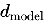
)
Entiers naturels
Nombre de couches physiques distinctes
() et nombre d'itérations récurrentes en
profondeur / de boucles ()3
Entiers naturels
Nombre de têtes de requêtes (), nombre de têtes de clés-valeurs ( dans GQA/MQA) et dimension d'une tête ()30
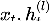
Vecteurs
Vecteur d'entrée à l'étape
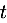
et état caché dans la couche à l'étape
Matrice
ou vecteur
État récurrent de taille fixe (poids
rapides / mémoire associative) dans les SSM et l'attention
linéaire25
Opérateurs tensoriels binaires
Produit d'Hadamard terme à terme (
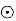
) et produit externe / de Kronecker ()
Fonctions d'activation non linéaires
Sigmoïde logistique et fonction
(Swish-1)
Fonctionnelle
Divergence de Kullback—Leibler
Voici les définitions rigoureuses des principaux mécanismes
architecturaux et algorithmiques :
Différentiation automatique en mode inverse (Reverse-Mode AD
/ rétropropagation) — algorithme de calcul exact du gradient
d'une fonction de perte scalaire par
rapport à tous les nœuds d'un graphe de calcul acyclique, en un temps
proportionnel à celui d'une seule passe avant, par propagation récursive
des dérivées adjointes de la sortie
vers l'entrée7.
Temps de calcul adaptatif (Adaptive Computation Time, ACT /
porte de sortie anticipée) — mécanisme d'allocation dynamique
du nombre d'itérations récurrentes pour
chaque token au moyen d'une porte d'arrêt apprenable , qui permet de consacrer davantage
d'opérations arithmétiques aux positions logiquement complexes41.
Poids rapides et apprentissage au moment du test (Fast
Weights / Test-Time Training, TTT) — paramètres d'un
sous-réseau interne ou matrice de mémoire associative mis à jour dynamiquement à l'étape
d'inférence (par la règle de Hebb, la règle delta ou un pas de descente
de gradient sur une perte auto-supervisée) afin de comprimer un contexte
long dans un volume de mémoire fixe44.
Quantification vectorielle, résiduelle et scalaire finie (VQ
/ RVQ / FSQ) — discrétisation d'un vecteur latent continu soit par la recherche de l'élément le plus
proche du dictionnaire de codes (VQ), soit par quantification en cascade
des résidus sur dictionnaires (Residual
VQ dans SoundStream, EnCodec, Mimi), soit par arrondi direct coordonnée
par coordonnée sur un réseau d'entiers borné, sans dictionnaire
apprenable (Finite Scalar Quantization dans CosyVoice 3)46.
Attention par requêtes groupées (Grouped-Query Attention,
GQA) et attention multi-requête (MQA) — partage d'un seul jeu
de projections de clés et de valeurs
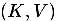
entre toutes les têtes de requêtes
(
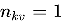
, MQA) ou au sein de groupes (
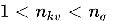
,
GQA), afin de réduire de plusieurs fois la taille du cache KV et le
trafic depuis la mémoire vidéo HBM lors du décodage39.
Attention latente multi-têtes à cache latent compressé
(Multi-Head Latent Attention, MLA) — mécanisme qui projette
l'état caché en un unique vecteur de faible rang (), avec une
branche distincte de petite dimension pour l'encodage positionnel
Decoupled RoPE ; à l'inférence, seul le latent compressé est mis en
cache, ce qui réduit la mémoire du cache KV de 93.3 % au niveau du
modèle (jusqu'à 98.24 % par couche par rapport à un MHA à 128
têtes)50.
Optimisation de politique relative par groupe (Group
Relative Policy Optimization, GRPO) — algorithme
d'apprentissage par renforcement sans réseau critique distinct (value
model), qui estime l'avantage en
standardisant les récompenses au sein d'un groupe de
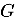
trajectoires générées pour un même
prompt53.
Règle delta dans l'attention linéaire (DeltaNet / Gated
DeltaNet / KDA) — remplacement de l'écriture additive par une réflexion de Householder généralisée
avec amortissement , qui efface
l'ancienne valeur associée à la clé
avant d'écrire la nouvelle valeur (où
est le scalaire dans GDN ou la matrice diagonale dans KDA)24.
Diffusion discrète de texte (Masked / Uniform Diffusion
Language Models, dLLM / MDM / UDLM) — modèles de langage non
autorégressifs fondés sur un transformeur bidirectionnel, qui
reconstruisent les tokens en parallèle à partir de masques [MASK] (MDM :
MDLM, LLaDA, Dream, Mercury) ou de substitutions lexicales aléatoires
(UDLM), en minimisant une borne variationnelle pondérée de la
vraisemblance35.
Alignement latent des représentations (Representation
Alignment, REPA / JEPA) — famille de principes d'apprentissage
: dans la compréhension du monde visuel (I-JEPA, V-JEPA), le réseau
prédit les représentations cachées de blocs masqués dans l'espace de
l'encodeur EMA, sans générer de pixels ; dans la génération par
diffusion (REPA), les couches intermédiaires du DiT sont alignées, par
similarité cosinus, sur les caractéristiques d'un enseignant visuel
préentraîné (par exemple DINOv2)36.
Hyper-connexions contraintes sur une variété
(Manifold-Constrained Hyper-Connections, mHC) — extension du
flux résiduel du transformeur d'un seul vecteur à voies
parallèles , où la matrice de mélange
des voies est projetée par l'algorithme de Sinkhorn—Knopp sur le
polytope de Birkhoff des matrices doublement stochastiques, afin
d'obtenir une propagation non expansive du signal () à profondeur arbitraire2.
Modèles d'espace d'états (Structured State Space Models, SSM
/ S4 / Mamba) — systèmes dynamiques linéaires , discrétisés avec un pas ; dans les SSM sélectifs (Mamba-1/2/3), les
paramètres dépendent de l'entrée, ce
qui permet un entraînement parallèle linéaire en et une mémoire constante par pas à l'inférence32.
Prédiction multi-tokens (Multi-Token Prediction,
MTP) — architecture d'entraînement et de décodage
auto-spéculatif dans laquelle, au-dessus du tronc commun du modèle, des
têtes en cascade prédisent plusieurs tokens de texte futurs ou les
niveaux résiduels des dictionnaires audio RVQ29.
Impulsion matricielle orthogonalisée (Muon /
MuonClip) — optimiseur pour les couches matricielles
bidimensionnelles, qui remplace la mise à l'échelle coordonnée par
coordonnée du gradient par une orthogonalisation approchée de la matrice
d'impulsion
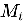
au moyen d'itérations
polynomiales de Newton—Schulz (), ce qui
égalise le spectre des valeurs singulières du pas de mise à jour65.
Connexions résiduelles avec attention en profondeur
(Attention Residuals, AttnRes) — remplacement de la sommation
fixe des sorties de toutes les couches précédentes par une attention
softmax apprenable le long de l'axe de la profondeur (sur les blocs
précédents), qui élimine la dilution de la norme des caractéristiques
dans les transformeurs Pre-LN profonds34.
Modèles vocaux full-duplex (Full-Duplex Speech-to-Speech,
STS) — architectures (Moshi, PersonaPlex, NemotronLabs
VoiceChat) qui traitent de façon synchrone le flux entrant de tokens
audio de l'utilisateur et génèrent des flux parallèles de « monologue
intérieur » (texte) et de tokens audio de réponse, sans segmentation en
répliques alternées, ce qui permet les interruptions et les
interjections avec une latence de 160–205 ms68.
Plongements positionnels rotatifs (Rotary Position
Embedding, RoPE / p-RoPE / 3D-RoPE / TMRoPE) — encodage de la
position relative par rotation de paires de coordonnées des requêtes
et des clés d'angles
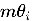
,
de sorte que le produit scalaire ne
dépend que du décalage ; se généralise
à la rotation d'une fraction du sous-espace (-RoPE) et aux axes spatio-temporels de la
vidéo et du son (3D-RoPE, TMRoPE)71.
Mélange parcimonieux d'experts (Sparse Mixture-of-Experts,
MoE / LatentMoE) — remplacement de la couche FFN dense par un
ensemble de sous-réseaux experts, avec
activation de experts par token ; dans
LatentMoE, le vecteur d'entrée est préalablement
comprimé en un latent de faible dimension afin de réduire le trafic de
lecture des poids et les échanges All-to-All entre serveurs27.
Attention parcimonieuse alignée sur le matériel (NSA / DSA /
CSA) — mécanismes d'attention parcimonieuse apprenables (Native
Sparse Attention, DeepSeek Sparse Attention, Compressed Sparse
Attention) qui utilisent une compression hiérarchique par blocs ou un
indexeur léger (lightning indexer) pour sélectionner les top- clés par requête, ramenant la complexité de
l'attention de à 31.
Transformeur récurrent en profondeur (bouclé) (Looped /
Recurrent-Depth Transformer, PLT) — architecture à poids
partagés en profondeur, qui fait passer l'état caché fois à travers un même bloc de couches
(Huginn, Ouro) ; dans le Parallel Loop Transformer
(PLT), les itérations successives de tokens voisins sont
exécutées en pipeline au sein d'une seule passe parallèle (Cross-Loop
Parallelism)3.
Flots rectifiés et appariement de flots (Flow Matching /
Rectified Flow) — apprentissage d'une EDO générative
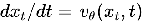
par régression directe du champ de vitesses
le long de l'interpolation linéaire
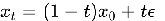
entre les données et un bruit gaussien, ce qui permet une génération
déterministe rapide en un petit nombre de pas d'Euler5.
Transducteur de tokens et de durées (Token-and-Duration
Transducer, TDT) — extension du décodeur ASR en flux RNN-T qui
prédit conjointement le token de sous-mot et le nombre de trames
acoustiques qu'il couvre, afin de
sauter les zones stationnaires et les pauses à l'inférence79.
1958
Domaines : Base
Le point de départ de l'apprentissage paramétrique des réseaux de
neurones artificiels fut la publication par Frank Rosenblatt de
l'article « The Perceptron: A Probabilistic Model for Information
Storage and Organization in the Brain » dans la revue
Psychological Review (n° 1) et la réalisation matérielle de la
machine Mark I Perceptron au Cornell Aeronautical Laboratory
(préalablement simulée sur le mainframe IBM 704)82. À la différence des
éléments logiques fixes de McCulloch et Pitts (1943), le perceptron de
Rosenblatt distinguait une rétine sensorielle (bloc
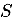
), une couche de projections associatives non
linéaires aléatoires (bloc ,
caractéristiques ) et un sommateur à
seuil apprenable (bloc ) qui définit un
hyperplan séparateur :
La règle de correction par l'erreur ne mettait à jour les poids que sur les objets mal classés , où , selon
la formule 83. La même année 1958 parut,
à titre posthume, la monographie de John von Neumann « The Computer
and the Brain » (n° 2), qui, pour la première fois, mettait en
regard l'architecture massivement parallèle et basse fréquence de la
mémoire synaptique du cerveau et le goulot d'étranglement séquentiel des
machines de calcul numériques. Bien que Rosenblatt ait déjà envisagé en
1958 des schémas multicouches, il lui manquait un algorithme
différentiable d'attribution du crédit pour les couches cachées7.
1959
Domaines : Encodeur Base
En 1959 apparurent trois piliers conceptuels des futurs réseaux profonds
: la hiérarchie neurophysiologique des filtres visuels, la
reconnaissance parallèle en cascade et l'amorçage (bootstrapping) de la
fonction d'évaluation dans le temps. David Hubel et Torsten Wiesel, dans
un article du The Journal of Physiology (n° 3), découvrirent
dans le cortex strié du chat des champs récepteurs locaux sélectifs à
l'orientation, qui devinrent le prototype biologique des noyaux
convolutifs85. Simultanément, Oliver Selfridge présenta au symposium de
Teddington l'architecture Pandemonium (n° 4) — une
hiérarchie parallèle de « démons de caractéristiques », de « démons
cognitifs » qui les pondèrent et d'un « démon de décision » supérieur
qui sélectionne le maximum de la réponse 87. La même année, Arthur Samuel publia dans
l'IBM Journal of Research and Development son célèbre travail
sur le jeu de dames auto-apprenant (n° 5), qui consacra le terme
machine learning et introduisit la mise à jour des poids du
polynôme d'évaluation à partir de la différence des évaluations de la
position courante et de la suivante — prototype direct de la méthode des
différences temporelles (TD learning) et du critique en apprentissage
par renforcement.
1960
Domaines : Base Optimisation
Le passage de la règle à seuil discontinue du perceptron à
l'optimisation par gradient lisse fut opéré par Bernard Widrow et
Marcian Hoff, qui présentèrent le nœud linéaire adaptatif
ADALINE et l'algorithme des moindres carrés
LMS (Widrow–Hoff / Delta Rule, n° 6)88. La nouveauté
essentielle d'ADALINE consistait à calculer l'erreur sur la sortie
linéaire continue avant le
quantificateur binaire à seuil. La descente de gradient stochastique sur
l'erreur quadratique instantanée donna
la règle delta classique :
C'est précisément cette équation — réécrite pour une mémoire associative
matricielle sous la forme — qui
constitue le fondement des transformeurs linéaires modernes
DeltaNet et Gated DeltaNet
(2024–2026)25. La même année 1960, Henry Kelley publia dans l'ARS
Journal l'article « Gradient Theory of Optimal Flight Paths
» (n° 7), où il établit la méthode continue des équations adjointes
pour la rétropropagation des dérivées de la fonctionnelle de coût le
long de la trajectoire d'un système dynamique — précurseur analytique à
la fois de la rétropropagation de l'erreur et des Neural ODE7.
1961
Domaines : Boucles Mémoire Base
En 1961, le cybernéticien allemand Karl Steinbuch publia dans le premier
tome de la revue Kybernetik le travail « Die Lernmatrix
» (« La matrice d'apprentissage », n° 8) — la première architecture
matricielle de mémoire hétéroassociative sur un réseau croisé de
conducteurs91. Dans la matrice de Steinbuch, le vecteur de
caractéristiques d'entrée et le code de
classe étaient reliés par une règle
locale de type Hebb , et la récupération
s'effectuait par un produit matrice-vecteur parallèle avec sélection concurrentielle du maximum.
Sur le plan algébrique, la « matrice d'apprentissage » posait le
prototype des mémoires associatives linéaires clé–valeur modernes . La même année, Eduardo Caianiello, dans le
Journal of Theoretical Biology (n° 9), sépara la dynamique des
réseaux de neurones en deux échelles de temps couplées : les « équations
neuronales » rapides de relaxation des activations et les « équations
mnémoniques » adiabatiques lentes de plasticité des poids
synaptiques.
1962
Domaines : Base Encodeur
En avril 1962, le mathématicien Albert Novikoff présenta une
démonstration rigoureuse et concise du théorème de convergence
du perceptron (n° 10 ; des bornes apparentées furent publiées
la même année par H. D. Block, n° 13)92. Novikoff montra que si un
échantillon à entrées de norme bornée
est linéairement séparable par un
vecteur unitaire () avec une marge positive , alors l'algorithme du perceptron, partant
du vecteur nul , s'achève en au plus
mises à jour. À chaque exemple erroné,
le produit scalaire avec l'oracle croît d'au moins (), tandis
que la condition d'erreur borne
supérieurement l'accroissement du carré de la norme par la quantité (), d'où
résulte une borne totalement indépendante de la dimension de l'espace
83 :
La même année parurent la monographie de synthèse de Frank Rosenblatt
« Principles of Neurodynamics » (n° 11), l'architecture
linéaire par morceaux MADALINE de Bernard Widrow (n°
12) et l'article classique de Hubel et Wiesel (n° 14), qui décrivait
l'alternance de cellules simples (détecteurs linéaires locaux
de contours) et de cellules complexes (pooling spatialement
invariant) dans le cortex visuel87.
1963
Domaines : Base Optimisation
Développant la géométrie de la marge séparatrice , Vladimir Vapnik et Alexander Lerner
publièrent dans la revue « Automatique et télémécanique »
(Avtomatika i Telemekhanika) l'article « Reconnaissance des
formes à l'aide de portraits généralisés » (n° 15)97. Au lieu de
chercher un hyperplan séparateur quelconque, les auteurs formulèrent un
problème d'optimisation quadratique visant à trouver l'unique
hyperplan de marge maximale (prototype linéaire de la
méthode des machines à vecteurs de support, SVM), dont le vecteur normal
ne se décompose que sur les vecteurs de support extrêmes de
l'échantillon . C'est ainsi que le
principe du contrôle de la norme des poids comme mesure de la capacité du classifieur
entra dans la théorie de l'apprentissage. La même année, Steinbuch et
Piske publièrent dans les IEEE Transactions on Electronic
Computers une analyse des matrices de mémoire continues en présence
de signaux bruités (n° 16), et Stuart Dreyfus simplifia la dérivation de
la règle de la chaîne des multiplicateurs adjoints par la programmation
dynamique (n° 17)7.
1964
Domaines : Optimisation Base
En 1964 furent créés trois outils mathématiques qui opèrent directement
dans les frameworks modernes d'apprentissage profond. Boris Teodorovitch
Polyak publia dans le « Journal de mathématiques computationnelles
et de physique mathématique » la méthode inertielle de la «
boule lourde » (Heavy-Ball Momentum) (n° 18), destinée à
accélérer la descente de gradient dans les problèmes en ravin mal
conditionnés100 :
Le terme d'inertie amortit les
oscillations transversales du gradient et réduit le nombre de
conditionnement effectif du problème quadratique de à .
Simultanément, Mark Aizerman, Emmanuil Braverman et Lev Rozonoer
introduisirent dans « Automatique et télémécanique » la
méthode des fonctions potentielles (n° 19) — une
justification rigoureuse de l'astuce du noyau, directement liée à la future factorisation
par noyau de l'attention linéaire20. La même année, Robert Wengert
présenta dans les Communications of the ACM (n° 20) un
algorithme logiciel de différentiation automatique en mode
direct (Forward-Mode AD) sur la liste des opérations
élémentaires.
1965
Domaines : Base Optimisation
En 1965, Alexeï Grigorievitch Ivakhnenko et Valentin Grigorievitch Lapa
publièrent la monographie « Dispositifs cybernétiques de prédiction
» (n° 21), décrivant les premiers algorithmes opérationnels
d'apprentissage couche par couche de perceptrons multicouches
profonds à nombre arbitraire de couches cachées7. Chaque nœud
du réseau calculait un polynôme quadratique de Kolmogorov—Gabor avec des
produits multiplicatifs des entrées ( —
précurseur algébrique des blocs à porte GLU et SwiGLU), les coefficients
étaient trouvés par la méthode des moindres carrés, et un échantillon de
validation écartait les neurones surajustés avant la construction de la
couche suivante7.
Parallèlement, Thomas Cover démontra dans les IEEE Transactions on
Electronic Computers le théorème fondamental de Cover sur
la capacité de séparation linéaire (n° 22) : le nombre de
partitions binaires linéairement réalisables de points en position générale dans est égal à
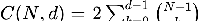
, ce qui représente exactement la moitié de
l'ensemble des dichotomies pour et tend exponentiellement vers zéro pour
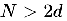
. Ce fait géométrique explique la
nécessité de projections larges des caractéristiques dans les couches
cachées des MLP et des MoE. L'année fut complétée par le livre classique
de Nils Nilsson « Learning Machines » (n° 23)88 et par la
méthode du gradient de Ho—Kashyap pour les systèmes d'inégalités
linéaires (n° 24).
1966
Domaines : Optimisation Base
En 1966, Yakov Zalmanovitch Tsypkin, dans le travail « Adaptation,
apprentissage et auto-apprentissage dans les systèmes automatiques
» (Automatique et télémécanique, n° 25), ramena les règles
disparates des perceptrons, d'ADALINE et du filtrage à un problème
variationnel unique de minimisation de l'espérance mathématique
de la fonction de perte (risque moyen)
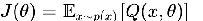
au moyen de l'approximation stochastique
récurrente de Robbins—Monro 105. Cette
formulation est devenue le langage standard de la théorie moderne de
l'optimisation des réseaux de neurones. La même année, Emmanuil
Braverman étendit la méthode des fonctions potentielles au problème de
l'auto-apprentissage et du clustering non supervisé (n° 26)20, tandis
que Lawrence Fogel, Alvin Owens et Michael Walsh faisaient paraître la
monographie « Artificial Intelligence through Simulated Evolution
» (n° 27), qui ouvrit la voie de la recherche évolutionnaire sans
gradient.
1967
Domaines : Base Optimisation
En juin 1967, Shun'ichi Amari publia dans les IEEE Transactions on
Electronic Computers l'article « A Theory of Adaptive Pattern
Classifiers » (n° 28) — le premier travail de l'histoire où la
descente de gradient stochastique de bout en bout (end-to-end
SGD) était appliquée à l'entraînement d'un réseau de neurones
multicouche à couches cachées non linéaires sur des distributions non
linéairement séparables7. Remplaçant l'échelon à seuil par des fonctions
d'activation lisses et différentiables, Amari établit la règle de la
chaîne pour la correction des poids cachés
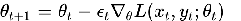
et entraîna expérimentalement un
classifieur à 5 couches dix-neuf ans avant la publication de 1986 dans
Nature7.
La même année parurent deux travaux d'une immense portée : Thomas Cover
et Peter Hart démontrèrent une borne asymptotique de l'erreur de la
règle du plus proche voisin (, n° 29),
posant la base théorique de la recherche vectorielle et des systèmes
RAG, et Richard Sinkhorn et Paul Knopp publièrent dans le Pacific
Journal of Mathematics le théorème et l'algorithme itératif de
normalisation alternée des lignes et des colonnes d'une matrice positive
vers une forme doublement stochastique (n° 30) — précisément l'opérateur
de Sinkhorn–Knopp qui, à la charnière 2025–2026, a
assuré la stabilité des hyper-connexions multivoies mHC
dans les architectures DeepSeek2.
1968
Domaines : Base Boucles
En 1968, Alexeï Ivakhnenko formalisa la Méthode de groupement
des arguments (MGUA / Group Method of Data Handling, GMDH) dans
la revue « Avtomatika » (n° 31)104, systématisant
l'accroissement automatique de réseaux polynomiaux profonds avec
sélection régulière des meilleurs neurones et arrêt précoce de la
profondeur sur un ensemble de validation indépendant. Parallèlement,
Stephen Grossberg publia dans les PNAS le modèle non linéaire
d'apprentissage associatif Outstar et un système
d'équations différentielles de la mémoire à court terme (STM) et à long
terme (LTM) (n° 32)109 :
démontrant la convergence inconditionnelle des poids synaptiques vers
les proportions spatiales du motif d'entrée. La même année, Vladimir
Vapnik et Alexeï Tchervonenkis publièrent dans les « Comptes rendus
de l'Académie des sciences de l'URSS » le théorème de convergence
uniforme des fréquences empiriques vers les probabilités sur une classe
d'événements, introduisant une mesure combinatoire de la capacité des
familles de fonctions — la dimension de Vapnik—Chervonenkis
(VC-dimension) (n° 33).
1969
Domaines : Base Encodeur Optimisation
En 1969, Marvin Minsky et Seymour Papert firent paraître la monographie
analytique « Perceptrons: An Introduction to Computational Geometry
» (n° 34)7. À l'aide de la théorie des invariants de groupes, les
auteurs démontrèrent rigoureusement l'impossibilité, pour un perceptron
monocouche à caractéristiques locales d'ordre borné, de réaliser le
prédicat de parité (y compris le XOR à deux bits) et le
prédicat topologique de connexité. Bien que les auteurs aient noté que
les réseaux multicouches sont exempts de cette limitation, l'absence
d'un algorithme efficace d'apprentissage des couches cachées, largement
connu en Occident, provoqua un refroidissement de l'intérêt pour le
connexionnisme dans le milieu académique anglophone7.
Cependant, la même année 1969 furent publiés deux éléments clés de
l'apprentissage profond moderne. Arthur Bryson et Yu-Chi Ho, dans le
livre « Applied Optimal Control » (n° 35), écrivirent les
formules discrètes explicites de la rétropropagation des multiplicateurs
de Lagrange à travers des cascades à plusieurs étapes
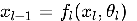
7. Simultanément, Kunihiko Fukushima, dans
l'article « Visual Feature Extraction by a Multilayered Network of
Analog Threshold Elements » (IEEE Transactions on Systems
Science and Cybernetics, n° 36)85, introduisit un réseau visuel
multicouche à redresseurs demi-onde analogiques
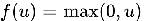
— historiquement la première utilisation de
la fonction d'activation ReLU dans des réseaux de
neurones multicouches7.
1970
Domaines : Base Optimisation
En 1970, le mathématicien finlandais Seppo Linnainmaa soutint à
l'Université d'Helsinki un mémoire de master (n° 37)7 dans lequel il
formula pour la première fois, et implémenta en code machine,
l'algorithme général de différentiation automatique en mode
inverse (Reverse-Mode Automatic Differentiation) pour des
graphes de calcul arbitraires. Si le calcul de la fonction de perte
scalaire est décomposé en nœuds
élémentaires
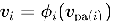
(), la passe arrière de vers
accumule récursivement les dérivées partielles :
Le calcul du vecteur gradient complet
par rapport à un nombre arbitraire de paramètres ne coûte qu'un facteur constant du nombre
d'opérations d'une seule passe avant114. La même année 1970, Broyden,
Fletcher, Goldfarb et Shanno établirent indépendamment la méthode
quasi-newtonienne du second ordre BFGS (n° 38), et
Ivakhnenko publia dans la revue internationale Automatica une
synthèse sur l'auto-organisation heuristique des réseaux profonds (n°
39)115.
1971
Domaines : Base Mémoire
En octobre 1971, Alexeï Ivakhnenko publia dans les IEEE Transactions
on Systems, Man, and Cybernetics l'article « Polynomial Theory
of Complex Systems » (n° 40)115, décrivant en détail la
construction et l'entraînement d'un réseau profond à 8
couches à propagation avant par la méthode MGUA, avec sélection
régularisée des caractéristiques sur un échantillon de validation7.
Cette publication devint l'un des premiers exemples, largement cités
dans la littérature internationale, d'entraînement pratique d'une
architecture profonde à huit couches7.
La même année, David Marr publia dans les Philosophical Transactions
of the Royal Society B un modèle mathématique de l'hippocampe,
« Simple Memory: A Theory for Archicortex » (n° 41)7. Marr
montra que le codage parcimonieux de vecteurs d'entrée dans un espace de
haute dimension, combiné à la plasticité locale de Hebb et à un seuil
inhibiteur adaptatif, permet d'enregistrer en une seule passe un grand
volume d'associations épisodiques et de les restituer sans erreur à
partir d'indices partiels — principe qui sous-tend les modules
parcimonieux modernes de mémoire externe et paramétrique.
1972
Domaines : Boucles Mémoire
En novembre 1972, Shun'ichi Amari publia dans les IEEE Transactions
on Computers l'article « Learning Patterns and Pattern
Sequences by Self-Organizing Nets of Threshold Elements » (n° 42),
établissant, dix ans avant la publication de Hopfield, les équations de
stabilité des réseaux associatifs récurrents discrets (réseau
d'Amari—Hopfield), aussi bien pour les attracteurs statiques
avec une matrice de poids symétrique que pour les chaînes dynamiques de
séquences avec une matrice asymétrique7 :
La même année 1972, Teuvo Kohonen introduisit indépendamment, dans les
IEEE Transactions on Computers, les mémoires matricielles de
corrélation (n° 43)118, James Anderson décrivit une mémoire interactive
linéaire à seuil dans Mathematical Biosciences (n° 44), Kaoru
Nakano construisit le système associatif Associatron
(n° 45)7, et Hugh Wilson et Jack Cowan, dans le Biophysical
Journal, établirent un système non linéaire d'EDO de populations
neuronales excitatrices et inhibitrices couplées (, n° 46), démontrant analytiquement le lien
entre les cycles limites d'oscillation et l'hystérésis multistable de la
mémoire119.
1973
Domaines : Encodeur Boucles
En 1973, Christoph von der Malsburg publia dans Kybernetik
l'article « Self-Organization of Orientation Sensitive Cells in the
Striate Cortex » (n° 47)115 — la première démonstration
informatique d'apprentissage compétitif (competitive
learning) de détecteurs de caractéristiques locales. En
combinant l'excitation intracorticale à courte portée, l'inhibition
latérale et la règle de Hebb avec la conservation de la -norme des synapses d'entrée de chaque
neurone (), von der Malsburg
montra la formation spontanée, sans supervision, de cartes ordonnées de
colonnes d'orientation.
Simultanément, Stephen Grossberg publia dans Studies in Applied
Mathematics une analyse rigoureuse des réseaux récurrents à
shunt avec saturation multiplicative et inhibition latérale
divisive (n° 48)109 : il démontra que c'est précisément la
caractéristique de transfert sigmoïdale qui supprime le bruit de fond de
faible amplitude et préserve le contraste relatif du motif sans
saturation lors d'une croissance arbitraire de la luminosité totale de
l'entrée — fondement théorique des couches de normalisation des
activations. Hugh Wilson et Jack Cowan généralisèrent leur dynamique de
populations à des champs neuronaux spatialement continus du cortex et du
thalamus (n° 49)124.
1974
Domaines : Base Optimisation Boucles
En 1974, Paul Werbos soutint à l'Université Harvard sa thèse de doctorat
« Beyond Regression: New Tools for Prediction and Analysis in the
Behavioral Sciences » (n° 50)7. Werbos formula la méthode de la «
rétroaction dynamique » — des formules explicites de rétropropagation en
chaîne des dérivées de la fonction objectif à travers des réseaux
multicouches arbitraires à nœuds non linéaires —, préparant
l'application directe de la méthode aux réseaux de neurones au début des
années 1980115.
La même année, le physicien William Little publia dans Mathematical
Biosciences l'article « The Existence of Persistent States in
the Brain » (n° 51)126, qui établit une correspondance directe
entre la physique statistique des systèmes de spins
d'Ising et les réseaux de neurones récurrents stochastiques. En
introduisant une température effective du bruit synaptique et une probabilité logistique de
déclenchement du neurone , Little
décrivit la mémoire à long terme comme des états propres dominants
dégénérés de la matrice de transition markovienne — fondement des
machines de Boltzmann et des modèles génératifs thermodynamiques.
1975
Domaines : Encodeur Mémoire Base
En 1975, Kunihiko Fukushima présenta dans Biological
Cybernetics le réseau multicouche auto-organisé
Cognitron (n° 52)86. Dans le Cognitron, des champs
récepteurs locaux excitateurs et inhibiteurs étaient combinés à un
rapport divisif de shunt et à un
renforcement compétitif des synapses du seul neurone le plus actif dans
un voisinage ; le réseau ne partageait cependant pas encore les poids
sur tout le plan et restait donc sensible aux décalages de
l'image129.
Parallèlement parurent trois travaux marquants dans des domaines voisins
: James Albus créa l'architecture rapide à hachage local du contrôleur
cérébelleux CMAC, à champs récepteurs grossiers et
chevauchants (n° 53)130 ; David Sherrington et Scott Kirkpatrick
introduisirent dans Physical Review Letters le modèle résoluble
de verre de spin SK à liaisons aléatoires de signe
alterné
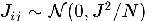
(n° 54)126, dont la méthode
analytique des répliques servit de base au calcul des transitions de
phase et de la capacité des réseaux de neurones ; et John Holland publia
la monographie « Adaptation in Natural and Artificial Systems »
(n° 55), qui posa les mathématiques des algorithmes génétiques.
1976
Domaines : Optimisation Boucles Base
En juin 1976, Seppo Linnainmaa publia dans la revue internationale
BIT Numerical Mathematics l'article en anglais « Taylor
Expansion of the Accumulated Rounding Error » (n° 56)23. Outre les
algorithmes complets de différentiation inverse du premier ordre et
d'ordres supérieurs sur un graphe de calcul, Linnainmaa analysa pour la
première fois le problème fondamental de la mémoire de la passe arrière
— la nécessité de conserver les états intermédiaires de toutes les
opérations et les moyens de réduire la consommation de mémoire maximale
—, préfigurant les techniques modernes de recalcul sélectif des
activations (activation / gradient checkpointing,
employées notamment dans l'entraînement de Ring Attention et de DeepSeek
mHC2).
La même année, Stephen Grossberg, dans un travail en deux parties paru
dans Biological Cybernetics (n° 57)126, formula le
dilemme stabilité—plasticité (comment faire apprendre à
un réseau de nouvelles classes sans détruire de façon catastrophique les
représentations apprises auparavant) et proposa un mécanisme de filtrage
par résonance des caractéristiques ascendantes par des attentes
descendantes (Adaptive Resonance Theory, ART), tandis
que David Willshaw et Christoph von der Malsburg construisirent un
modèle synaptique d'auto-organisation de projections topographiques
continues de la rétine (n° 58).
1977
Domaines : Boucles Mémoire Optimisation
En 1977, James Anderson, Jack Silverstein, Stephen Ritz et Randall Jones
publièrent dans Psychological Review le modèle récurrent non
linéaire de mémoire catégorielle Brain-State-in-a-Box
(BSB) (n° 59)122, qui borne la trajectoire de rétroaction
positive par les parois de l'hypercube unité :
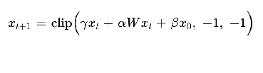
La matrice symétrique de liaisons de Hebb amplifie les projections le long des
vecteurs propres principaux jusqu'à ce que l'état se stabilise en un
sommet de l'hypercube correspondant à un prototype discret pur de
mémoire. La même année, Shun'ichi Amari publia la théorie mathématique
canonique des excitations localisées (« bumps » de la mémoire de
travail) dans des champs neuronaux continus à inhibition latérale (n°
60)124, Teuvo Kohonen fit paraître la monographie « Associative
Memory » (n° 61), et Arthur Dempster, Nan Laird et Donald Rubin
formalisèrent dans JRSS-B l'algorithme EM de
maximisation de la vraisemblance des modèles à variables latentes via la
borne variationnelle de Jensen (n° 62) — fondement analytique de
l'entraînement des MoE et des autoencodeurs variationnels.
1978
Domaines : Mémoire Boucles Base
En 1978, William Little et Gordon Shaw publièrent dans Mathematical
Biosciences le travail « Analytic Study of the Memory Storage
Capacity of a Neural Network » (n° 63)127. En résolvant
analytiquement un modèle linéarisé de réseau de neurones stochastique à
liaisons plastiques, les auteurs montrèrent rigoureusement que la
capacité informationnelle d'une mémoire neuronale distribuée croît
proportionnellement au nombre de synapses, et non au nombre de neurones 127. Dans l'ingénierie moderne, c'est
précisément cette loi qui explique pourquoi le stockage des faits du
monde exige de porter le nombre total de paramètres de poids à des
centaines de milliards, voire des milliers de milliards dans les
architectures MoE parcimonieuses, même lorsqu'un petit sous-ensemble
actif de neurones suffit pour traiter un seul token.
La même année, Gideon Schwarz introduisit dans les Annals of
Statistics le critère d'information bayésien BIC
pour la sélection de la dimension des modèles paramétriques (n° 64),
Stephen Grossberg présenta la théorie du chunking hiérarchique de
séquences en mémoire de travail (n° 65)109, et Kunihiko Fukushima
perfectionna la règle synaptique de type quadratique moyen pour
l'auto-apprentissage profond sans supervision (n° 66)129.
1979
Domaines : Encodeur Base
En octobre 1979, Kunihiko Fukushima publia dans la revue japonaise
Transactions of the IECE of Japan (tome J62-A, n° 10, p.
658–665) le premier article sur l'architecture
Neocognitron — le premier réseau de neurones convolutif
profond invariant aux décalages spatiaux des motifs d'entrée (n° 67)7.
S'inspirant de la découverte de Hubel et Wiesel, Fukushima organisa le
réseau comme une alternance à plusieurs étages de paires de couches de
deux types : des plans de cellules , dont tous les neurones d'un même
plan ont des poids partagés identiques (weight sharing) et
extraient une caractéristique locale en chaque point du champ
bidimensionnel (opération de convolution 2D avec redresseur ReLU), et
des plans de cellules , qui agrègent les réponses d'un
voisinage local de cellules avec
réduction de résolution (opération de pooling spatial), grâce à quoi la
tolérance au décalage s'accumule progressivement de couche en couche
sans perte de la géométrie relative des détails87. La même année, Leon
Cooper, F. Liberman et Erkki Oja publièrent dans Biological
Cybernetics un modèle synaptique de formation de la sélectivité des
neurones du cortex visuel (n° 68).
1980
Domaines : Encodeur Optimisation
En avril 1980 parut dans Biological Cybernetics (t. 36, p.
193–202) la publication classique en anglais de Kunihiko Fukushima «
Neocognitron: A Self-Organizing Neural Network Model for a Mechanism of
Pattern Recognition Unaffected by Shift in Position » (n° 69)86,
qui fit connaître la hiérarchie convolution-pooling à toute la
communauté mondiale. La réponse de la cellule à la position du plan de caractéristiques de la couche , avec inhibition divisive par l'activité
quadratique moyenne dans la fenêtre
locale , était donnée par l'équation
:
Ainsi, toute la topologie structurelle des réseaux visuels profonds —
convolutions 2D multicanaux à poids partagés, redressement , normalisation locale quadratique moyenne
et pooling spatial — était entièrement construite, dans l'attente du
remplacement des règles locales d'auto-organisation par la descente de
gradient globale87. La même année, Stephen Grossberg publia dans
Psychological Review un article de synthèse sur les codes
cognitifs résonants (n° 70), et Walter Baur et Volker Strassen
démontrèrent le célèbre théorème de complexité algébrique (Baur–Strassen
Theorem, n° 71) : le calcul du gradient de toute fonction rationnelle de
plusieurs variables sur un circuit arithmétique ne requiert pas plus de
cinq fois le nombre d'opérations du calcul de la fonction
elle-même114.
1981
Domaines : Mémoire Boucles Optimisation
En 1981, Geoffrey Hinton et James Anderson firent paraître la
monographie collective programmatique « Parallel Models of
Associative Memory » (n° 72)140, qui justifia le passage des nœuds
symboliques localistes (« un concept — une cellule ») aux
représentations vectorielles distribuées denses
(distributed representations), où chaque concept est codé par un motif
d'activité de nombreux éléments, assurant une généralisation automatique
par similarité des micro-caractéristiques. La même année, James
McClelland et David Rumelhart présentèrent dans Psychological
Review le modèle d'activation interactive de la
perception des lettres et des mots, avec des rétroactions
bidirectionnelles entre couches (n° 73), et Andrew Barto, Richard Sutton
et Peter Brouwer publièrent dans Biological Cybernetics le
modèle de réseau associatif de recherche (n° 74),
unissant génération stochastique d'actions et apprentissage par un
signal scalaire de renforcement — précurseur direct des méthodes de
gradient en apprentissage par renforcement.
1982
Domaines : Boucles Mémoire Encodeur Base
En avril 1982, John Hopfield publia dans les PNAS le célèbre
article « Neural Networks and Physical Systems with Emergent
Collective Computational Abilities » (n° 75)124. Ayant associé au
réseau récurrent binaire
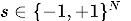
à matrice de
poids symétrique () une fonction d'énergie de
Lyapunov physique explicite :
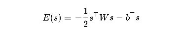
Hopfield démontra la non-croissance monotone de l'énergie () lors des mises à jour asynchrones à seuil
et la convergence vers des minima
locaux — attracteurs de mémoire adressables par le contenu (la capacité
de la variante binaire classique est d'environ motifs non corrélés, tandis que les réseaux
de Hopfield exponentiels modernes de 2016–2020 ont une capacité
exponentielle et sont équivalents à l'attention softmax du
transformeur142).
La même année 1982, Paul Werbos publia pour la première fois
explicitement, lors de la conférence IFIP, l'application de la
rétropropagation de l'erreur directement aux réseaux de neurones
artificiels (n° 76)7 ; Teuvo Kohonen créa les cartes
auto-organisatrices de caractéristiques (SOM) topographiques
(n° 77) ; Erkki Oja établit la règle de plasticité locale normalisée
(règle d'Oja, n° 78),
qui extrait le vecteur propre principal de la matrice de covariance des
données (ACP neuronale) ; Bienenstock, Cooper et Munro proposèrent la
règle non linéaire de modification synaptique à seuil glissant
BCM (n° 79) ; et parut, à titre posthume, le livre
fondamental de David Marr « Vision » (n° 80).
1983
Domaines : Optimisation Boucles
En 1983, Yurii Evgenievitch Nesterov publia dans les « Comptes
rendus de l'Académie des sciences de l'URSS » (Soviet
Mathematics Doklady, 27(2), 372–376) une méthode optimale de
minimisation de fonctions convexes lisses, à vitesse de convergence — la méthode du gradient accéléré
de Nesterov (NAG) (n° 81)143 :
Le calcul du gradient au point d'inertie anticipé assura une correction de trajectoire dans
les virages serrés du paysage de perte et devint la norme dans les
modifications modernes de SGD, dans NAdam et dans l'impulsion
orthogonalisée Muon. Dans le numéro de mai de Science, Scott
Kirkpatrick, Charles Gelatt et Mario Vecchi présentèrent l'optimisation
globale stochastique par recuit simulé (Simulated
Annealing) avec la probabilité de transition de Metropolis (n° 82)144, et Andrew Barto, Richard Sutton
et Charles Anderson publièrent dans IEEE TSMC l'architecture
neuronale Actor–Critic sur la tâche du maintien d'un
pendule inversé (n° 83)144.
1984
Domaines : Base Boucles Diffusion
En novembre 1984, Leslie Valiant publia dans les Communications of
the ACM l'article « A Theory of the Learnable » (n°
84)146, qui posa le fondement calculatoire et statistique rigoureux de
l'apprentissage probablement approximativement correct (PAC
Learning) : formalisation de la complexité d'échantillonnage et
de calcul nécessaire pour atteindre une erreur de généralisation avec une confiance . La même année, John Hopfield généralisa
son modèle aux circuits dynamiques continus à sigmoïde monotone lisse
et à fonctionnelle de Lyapunov
continue (n° 85), les frères Stuart et Donald Geman introduisirent dans
IEEE TPAMI l'échantillonnage de Gibbs (Gibbs
Sampling) sur des champs aléatoires markoviens à distribution
de Gibbs pour la restauration
bayésienne d'images bruitées (n° 86), et Teuvo Kohonen fit paraître la
monographie augmentée « Self-Organization and Associative Memory
» (n° 87).
1985
Domaines : Base Mémoire Diffusion
En 1985, David Ackley, Geoffrey Hinton et Terrence Sejnowski publièrent
dans Cognitive Science l'algorithme d'apprentissage des
machines de Boltzmann (n° 88)146 — des réseaux
d'énergie stochastiques à variables cachées, qui modélisent la distribution des
vecteurs visibles par marginalisation
. Le gradient de la divergence de
Kullback—Leibler par rapport au poids symétrique
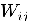
se ramena à une différence de corrélations
par paires dans deux régimes thermodynamiques :
Bien que le recuit MCMC de longue durée ait limité la taille des
machines de Boltzmann entièrement connectées, ce fut la première
démonstration théoriquement rigoureuse de l'apprentissage de
représentations distribuées profondes dans des réseaux génératifs150. La
même année 1985, Yann LeCun à la conférence Cognitiva 85 à
Paris (n° 89) et David Parker dans le rapport du MIT «
Learning-Logic » (n° 90) publièrent indépendamment des schémas de
rétropropagation de l'erreur par gradient pour les réseaux multicouches,
et David Rumelhart et David Zipser systématisèrent le clustering
compétitif de caractéristiques (n° 91).
1986
Domaines : Base Boucles Optimisation
En octobre 1986, David Rumelhart, Geoffrey Hinton et Ronald Williams
publièrent dans Nature le célèbre article « Learning
Representations by Back-Propagating Errors » (n° 92), simultanément
à la parution de l'ouvrage fondamental en deux volumes du groupe PDP
« Parallel Distributed Processing » (MIT Press, n° 93)7. Les
auteurs montrèrent qu'un perceptron multicouche (MLP) à activations
lisses , entraîné par propagation
récursive du vecteur de sensibilité :
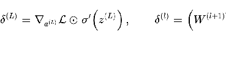
construit dans les couches intermédiaires des représentations
sémantiques non triviales et résout des prédicats non linéairement
séparables151. Dans la même édition PDP, Paul Smolensky introduisit le
réseau d'énergie biparti sans connexions intracouche
Harmonium — mathématiquement équivalent à la
machine de Boltzmann restreinte (RBM), avec une
inférence conditionnelle exacte en une étape (n° 94) ; Michael Jordan proposa un réseau
récurrent avec rétroaction de la sortie vers le vecteur d'état
contextuel (Jordan
RNN, n° 95) ; et Terrence Sejnowski et Charles Rosenberg
démontrèrent le synthétiseur de transcription phonémique de textes
anglais NETtalk (n° 96).
1987
Domaines : STT Boucles Encodeur
En 1987, Alexander Waibel, Toshiyuki Hanazawa, Geoffrey Hinton, Kiyohiro
Shikano et Kevin Lang créèrent le Time-Delay Neural Network
(TDNN) pour la reconnaissance des phonèmes de la parole (n°
97)87 — le premier réseau convolutif unidimensionnel le long de l'axe
temporel, à poids partagés, invariant au décalage des formants
acoustiques et entraîné par rétropropagation de l'erreur. La même année,
Geoffrey Hinton et David Plaut publièrent le travail « Using Fast
Weights to Deblur Old Memories » (n° 98)45, dotant chaque connexion
d'une paire formée d'un poids lent à long terme et d'un poids contextuel
à décroissance rapide (Fast Weights) — source
conceptuelle directe des couches modernes d'attention linéaire et
d'apprentissage au moment du test (TTT et Titans). Parallèlement, Dana
Ballard proposa à la conférence AAAI un préentraînement modulaire couche
par couche de hiérarchies profondes par pile
d'autoencodeurs (n° 99), Gail Carpenter et Stephen Grossberg
formalisèrent l'architecture de résonance adaptative ART
1 (n° 100)110, et Fernando Pineda établit dans Physical
Review Letters la rétropropagation continue des gradients pour les
points fixes d'attracteurs récurrents
Domaines : Encodeur Optimisation Boucles
En 1988, Wei Zhang et ses coauteurs publièrent le premier réseau
de neurones convolutif bidimensionnel invariant au décalage
(Shift-Invariant 2D CNN) pour la reconnaissance de caractères,
entraîné directement par la méthode de rétropropagation de l'erreur (n°
102)20. David Broomhead et David Lowe introduisirent dans Complex
Systems les réseaux à fonctions de base radiales (RBF
Networks) (n° 103). En
théorie de l'apprentissage, Richard Sutton publia dans la revue
Machine Learning le travail fondamental sur
l'apprentissage par différences temporelles TD(
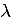
) (n° 104)152, qui met à jour les
paramètres du prédicteur selon le résidu de Bellman avant la fin de l'épisode. Simultanément,
Hervé Bourlard et Yves Kamp démontrèrent qu'un autoencodeur linéaire à
goulot d'étranglement de dimension
apprend le projecteur orthogonal sur les sous-espaces singuliers
principaux de la SVD (n° 105), et Bart Kosko introduisit la mémoire
hétéroassociative bidirectionnelle BAM (n° 106).
1989
Domaines : Encodeur Base Optimisation Boucles
En 1989, Yann LeCun, Bernhard Boser, John Denker, Donnie Henderson,
Richard Howard, Wayne Hubbard et Lawrence Jackel publièrent dans
Neural Computation l'article « Backpropagation Applied to
Handwritten Zip Code Recognition » (n° 107)87, entraînant un réseau
convolutif profond à filtres partagés 5×5 et à sous-échantillonnage
(stride 2) directement sur les pixels normalisés de codes postaux
manuscrits de l'USPS, et démontrant une amélioration spectaculaire de la
généralisation grâce au partage spatial des poids. La même année, George
Cybenko (n° 108), puis, indépendamment, Kurt Hornik, Maxwell Stinchcombe
et Halbert White (n° 109) démontrèrent le théorème
d'approximation universelle des fonctions continues sur des
compacts par des perceptrons à deux couches à activation non
polynomiale. L'année fut aussi marquée par l'algorithme d'apprentissage
en ligne des réseaux récurrents RTRL de Ronald Williams
et David Zipser (n° 110), la création du Q-learning
dans la thèse de Christopher Watkins (n° 111), la méthode à mémoire
limitée L-BFGS de Dong Liu et Jorge Nocedal (n° 112)153
et l'interprétation probabiliste de la fonction Softmax
chez John Bridle (n° 113).
1990
Domaines : Boucles Optimisation Base
En 1990, Jeffrey Elman publia dans Cognitive Science l'article
« Finding Structure in Time » (n° 114)154, qui fit du
réseau récurrent simple (Simple RNN / Elman Network) l'outil de base de la modélisation des
séquences et montra l'apparition spontanée de clusters
syntaxico-sémantiques dans l'espace caché lors de la prédiction du mot
suivant. Paul Werbos fixa dans les Proceedings of the IEEE la
formulation générale de la rétropropagation à travers le temps
(BPTT) par dépliage pas à pas du graphe (n° 115). À la
conférence NIPS, Yann LeCun, John Denker et Sara Solla présentèrent la
méthode d'élagage parcimonieux des poids du second ordre Optimal
Brain Damage (OBD) fondée sur la diagonale du hessien (n° 116) — précurseur direct des
algorithmes modernes de compression des LLM. Parallèlement, Jürgen
Schmidhuber proposa un jeu minimax de deux réseaux dans le cadre de la
curiosité artificielle antagoniste (n° 117)7, et Lars
Hansen et Peter Salamon justifièrent la réduction de la variance de
l'erreur dans les ensembles de réseaux de neurones (n°
118).
1991
Domaines : MoE Boucles Attention/LLM Base
En 1991 furent posés trois mécanismes fondamentaux qui déterminent
l'architecture des modèles phares de 2024–2027. Robert Jacobs, Michael
Jordan, Steven Nowlan et Geoffrey Hinton publièrent dans Neural
Computation l'article « Adaptive Mixtures of Local Experts
» (premier MoE, n° 119)156. En remplaçant la
moyenne de l'erreur quadratique par la maximisation du logarithme de la
vraisemblance d'un mélange gaussien piloté par un réseau de porte :
les auteurs obtinrent une spécialisation compétitive des experts sur différentes régions de l'espace
d'entrée, puisque le gradient est reçu principalement par l'expert ayant
la plus grande responsabilité a posteriori pour l'exemple.
En juin de la même année 1991, Sepp Hochreiter soutint, sous la
direction de Jürgen Schmidhuber, un mémoire de diplôme (n° 120)7,
donnant pour la première fois une analyse rigoureuse de
l'évanouissement et de l'explosion des gradients dans
les réseaux profonds et récurrents via le produit des jacobiens . Et au printemps 1991, Schmidhuber proposa
l'architecture des Fast Weight Programmers (n° 121 ;
publication en revue en 1992)7, où un réseau lent génère dynamiquement
des vecteurs de clés et de valeurs pour la réécriture additive de la
matrice de poids rapides
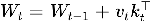
et la lecture
— construction mathématiquement
isomorphe à l'auto-attention linéaire non normalisée22. L'année s'acheva
avec les autoencodeurs non linéaires à cinq couches de Mark Kramer (n°
122) et le manuel classique de mécanique statistique des réseaux de
neurones de Hertz, Krogh et Palmer (n° 123).
1992
Domaines : Optimisation Boucles Base
En 1992, Ronald Williams publia dans Machine Learning
l'estimateur du gradient de politique REINFORCE avec
soustraction d'une ligne de base pour
réduire la variance (n° 124) :
devenu la base directe de l'optimisation des modèles de langage
raisonnants par les méthodes PPO et GRPO53. Simultanément, Jürgen
Schmidhuber introduisit dans Neural Computation le
compresseur neuronal d'historique (n° 125)22 — un
préentraînement auto-supervisé hiérarchique des RNN, qui ne transmet au
niveau supérieur que les tokens imprévisibles (« surprenants »), avec
compression ultérieure (« distillation ») d'un enseignant profond dans
un réseau élève compact7. Boris Polyak et Anatoli Juditsky démontrèrent
l'optimalité asymptotique du moyennage de la trajectoire des
poids de SGD (n° 126) —
fondement théorique des cibles EMA dans DINO, JEPA et la diffusion ;
Anders Krogh et John Hertz justifièrent la régularisation par
décroissance des poids (Weight Decay, n° 127) ; et
Boser, Guyon et Vapnik combinèrent la marge de l'hyperplan avec l'astuce
du noyau à la conférence COLT (n° 128).
1993
Domaines : Encodeur Base Optimisation
En 1993, Jane Bromley, Isabelle Guyon, Yann LeCun et leurs coauteurs
présentèrent à NIPS les réseaux de neurones siamois (Siamese
Networks) (n° 129) : deux tours convolutives identiques à poids
partagés projettent une paire d'entrées dans un espace métrique commun
de proximité cosinus — paradigme qui sous-tend tous les encodeurs
contrastifs modernes (CLIP, SigLIP, recherche dense). À la conférence
COLT, Geoffrey Hinton et Drew van Camp formulèrent le principe de
longueur de description minimale des poids par minimisation de l'énergie
libre variationnelle
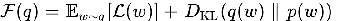
(inférence bayésienne variationnelle dans les réseaux de
neurones, n° 130), qui préfigura la fonctionnelle ELBO. La même
année, Andrew Barron démontra l'indépendance de la vitesse
d'approximation par un réseau à deux
couches vis-à-vis de la dimension de l'espace pour des fonctions à norme spectrale de
Fourier bornée (n° 131), et Babak Hassibi et David Stork généralisèrent
l'élagage hessien en un Optimal Brain Surgeon (OBS)
complet, non diagonal (n° 132) — base mathématique des quantificateurs
modernes de poids de LLM (GPTQ).
1994
Domaines : Boucles MoE Optimisation
En 1994, Yoshua Bengio, Patrice Simard et Paolo Frasconi publièrent dans
les IEEE Transactions on Neural Networks le théorème rigoureux
« Learning Long-Term Dependencies with Gradient Descent is Difficult
» (n° 133), démontrant un conflit fondamental des systèmes
dynamiques non linéaires : le stockage d'un bit robuste au bruit dans un
attracteur hyperbolique exige des valeurs propres du jacobien , ce qui provoque automatiquement une
décroissance exponentielle du gradient de l'erreur dans le temps. La
même année, Michael Jordan et Robert Jacobs généralisèrent le mélange
d'experts en un mélange hiérarchique d'experts (HME)
arborescent à apprentissage EM rapide (n° 134), Barak Pearlmutter
établit l'opérateur différentiel pour
le produit exact hessien-vecteur en
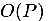
opérations sans stocker la matrice des dérivées secondes (n° 135), et
parut la première édition du cours fondamental de Simon Haykin «
Neural Networks: A Comprehensive Foundation » (n° 136).
1995
Domaines : Base Diffusion Encodeur
En mai 1995, Geoffrey Hinton, Peter Dayan, Brendan Frey et Radford Neal
publièrent dans Science l'architecture de la machine de
Helmholtz et l'algorithme biphasé Wake–Sleep
(n° 137), appariant un modèle génératif dirigé à un réseau d'inférence de reconnaissance
rapide — précurseur structurel direct
de l'autoencodeur variationnel. Anthony Bell et Terrence Sejnowski
créèrent l'algorithme de séparation aveugle de signaux InfoMax
ICA par maximisation de l'entropie de la sortie non linéaire
(n° 138) ; Corinna Cortes et Vladimir Vapnik introduisirent le
classifieur à marge souple Support-Vector Networks (n°
139)149 ; Yann LeCun et Yoshua Bengio systématisèrent les architectures
convolutives 1D/2D pour la parole et les images (n° 140) ; et
Christopher Bishop publia la monographie classique « Neural Networks
for Pattern Recognition » (Oxford University Press, n° 141)88, qui
fixa l'interprétation bayésienne et probabiliste des fonctions de perte
et de la régularisation.
1996
Domaines : Encodeur Base Boucles
En juin 1996, Bruno Olshausen et David Field montrèrent dans la revue
Nature (« Emergence of Simple-Cell Receptive Field
Properties by Learning a Sparse Code for Natural Images », n° 142)
que la minimisation de l'erreur quadratique de reconstruction d'images
naturelles par un dictionnaire surcomplet avec une pénalité de
parcimonie en norme \ forme spontanément des ondelettes de Gabor
localisées et orientées — fondement mathématique à la fois du codage
parcimonieux et des Sparse Autoencoders (SAE) modernes pour
l'interprétabilité des LLM. La même année, Radford Neal, dans la
monographie « Bayesian Learning for Neural Networks » (n° 143),
démontra la convergence de réseaux de neurones d'initialisation
aléatoire de largeur infinie () vers
des processus gaussiens (NNGP), Christoph Goller et
Andreas Küchler introduisirent la rétropropagation sur des graphes
acycliques et des arbres syntaxiques (n° 144), et parut le livre de
Brian Ripley « Pattern Recognition and Neural Networks » (n°
145).
1997
Domaines : Boucles Mémoire Optimisation
En novembre 1997, Sepp Hochreiter et Jürgen Schmidhuber publièrent dans
Neural Computation l'architecture Long Short-Term
Memory (LSTM) (n° 146)7. Pour surmonter l'évanouissement des
gradients, les auteurs remplacèrent la transformation non linéaire
contractante de l'état par un carrousel d'erreur constante
(Constant Error Carousel, CEC) linéaire
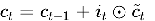
, de jacobien unité dans le temps, en
protégeant l'écriture et la lecture par des portes multiplicatives
d'entrée () et de sortie () :
La même année 1997, Mike Schuster et Kuldip Paliwal créèrent dans
IEEE TSP les réseaux récurrents bidirectionnels
(BiRNN) (n° 147), qui combinent les dépliages temporels avant
et arrière pour un encodage contextuel complet ; Hochreiter et
Schmidhuber introduisirent le critère de recherche de minima
plats (Flat Minima) à faible courbure du hessien pour améliorer
la généralisation (n° 148) ; et Yoav Freund et Robert Schapire
publièrent l'algorithme de boosting pondéré AdaBoost
(n° 149).
1998
Domaines : Encodeur Optimisation Base
En novembre 1998, Yann LeCun, Léon Bottou, Yoshua Bengio et Patrick
Haffner publièrent dans les Proceedings of the IEEE l'article
monumental « Gradient-Based Learning Applied to Document Recognition
» (n° 150), fixant le réseau convolutif de référence à 7 couches
LeNet-5 (erreur de 0.8 % sur le jeu de données MNIST)
et les réseaux de transducteurs de graphes (GTN)
entraînés globalement pour la lecture de documents multicaractères sans
segmentation préalable, complété par le guide pratique de mise à
l'échelle des activations et d'initialisation « Efficient BackProp
» (n° 151). Simultanément, Shun'ichi Amari établit dans Neural
Computation le gradient naturel (Natural Gradient) dans la métrique riemannienne de la
matrice d'information de Fisher (n°
152)159 — fondement invariant par reparamétrisation des algorithmes du
second ordre K-FAC, Shampoo, SOAP et des régions de confiance de PPO160.
La même année parurent les monographies classiques de Richard Sutton et
Andrew Barto sur l'apprentissage par renforcement (n° 153)152 et de
Vladimir Vapnik « Statistical Learning Theory » (n° 154)99.
1999
Domaines : Boucles Mémoire Base
Dans les flux continus sans marqueurs de réinitialisation, la cellule de
mémoire linéaire
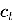
de la LSTM originale
de 1997 se saturait indéfiniment. Felix Gers, Jürgen Schmidhuber et Fred
Cummins résolurent ce problème à la conférence ICANN 1999 (n° 155)155,
en introduisant la porte d'oubli (Forget Gate)
multiplicative
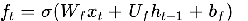
, qui permit à la
cellule d'effacer dynamiquement l'état périmé. Il est remarquable que le
passage du DeltaNet linéaire à Gated DeltaNet et
KDA en 2024–2025 ait reproduit la même idée
mathématique d'introduction d'un facteur d'amortissement dépendant de
l'entrée
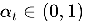
devant la mémoire
matricielle24. La même année, Daniel Lee et Sebastian Seung publièrent
dans Nature la factorisation matricielle non négative
(NMF) (n° 156), montrant que l'interdiction de la soustraction
mutuelle des caractéristiques pour
fait ressortir des composantes additives interprétables (principe
transposé en 2025 aux projections non négatives de l'architecture DeepSeek
mHC2), et Ning Qian donna une analyse spectrale exacte
de l'impulsion dans la descente de gradient (n° 157).
2000
Domaines : Boucles Mémoire Base
En 2000, Gers, Schmidhuber et Cummins publièrent la version complète en
revue de la LSTM à porte d'oubli dans Neural
Computation (n° 158) et la complétèrent par des connexions
« judas » (Peephole Connections) de l'état de la cellule directement vers les portes, pour compter
avec précision des intervalles de temps (n° 159) :
À la conférence NIPS 2000, Charles Dugas, Yoshua Bengio et leurs
coauteurs introduisirent la fonction d'activation lisse strictement
positive Softplus (n°
160)161, primitive de la sigmoïde logistique, qui, dans les SSM modernes
(Mamba-1/2/3) et les réseaux delta, est le paramétreur standard du pas
de discrétisation 24. Simultanément, la
revue Science publia les algorithmes géométriques de
redressement non linéaire des variétés de données
Isomap de Tenenbaum et al. (n° 161) et
LLE de Roweis et Saul (n° 162).
2001
Domaines : Boucles Encodeur Base
En 2001, Herbert Jaeger présenta le concept de calcul par réservoir dans
un rapport sur les réseaux à états d'écho (Echo State Networks,
ESN) (n° 163) : un grand réservoir récurrent fixe, de rayon
spectral , projette non linéairement
l'historique d'entrée dans un état de grande dimension , au-dessus duquel seule la matrice de
lecture de sortie est entraînée par régression linéaire, sans BPTT. À la
conférence ICML 2001, John Lafferty, Andrew McCallum et Fernando Pereira
introduisirent les champs aléatoires conditionnels (Conditional
Random Fields, CRF) (n° 164), qui normalisent globalement les
probabilités de toute la séquence de sortie et éliminèrent le biais des modèles
markoviens à normalisation locale. La même année parut la première
édition de la monographie statistique fondamentale de Hastie, Tibshirani
et Friedman « The Elements of Statistical Learning » (n°
165).
2002
Domaines : Diffusion Base Boucles
En 2002, Geoffrey Hinton publia dans Neural Computation
l'algorithme de divergence contrastive (-step Contrastive Divergence, CD-) (n° 166)142, qui accéléra
radicalement l'entraînement des modèles à énergie et des RBM : au lieu
d'une longue convergence de la chaîne de Markov vers l'équilibre de la
densité modélisée, la phase négative du gradient est approximée en un
seul pas d'échantillonnage de Gibbs
partant du vecteur de données réel. Wolfgang Maass, Thomas Natschläger
et Henry Markram présentèrent l'analogue impulsionnel des réseaux à
réservoir — les machines à états liquides (LSM) (n°
167) ; Michael Collins généralisa à EMNLP le perceptron et le théorème
de Novikoff aux tâches de prédiction structurée de séquences avec
décodage de Viterbi (n° 168) ; et Ronan Collobert, Samy Bengio et Johnny
Mariéthoz publièrent la bibliothèque modulaire ouverte en C++
Torch (n° 169), ancêtre du PyTorch moderne.
2003
Domaines : Base Attention/LLM Encodeur
En 2003, Yoshua Bengio, Réjean Ducharme, Pascal Vincent et Christian
Jauvin publièrent dans JMLR l'article « A Neural
Probabilistic Language Model » (n° 170), qui remplaça les compteurs
discrets de -grammes par une matrice
apprenable de plongements lexicaux vectoriels denses et par un perceptron lisse au-dessus
de la fenêtre concaténée des tokens précédents
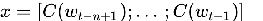
:
L'entraînement conjoint des plongements et de la couche cachée reporta
la masse de probabilité sur des combinaisons de mots sémantiquement
proches, jamais rencontrées littéralement dans le corpus, ouvrant la
voie directe aux LLM modernes. La même année, Patrice Simard, Dave
Steinkraus et John Platt introduisirent les déformations élastiques des
données et standardisèrent les pratiques convolutives simples à ICDAR
(0.4 % d'erreur sur MNIST, n° 171), et David MacKay publia l'ouvrage
fondamental « Information Theory, Inference, and Learning Algorithms
» (n° 172).
2004
Domaines : Optimisation Base
En 2004, Kyoung-Su Oh et Keechul Jung publièrent dans Pattern
Recognition l'article « GPU Implementation of Neural Networks
» (n° 173), qui transposa pour la première fois les multiplications
matricielles d'un réseau de neurones entièrement connecté sur le
pipeline de pixel shaders d'une carte vidéo (ATI Radeon 9700 Pro), avec
une accélération de 20× par rapport au processeur
central7. À la conférence ICML 2004, Andrew Ng démontra rigoureusement
qu'en présence d'un nombre exponentiel de caractéristiques bruitées, la
complexité d'échantillonnage de la régularisation \ ne croît que logarithmiquement
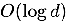
, alors que pour les méthodes invariantes
par rotation à pénalité \ elle croît
linéairement (n° 174). À NIPS, Max
Welling, Michal Rosen-Zvi et Geoffrey Hinton étendirent l'architecture
RBM aux distributions continues de la famille exponentielle
(Exponential Family Harmoniums, n° 175)162.
2005
Domaines : Diffusion STT Encodeur Base
En 2005, Aapo Hyvärinen publia dans JMLR la méthode
d'appariement de la fonction de score (Score Matching)
(n° 176)161, qui permit d'entraîner des densités d'énergie non
normalisées sans calculer la fonction
de partition , en minimisant l'écart
entre les gradients du logarithme de la densité par rapport au vecteur
de données (l'inconnue
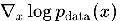
étant éliminée par intégration par parties)
:
La même année, Alex Graves et Jürgen Schmidhuber combinèrent la LSTM à
portes avec un dépliage bidirectionnel dans le temps
(BiLSTM) et une rétropropagation complète à travers les
portes pour la classification phonémique de la parole (n° 177) ; Sumit
Chopra, Raia Hadsell et Yann LeCun introduisirent à CVPR la fonction de
perte métrique Contrastive Loss (n° 178) ; Marco Gori,
Gabriele Monfardini et Franco Scarselli proposèrent la première
formulation des réseaux de neurones sur graphes (GNN)
(n° 179) ; et Frederic Morin et Yoshua Bengio accélérèrent la couche de
sortie des modèles de langage de à
grâce au Softmax
hiérarchique sur un arbre binaire de mots (n° 180).
2006
Domaines : STT Base Encodeur
À la conférence ICML 2006, Alex Graves, Santiago Fernández, Faustino
Gomez et Jürgen Schmidhuber présentèrent le mécanisme de
Connectionist Temporal Classification (CTC) (n° 181),
qui libéra la reconnaissance de la parole et de l'écriture manuscrite de
la nécessité d'un étiquetage des phonèmes trame par trame. En étendant
l'alphabet par un symbole vide (blank)
et en introduisant l'opérateur d'effondrement des répétitions et des
vides , CTC calcule la probabilité
exacte de la transcription cible en
sommant sur tous les chemins d'alignement admissibles de longueur par la méthode de programmation dynamique
avant-arrière en :
Simultanément, Geoffrey Hinton, Simon Osindero et Yee-Whye Teh
publièrent le préentraînement couche par couche des réseaux de
croyance profonds (Deep Belief Nets) à partir d'une pile de RBM
(n° 182)142, et Hinton et Ruslan Salakhutdinov démontrèrent dans la
revue Science la compression non linéaire de données par des
autoencodeurs profonds avec affinage par rétropropagation (n° 183),
ramenant les réseaux profonds au centre de l'attention scientifique.
L'année s'acheva avec la synthèse fondamentale sur les modèles à énergie
de Yann LeCun et de ses coauteurs (n° 184) et le manuel classique de
Christopher Bishop « Pattern Recognition and Machine Learning »
(n° 185)164.
2007
Domaines : Base Optimisation Encodeur
En 2007, Yoshua Bengio, Pascal Lamblin, Dan Popovici et Hugo Larochelle
montrèrent à NIPS (« Greedy Layer-Wise Training of Deep Networks
», n° 186)163 que le préentraînement glouton couche par couche
d'autoencodeurs déterministes initialise les réseaux profonds aussi bien
que les RBM stochastiques. À la même conférence, Léon Bottou et Olivier
Bousquet publièrent le travail « The Tradeoffs of Large Scale
Learning » (n° 187), démontrant qu'à budget de temps de calcul
fixé, en régime de grands échantillons, la simple descente de gradient
stochastique du premier ordre (SGD) minimise le risque de généralisation
espéré de façon asymptotiquement plus efficace que les lourds
optimiseurs du second ordre. Andriy Mnih et Geoffrey Hinton
introduisirent le Log-Bilinear Language Model (n° 188),
et Ruslan Salakhutdinov, Andriy Mnih et Geoffrey Hinton appliquèrent les
RBM au filtrage matriciel de recommandations sur le Netflix Prize (n°
189).
2008
Domaines : Encodeur Diffusion Attention/LLM
À la conférence ICML 2008, Pascal Vincent, Hugo Larochelle, Yoshua
Bengio et Pierre-Antoine Manzagol présentèrent les autoencodeurs
débruiteurs (Denoising Autoencoders, DAE) (n° 190)161 : le
vecteur d'entrée est délibérément corrompu par une mise à zéro aléatoire
de composantes (masquage) ou par un bruit gaussien , et le réseau est entraîné à reprojeter le
point bruité sur la variété des données propres 165. Ce simple remplacement de la
reconstruction identique par le débruitage devint un pont conceptuel
direct à la fois vers la modélisation du langage masquée (BERT, LLaDA)
et vers l'appariement de score par diffusion. À la même ICML, Ronan
Collobert et Jason Weston entraînèrent une architecture convolutive
unique, avec des plongements de mots préentraînés sur Wikipédia, pour
résoudre conjointement six tâches de NLP sans ingénierie manuelle des
caractéristiques (n° 191), et Laurens van der Maaten et Geoffrey Hinton
introduisirent dans JMLR l'algorithme de visualisation de
variétés t-SNE (n° 192).
2009
Domaines : Encodeur Optimisation Base
En 2009 coïncidèrent trois événements qui préparèrent la mise à
l'échelle de l'apprentissage profond moderne. Jia Deng, Fei-Fei Li et
leurs coauteurs présentèrent à CVPR le corpus hiérarchique
ImageNet (plus de 14 millions d'images annotées, n°
193)167 ; Rajat Raina, Anand Madhavan et Andrew Ng entraînèrent à ICML
des réseaux profonds de 100 millions de paramètres sur des cœurs
programmables CUDA GPU avec une accélération de
70× par rapport aux CPU multicœurs (n° 194) ; et Yoshua Bengio,
Jérôme Louradour, Ronan Collobert et Jason Weston formalisèrent
l'apprentissage par curriculum (Curriculum Learning)
(n° 195) — élévation progressive de la difficulté et de la longueur des
exemples d'entraînement, devenue une étape obligée de l'entraînement
progressif au contexte long et à la haute résolution dans tous les LLM
et générateurs vidéo modernes59. La même année, Salakhutdinov et Hinton
créèrent les machines de Boltzmann profondes (DBM) à
connexions bidirectionnelles entre couches (n° 196), et Franco Scarselli
et al. établirent la convergence mathématique des réseaux sur graphes
GNN dans IEEE TNN (n° 197).
2010
Domaines : Base Optimisation Boucles
En 2010 furent levés les principaux obstacles à l'entraînement de
réseaux profonds à propagation avant à partir de zéro, sans
préentraînement couche par couche. Xavier Glorot et Yoshua Bengio, à la
conférence AISTATS (n° 198), montrèrent que, pour conserver
simultanément la variance du signal dans la passe avant et la variance
des gradients dans la passe arrière, les poids d'une couche doivent être
initialisés avec la variance de Glorot (Xavier
Initialization) :
À la conférence ICML 2010, Vinod Nair et Geoffrey Hinton publièrent le
travail « Rectified Linear Units Improve Restricted Boltzmann
Machines » (n° 199), introduisant dans la pratique courante
l'activation linéaire par morceaux ReLU, de dérivée unité sur le demi-axe positif.
La même année, Tomáš Mikolov et ses coauteurs présentèrent à Interspeech
le modèle de langage récurrent (RNNLM) pour la
reconnaissance de la parole (n° 200), Michael Gutmann et Aapo Hyvärinen
établirent l'estimation contrastive par le bruit (NCE)
(n° 201), James Martens entraîna des réseaux profonds sans
préentraînement par la méthode du second ordre
Hessian-Free (n° 202), et parut le compilateur
symbolico-tensoriel de différentiation automatique sur GPU
Theano de James Bergstra et du groupe de Bengio (n°
203).
2011
Domaines : Optimisation Diffusion Base STT
En 2011, John Duchi, Elad Hazan et Yoram Singer publièrent dans
JMLR l'optimiseur adaptatif AdaGrad (n°
204)168, qui normalise le pas de chaque coordonnée par la racine de la
somme cumulée des carrés de ses gradients passés , ce qui fonda toute la famille des méthodes
adaptatives d'optimisation des réseaux profonds.
Pascal Vincent publia à l'été 2011 dans Neural Computation
l'article théorique fondamental « A Connection Between Score
Matching and Denoising Autoencoders » (Denoising Score
Matching, DSM, n° 205)161. Vincent démontra rigoureusement que
l'entraînement d'un autoencodeur à supprimer un bruit gaussien équivaut à l'estimation de la fonction de
score de la densité lissée de Parzen sans calcul des dérivées secondes du jacobien166 :
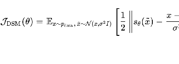
Étant donné que
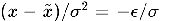
, cette formule est le
noyau mathématique direct de tous les modèles de diffusion continus
(NCSN, DDPM, Score SDE)142. La même année, Glorot, Bordes et Bengio
justifièrent la parcimonie des réseaux profonds à ReLU (n° 206), Max
Welling et Yee-Whye Teh associèrent le gradient stochastique à la
dynamique de Langevin dans SGLD (n° 207), Frank Seide,
Gang Li et Dong Yu réalisèrent une percée dans la reconnaissance
industrielle de la parole conversationnelle avec l'hybride
CD-DNN-HMM (n° 208), et Collobert et al. publièrent
l'article de synthèse « Natural Language Processing (Almost) from
Scratch » dans JMLR (n° 209).
2012
Domaines : Encodeur STT Optimisation Boucles
En décembre 2012, Alex Krizhevsky, Ilya Sutskever et Geoffrey Hinton
présentèrent à NIPS le réseau convolutif à huit couches
AlexNet (n° 210)96, qui réduisit l'erreur Top-5 sur
ImageNet ILSVRC-2012 de 26.2 % à 15.3 % (précision
Top-1 de 63.3 %). Le succès d'AlexNet combinait 60 millions de
paramètres, la non-linéarité ReLU (qui accéléra la
convergence d'un facteur 6 par rapport à ), la désactivation stochastique de neurones
Dropout pour supprimer la coadaptation des
caractéristiques (Hinton et al., 2012, n° 212) et un entraînement
parallèle par modèle sur deux cartes vidéo NVIDIA GTX 580167.
Simultanément, en novembre 2012, Alex Graves publia l'architecture
RNN-Transducer (RNN-T) (n° 211), qui leva l'hypothèse
d'indépendance conditionnelle des sorties de CTC en réunissant
l'encodeur acoustique et le réseau
autorégressif de prédiction de texte
dans un réseau conjoint Joiner avec marginalisation sur le treillis
bidimensionnel — standard de tous les
systèmes de reconnaissance de la parole en flux jusqu'aux TDT
modernes170. La même année apparurent la mise à l'échelle du pas par
moyenne glissante quadratique RMSProp de Hinton et la
méthode sans dimension Adadelta de Matthew Zeiler (n°
213), le framework de cluster distribué DistBelief de
Jeff Dean et al. (n° 214), les ensembles de GPU-CNN de Dan Cireşan, Ueli
Meier et Jürgen Schmidhuber avec la première précision surhumaine sur la
reconnaissance de panneaux (n° 215)155 et la démonstration de
l'efficacité de la recherche aléatoire d'hyperparamètres par Bergstra et
Bengio (n° 216).
2013
Domaines : Encodeur Diffusion Base
Optimisation
En décembre 2013, Diederik Kingma et Max Welling publièrent
l'Autoencodeur variationnel (Variational Autoencoder,
VAE) (« Auto-Encoding Variational Bayes », n° 217 ;
indépendamment Danilo Rezende, Shakir Mohamed et Daan Wierstra, n° 218),
qui maximise la borne inférieure variationnelle de la vraisemblance
(ELBO) :
L'astuce de reparamétrisation introduite par les auteurs déporta l'aléa
dans un bruit externe et permit d'entraîner des encodeurs probabilistes
profonds arbitraires par la rétropropagation ordinaire de l'erreur ; ce
sont précisément les espaces comprimés des VAE qui forment aujourd'hui
le substrat latent de tous les générateurs phares d'images, de vidéo et
de parole longue74.
Parallèlement, Tomáš Mikolov et ses coauteurs chez Google présentèrent
les architectures contrastives Word2Vec (Skip-Gram et
CBOW avec échantillonnage négatif, n° 219), qui étendirent
l'apprentissage des représentations vectorielles de mots à des corpus de
milliards de mots, avec une structure sémantique linéaire. Min Lin,
Qiang Chen et Shuicheng Yan introduisirent les convolutions ponctuelles
1×1 et le pooling moyen global dans Network in Network
(n° 220), Ian Goodfellow et al. proposèrent l'activation
Maxout (n° 221), Volodymyr Mnih et l'équipe de DeepMind
associèrent un réseau convolutif à l'apprentissage Q et à un tampon
d'expérience dans DQN sur les jeux Atari (n° 222),
Andrew Saxe, James McClelland et Surya Ganguli démontrèrent la
conservation des valeurs singulières du jacobien dans
l'initialisation orthogonale des réseaux profonds (n°
223)175, et Rie Johnson et Tong Zhang introduisirent la réduction de
variance du gradient SVRG (n° 224).
2014
Domaines : Attention/LLM Boucles Diffusion Encodeur
Optimisation
En 2014 naquirent l'attention douce différentiable, les réseaux
antagonistes génératifs et l'optimiseur principal de l'apprentissage
profond moderne. À la suite du modèle Seq2Seq d'Ilya
Sutskever, Oriol Vinyals et Quoc Le (n° 225), qui comprimait la phrase
d'entrée dans un unique vecteur fixe de LSTM, Dzmitry Bahdanau,
Kyunghyun Cho et Yoshua Bengio (« Neural Machine Translation by
Jointly Learning to Align and Translate », n° 226) éliminèrent le
goulot d'étranglement informationnel du vecteur fixe, en permettant au
décodeur de pondérer dynamiquement, à chaque pas , tous les états cachés de l'encodeur (attention additive)
:
La même année, Kyunghyun Cho et al. simplifièrent la cellule récurrente
à portes en deux portes dans le GRU (, n° 227), et Alex Graves, Greg Wayne et Ivo
Danihelka dotèrent le réseau de neurones d'une mémoire matricielle
externe différentiable dans la Neural Turing Machine
(NTM) (n° 228). À NIPS 2014, Ian Goodfellow et ses coauteurs
formulèrent le jeu minimax du générateur et du discriminateur des
GAN (, n° 229), et en
décembre Diederik Kingma et Jimmy Ba publièrent l'optimiseur
Adam (n° 230), qui combine des estimations
exponentielles glissantes des moments du premier et du second ordre du
gradient avec correction du biais d'initialisation à zéro. En vision par
ordinateur et en plongements parurent les cascades de petits noyaux 3×3
VGG de Simonyan et Zisserman (n° 231)176, les blocs
multi-échelles GoogLeNet / Inception de Szegedy et al.
(n° 232), la factorisation matricielle de la cooccurrence de mots
GloVe de Pennington et al. (n° 233), le travail de
Goodfellow et al. sur la nature linéaire des perturbations
antagonistes (FGSM) (n° 234) et la bibliothèque
Caffe de Yangqing Jia (n° 235).
2015
Domaines : Base Diffusion Encodeur Optimisation
STT
En 2015, la barrière de la dégradation avec la profondeur des réseaux
fut franchie et, simultanément, la diffusion thermodynamique fut
formulée. Développant les autoroutes à portes des Highway
Networks de Rupesh Srivastava, Klaus Greff et Jürgen
Schmidhuber (, n° 236)7, Kaiming He,
Xiangyu Zhang, Shaoqing Ren et Jian Sun simplifièrent la propagation du
signal en une pure addition d'identité dans ResNet-152
(n° 237 ; conjointement avec l'initialisation Kaiming
Init pour ReLU, n° 238)61
:
Le terme additif dans le jacobien
assura un flux de gradient sans amortissement à travers des centaines de
couches et valut la victoire à ILSVRC-2015 avec une erreur d'ensemble de
3.57 %34.
La même année, Sergey Ioffe et Christian Szegedy introduisirent la
Batch Normalization (n° 239)178 ; Olaf Ronneberger,
Philipp Fischer et Thomas Brox créèrent l'architecture convolutive
symétrique encodeur–décodeur à propagation directe des cartes de
caractéristiques spatiales U-Net (n° 240)179 ; et
Jascha Sohl-Dickstein, Eric Weiss, Niru Maheswaranathan et Surya Ganguli
publièrent à ICML 2015 l'article pionnier « Deep Unsupervised
Learning using Nonequilibrium Thermodynamics » (n° 241),
introduisant la chaîne de Markov directe de bruitage par diffusion et la chaîne inverse apprenable de
restauration générative . L'année fut
complétée par la distillation de connaissances à
température de Hinton, Vinyals et Dean (n° 242), l'approximation de
Fisher K-FAC de Martens et Grosse (n° 243), l'attention
scalaire de Luong (n° 244), les architectures vocales de bout en bout
LAS de Chan et al. (n° 245) et DeepSpeech
2 d'Amodei et al. (n° 246), la segmentation en sous-mots
BPE de Sennrich et al. (n° 247) et la publication
ouverte du framework TensorFlow (n° 248).
2016
Domaines : TTS Boucles Base Optimisation
Encodeur
En 2016 prirent forme les mécanismes de normalisation par token, de
boucles récurrentes adaptatives et de synthèse autorégressive du son.
Jimmy Ba, Jamie Kiros et Geoffrey Hinton proposèrent la Layer
Normalization (LayerNorm) (n° 249), qui normalise le vecteur de
caractéristiques de chaque token indépendamment de la taille du lot, et
Kaiming He et al. démontrèrent que le déplacement de la normalisation à
l'intérieur de la branche résiduelle (Pre-LN ResNet :
, n° 250) préserve une pure autoroute
d'identité à une profondeur de plus de 1000 couches61. Alex Graves
introduisit le mécanisme d'Adaptive Computation Time
(ACT) (n° 251)41, qui permet au réseau d'exécuter un nombre
variable et apprenable d'itérations internes sur chaque token sous le
contrôle d'une porte d'arrêt sigmoïdale (ponder cost) — fondement direct
de la profondeur adaptative dans Universal Transformer, Ouro et
Huginn41. Dan Hendrycks et Kevin Gimpel proposèrent la non-linéarité
probabiliste lisse GELU (n° 252).
En synthèse de la parole, Aäron van den Oord et l'équipe de DeepMind
présentèrent WaveNet (n° 253) — une pile de
convolutions 1D causales dilatées à croissance exponentielle de la
dilatation et à non-linéarités à
portes , qui rapprocha pour la première
fois la synthèse de l'onde de la voix naturelle. La même année, Laurent
Dinh, Jascha Sohl-Dickstein et Samy Bengio créèrent les flots
normalisants inversibles RealNVP (n° 254) ; Eric Jang
et al. établirent la relaxation catégorielle différentiable
Gumbel-Softmax (n° 255)54 ; Thomas Kipf et Max Welling
formalisèrent les réseaux convolutifs sur graphes (GCN)
spectraux (n° 256) ; Gao Huang et al. présentèrent
DenseNet (n° 257)180 ; Ilya Loshchilov et Frank Hutter
introduisirent le calendrier cosinus du taux d'apprentissage
SGDR / Cosine Annealing (n° 258) ; et parut le manuel
classique de Goodfellow, Bengio et Courville « Deep Learning »
(MIT Press, n° 259)8.
2017
Domaines : Attention/LLM MoE TTS Encodeur
Optimisation
En juin 2017, Ashish Vaswani, Noam Shazeer, Niki Parmar, Jakob
Uszkoreit, Llion Jones, Aidan Gomez, Łukasz Kaiser et Illia Polosukhin
publièrent l'article « Attention Is All You Need » (n° 260)182,
remplaçant les chaînes récurrentes et les convolutions par
l'architecture Transformer, fondée sur l'auto-attention
multi-têtes à produit scalaire normalisé (Multi-Head Attention,
MHA) :
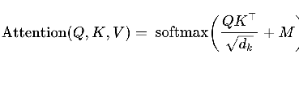
Le facteur
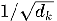
stabilise la variance des
logits avant le softmax, la longueur du chemin de transmission du signal
entre deux positions quelconques de la séquence se réduit à , et le parallélisme complet sur tous les
tokens à l'étape d'entraînement
s'accorde idéalement aux produits tensoriels des GPU, au prix d'une
complexité quadratique .
La même année 2017 parurent cinq autres travaux qui façonnèrent l'aspect
des systèmes multimodaux et parcimonieux modernes. Noam Shazeer et ses
coauteurs présentèrent à ICLR le Sparsely-Gated
Mixture-of-Experts (n° 261)184, qui porta le modèle de langage
à 137 milliards de paramètres grâce à un routage parcimonieux avec une pénalité auxiliaire d'équilibrage
de la charge des experts. Aäron van den Oord, Oriol Vinyals et Koray
Kavukcuoglu créèrent VQ-VAE (n° 262), qui introduisit
la quantification vectorielle de l'espace latent dans un dictionnaire de
codes (codebook) discret, avec une estimation de gradient de bout en
bout par Straight-Through Estimator — mécanisme de base de tous les
codecs audio neuronaux modernes. Yuxuan Wang et al.
(Tacotron, n° 263) et Jonathan Shen et al.
(Tacotron 2, n° 264) construisirent une synthèse vocale
de bout en bout « texte
mel-spectrogramme vocodeur neuronal ».
En optimisation, Ilya Loshchilov et Frank Hutter dissocièrent la
décroissance des poids du second moment adaptatif dans
AdamW (, n° 265), John
Schulman et al. créèrent le gradient de politique à substitut écrêté
PPO (n° 266)158, et Martin Arjovsky, Soumith Chintala
et Léon Bottou stabilisèrent les réseaux antagonistes par la métrique de
Wasserstein WGAN (n° 267). L'arsenal architectural
s'enrichit des convolutions séparables en profondeur
MobileNets de Howard et al. (n° 268), de l'attention
par canaux SENet de Hu et al. (n° 269), de l'activation
Swish / SiLU de
Ramachandran et al. (n° 270) et de l'attention sur graphes
GAT de Veličković et al. (n° 271).
2018
Domaines : Encodeur Attention/LLM Boucles TTS
Optimisation
En 2018, le préentraînement des transformeurs sur de grands corpus non
annotés se scinda en deux branches complémentaires. À la suite des
représentations contextuelles de BiLSTM ELMo de Matthew
Peters et al. (n° 272), Alec Radford et ses coauteurs chez OpenAI
présentèrent le décodeur causal autorégressif GPT-1 (n°
273), et Jacob Devlin, Ming-Wei Chang, Kenton Lee et Kristina Toutanova
chez Google créèrent l'encodeur bidirectionnel profond
BERT (n° 274)186, entraîné à restituer 15 % de tokens
aléatoirement masqués (Masked Language Modeling, MLM) à
partir du contexte complet gauche et droit.
Simultanément, Mostafa Dehghani et ses coauteurs introduisirent
l'Universal Transformer (n° 275)187 — le premier
transformeur bouclé à poids partagés en profondeur et à arrêt ACT par
token, démontrant son universalité computationnelle à profondeur
variable et posant la base directe des modèles modernes Huginn et Ouro.
Ricky Chen, Yulia Rubanova, Jesse Bettencourt et David Duvenaud
passèrent à la limite continue du réseau résiduel dans Neural ODE, avec un
entraînement par la méthode des équations adjointes en de mémoire en profondeur (n° 276)190. La
même année, Aäron van den Oord, Yazhe Li et Oriol Vinyals formulèrent la
fonctionnelle contrastive InfoNCE dans le cadre de
CPC (n° 277)191 ; Kingma et Dhariwal créèrent le
générateur inversible Glow (n° 278), adapté par Ryan
Prenger et al. en un vocodeur vocal rapide à flot,
WaveGlow (n° 279) ; Yuxin Wu et Kaiming He
introduisirent GroupNorm (n° 280) ; en optimisation
apparurent Adafactor de rang faible de Shazeer et Stern
(n° 281)192 et le préconditionneur matriciel de courbure
Shampoo de Gupta, Koren et Singer (n° 282)160 ; Arthur
Jacot et al. décrivirent le régime du noyau tangent neuronal
(NTK) (n° 283) ; et Taku Kudo et John Richardson publièrent le
tokeniseur SentencePiece (n° 284)73.
2019
Domaines : Attention/LLM Boucles TTS Diffusion
Optimisation
En 2019 prit forme l'ossature d'ingénierie du décodeur de LLM moderne et
de l'infrastructure de son entraînement distribué. Alec Radford et ses
coauteurs, avec GPT-2 (1.5B paramètres, n° 285)1,
établirent le schéma Pre-LN et l'exécution zero-shot de
tâches par continuation linguistique. Biao Zhang et Rico Sennrich
présentèrent RMSNorm (n° 286)28, qui abandonne le
centrage de la moyenne de LayerNorm pour ne conserver que la
normalisation invariante d'échelle par l'amplitude quadratique moyenne
:
ce qui accéléra la normalisation sur GPU et devint la norme de
pratiquement toutes les architectures ouvertes de 2023–2026196. En
novembre, Noam Shazeer publia la Multi-Query Attention
(MQA) (n° 287)49, en soulignant la limitation du décodage
autorégressif par la bande passante de la mémoire HBM lors de la lecture
du cache KV et en proposant des projections communes pour toutes les têtes de requêtes.
Dans les modèles bouclés et à contexte long, Shaojie Bai, Zico Kolter et
Vladlen Koltun créèrent les Deep Equilibrium Models
(DEQ) (n° 288), qui trouvent le point fixe de la boucle par un solveur numérique de racines et le
différencient analytiquement via le théorème des fonctions implicites en
de mémoire ; Zhenzhong Lan et al.
appliquèrent le partage de poids de bout en bout entre couches dans
ALBERT (n° 289)189 ; Colin Raffel et al. introduisirent
le biais d'attention relatif tabulaire dans T5 (n°
290)72 ; et Zihang Dai et al. combinèrent la récurrence par segments
avec des positions relatives dans Transformer-XL (n°
291)190. En synthèse de la parole, Yi Ren et al. créèrent le
transformeur non autorégressif FastSpeech avec un
régulateur explicite de durée des phonèmes (Length
Regulator, n° 292), accélérant de deux ordres de grandeur la
génération de mel-spectrogrammes sans perte de robustesse. Yang Song et
Stefano Ermon firent renaître la modélisation générative par score sur
une grille multi-échelle de bruits dans NCSN (n° 293).
L'année s'acheva avec la mise à l'échelle composée des CNN
EfficientNet de Tan et Le (n° 294)178, l'encodeur audio
auto-supervisé wav2vec de Schneider et al. (n° 295), le
parallélisme tensoriel intracouche Megatron-LM de
NVIDIA (n° 296)198, le partitionnement des états de l'optimiseur et des
poids ZeRO de Microsoft DeepSpeed (n° 297)73 et
l'article de référence d'Adam Paszke et al. sur PyTorch
(n° 298).
2020
Domaines : Attention/LLM Diffusion Encodeur STT TTS
Boucles/SSM
En 2020, les modèles de langage, la génération par diffusion, la vision
par ordinateur et les technologies de la parole se sont transformés
simultanément. Jared Kaplan et ses coauteurs ont établi les lois
d'échelle (Scaling Laws) en loi de puissance de la perte de
modélisation du langage en fonction du nombre de paramètres, des données
et du budget de FLOPs (n° 299)4, mises
en œuvre par Tom Brown et l'équipe d'OpenAI dans GPT-3,
à 175 milliards de paramètres, avec un apprentissage en contexte
émergent (n° 300). Noam Shazeer a introduit la famille de blocs
entièrement connectés à portes SwiGLU
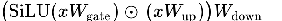
(n° 301)199, qui a remplacé le MLP
classique à deux couches dans les LLM modernes, tandis qu'Angelos
Katharopoulos et al. ont factorisé l'attention au moyen d'un noyau de
caractéristiques positif dans
l'attention linéaire (Linear Attention) (n° 302)25, en
montrant la dualité entre le transformeur linéaire et un RNN doté d'une
mémoire matricielle de complexité .
Dans les modèles génératifs, Jonathan Ho, Ajay Jain et Pieter Abbeel ont
publié DDPM (n° 303)37, qui ramène l'apprentissage
variationnel de la chaîne de Markov inverse à la prédiction du bruit
gaussien ajouté ; Jiaming Song,
Chenlin Meng et Stefano Ermon ont construit les trajectoires
déterministes non markoviennes d'échantillonnage accéléré
DDIM (n° 304)5 ; et Yang Song et al. ont unifié la
diffusion et l'estimation du score en équations différentielles
stochastiques continues Score SDE et en un flot de
probabilité déterministe, la Probability Flow ODE (n°
305)5. En vision par ordinateur, Alexey Dosovitskiy, Lucas Beyer et al.
ont présenté le transformeur pur sur patchs ViT
(découpage de l'image en patchs 16×16 sans convolutions, 88.55 % de
Top-1 sur ImageNet pour ViT-H/14, n° 306)73, en parallèle de la percée
de l'apprentissage auto-supervisé contrastif SimCLR (n°
311)202, de MoCo (n° 312) et de BYOL,
sans exemples négatifs (n° 313).
En traitement audio sont apparus trois composants de base de la pile
vocale moderne : l'hybride convolution-transformeur
Conformer d'Anmol Gulati et al. (Macaron-FFN + MHSA +
DepthwiseConv, qui atteint 1.9 % / 3.9 % de WER sur
LibriSpeech test-clean / test-other, n° 307)203, l'encodeur quantifiant
auto-supervisé de forme d'onde brute wav2vec 2.0
d'Alexei Baevski et al. (n° 308)191 et le vocodeur génératif adversarial
multi-période HiFi-GAN de Jungil Kong et al. (n°
309)206. Enfin, Albert Gu, Tri Dao et leurs coauteurs ont établi les
opérateurs de projection polynomiale orthogonale de l'historique continu
d'un signal HiPPO (n° 310)62 (base théorique de S4 et
de Mamba), Patrick Lewis et al. ont créé l'architecture
RAG (n° 314), et Dmitry Lepikhin et al. ont étendu le
MoE à 600 Md de paramètres dans le système GShard (n°
315)27.
2021
Domaines : Attention/LLM MoE Encodeur Boucles/SSM
TTS Diffusion Optimisation
En 2021 se sont constitués les standards de l'encodage positionnel
relatif, de l'adaptation de bas rang, des espaces d'états structurés et
de la diffusion latente. Jianlin Su et ses coauteurs ont introduit dans
RoFormer l'encodage positionnel rotatif
(RoPE) (n° 316)72, qui multiplie les paires de coordonnées des
requêtes et des clés par des matrices de rotation orthogonales dans le
plan complexe, avec un spectre de fréquences géométrique :
Ofir Press et al. ont proposé les pénalités positionnelles linéaires
d'attention ALiBi (n° 317) ; William Fedus, Barret Zoph
et Noam Shazeer ont simplifié le MoE jusqu'à un routage
Top-1 dans le Switch Transformer de
1.6 billion de paramètres (n° 318) ; et Edward Hu et al. ont créé la
méthode LoRA (n° 319)210, qui gèle les matrices
préentraînées et n'entraîne qu'un
terme additif de bas rang de rang , sans latence supplémentaire à
l'inférence.
Parmi les encodeurs multimodaux et visuels, Alec Radford et al. ont
aligné les espaces d'images et de textes sur 400 millions de paires dans
CLIP (n° 320)212, Kaiming He et al. ont créé
l'autoencodeur asymétrique à masquage de patchs MAE
(masquage de 75 % des patchs, n° 321), Mathilde Caron et al. ont
découvert l'autodistillation sans étiquettes des transformeurs visuels
DINO (n° 322)213, et Ze Liu et al. ont introduit les
fenêtres décalées hiérarchiques dans le Swin
Transformer (n° 323). Dans la modélisation des longues
séquences, Albert Gu, Karan Goel et Christopher Ré ont publié S4
(Structured State Spaces) (n° 324)62 : en décomposant la
matrice HiPPO en la somme d'une matrice normale et d'une matrice de bas
rang (NPLR : ), ils
ont ramené le calcul du noyau de convolution de longueur à un noyau de Cauchy et à une FFT en
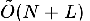
, résolvant pour la première fois la tâche
Path-X de longueur 16,384 de Long Range Arena (score moyen de 86.09)216
; en parallèle, Imanol Schlag, Kazuki Irie et Jürgen Schmidhuber ont
introduit à ICML 2021 la règle delta de réécriture dans les
transformeurs linéaires (Fast Weight Programmers, n°
325)157, source théorique directe de DeltaNet.
Dans les domaines de la parole et de la génération, Jaehyeon Kim, Jungil
Kong et Juhee Son ont réuni inférence variationnelle, flots normalisants
et synthèse adversariale de la forme d'onde dans VITS
(n° 326)217 ; Neil Zeghidour et al. ont créé le premier codec audio
neuronal de bout en bout à quantification vectorielle résiduelle
(RVQ), SoundStream (n° 327)47 ; Wei-Ning Hsu
et al. ont présenté l'encodeur de parole à masquage
HuBERT (n° 328)191 ; Prafulla Dhariwal et Alex Nichol
ont démontré la supériorité de la diffusion sur les GAN pour la qualité
d'image dans ADM (n° 329)219 ; Jacob Austin et al. ont
formalisé la diffusion discrète à jeton absorbant [MASK] dans
D3PM (n° 330)35 ; et en décembre, Robin Rombach,
Andreas Blattmann, Dominik Lorenz, Patrick Esser et Björn Ommer ont
transposé la diffusion dans l'espace comprimé d'un autoencodeur
perceptuel, avec attention croisée sur le texte, dans les Latent
Diffusion Models (LDM / Stable Diffusion) (n° 331)179.
2022
Domaines : Attention/LLM Optimisation Diffusion STT
TTS
En 2022, les algorithmes de mémoire conscients du matériel, les lois
d'échelle optimales en calcul et les flots d'EDO rectilignes ont changé
l'économie des grands modèles. Tri Dao, Daniel Fu, Stefano Ermon, Atri
Rudra et Christopher Ré ont publié FlashAttention (n°
332)199 : en découpant en blocs les matrices dans la mémoire rapide intégrée à la puce
du GPU, la SRAM, et en appliquant le redimensionnement
exact par blocs de l'online-softmax (qui remonte à
Milakov et Gimelshein, n° 333) :
les auteurs ont calculé une attention mathématiquement exacte sans
écrire la matrice dans la mémoire
globale HBM, ramenant la consommation de mémoire à 223. Jordan Hoffmann et al., dans
Chinchilla (n° 334)224, ont montré qu'à budget de FLOPs
fixé, le régime d'entraînement optimal exige une mise à l'échelle
proportionnelle du nombre de paramètres et du nombre de jetons
d'entraînement (
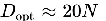
), tandis que Greg
Yang, Edward Hu et al. ont établi la paramétrisation P pour le transfert
zero-shot des hyperparamètres des petits modèles vers des entraînements
gigantesques (n° 335).
Dans la modélisation générative, Jonathan Ho et Tim Salimans ont
introduit le guidage sans classifieur (CFG) (n° 336),
Tero Karras et al. ont systématisé le préconditionnement du bruit et les
échantillonneurs du second ordre dans EDM (n° 337)37,
et à l'automne 2022, Xingchao Liu, Chengyue Gong et Qiang Liu
(Rectified Flow, n° 338), Yaron Lipman, Ricky Chen et
al. (Flow Matching, n° 339) ainsi que Michael Albergo
avec Eric Vanden-Eijnden (Stochastic Interpolants, n°
340) ont fait passer la génération à l'apprentissage de champs
vectoriels de vitesse rectilignes de l'EDO le long de l'interpolation linéaire , avec la procédure de redressement des
trajectoires Reflow5. En décembre, William Peebles et
Saining Xie ont remplacé le U-Net de la diffusion latente par un
transformeur extensible à normalisation adaptative
adaLN-Zero, le Diffusion Transformer
(DiT) (FID de 2.27 sur ImageNet 256×256, n° 341)219. En audio
et en post-entraînement sont apparus le transformeur ASR multilingue
Whisper d'Alec Radford et al., entraîné sur 680,000
heures de données faiblement annotées (n° 342)229, le codec RVQ ouvert
24 kHz EnCodec d'Alexandre Défossez et al. (n° 343)231,
l'alignement en trois étapes sur les préférences humaines
InstructGPT (RLHF) de Long Ouyang et al. (n° 344), le
prompting de chaînes de raisonnement Chain-of-Thought
de Jason Wei et al. (n° 345) et les optimiseurs 8 bits à quantification
par blocs de Tim Dettmers et al. (n° 346)169.
2023
Domaines : Attention/LLM MoE Boucles/SSM Encodeur
Vidéo STT TTS STS Optimisation
En 2023, l'écosystème ouvert des LLM a reçu un standard de décodage
efficace, et les modèles linéaires récurrents ont pour la première fois
défié les transformeurs sur les tâches de langage. Joshua Ainslie et al.
ont introduit l'attention à requêtes groupées (Grouped-Query
Attention, GQA) (n° 347)39, qui partage groupes de clés-valeurs entre têtes de requêtes (adoptée dans
Llama 2 70B de Touvron et al., n° 348194) ; Woosuk Kwon
et al. ont éliminé la fragmentation de la mémoire vidéo du cache KV
grâce au mécanisme de pagination PagedAttention dans le
moteur vLLM (n° 349)232 ; Tri Dao a optimisé le
parallélisme de warps dans FlashAttention-2 (n° 350)198
; Hao Liu, Matei Zaharia et Pieter Abbeel ont créé l'attention répartie
en anneau sur des accélérateurs Ring Attention pour les
contextes de plusieurs millions de jetons (n° 351)132 ; l'équipe de
Mistral AI a publié le mélange d'experts épars ouvert Mixtral
8x7B (Top-2 parmi 8, n° 352)234 ; et Rafael Rafailov et al. ont
établi une forme close d'alignement de la politique sans modèle de
récompense, la Direct Preference Optimization (DPO) (n°
353)158 :
Parallèlement s'est déployée l'offensive des architectures
sous-quadratiques à mémoire d'inférence constante : RWKV-4 de Bo Peng et al.
(n° 354)236, le réseau de rétention multi-échelle
RetNet de Yutao Sun et al. (n° 355)49 et, en décembre,
Mamba (S6) d'Albert Gu et Tri Dao (n° 356)25. En
faisant des paramètres de l'espace d'états des fonctions du jeton d'entrée courant
(Selective SSM) et en implémentant un scan associatif
parallèle conscient du matériel dans la SRAM, Mamba a résolu le problème
du filtrage du contexte dépendant du contenu à complexité linéaire .
Dans les domaines visuel, de la diffusion de texte et de la parole sont
apparus : le prédicteur latent non génératif d'images
I-JEPA d'Assran, LeCun et al. (n° 357), l'encodeur
contrastif à sigmoïde par paires sans softmax SigLIP de
Zhai et al. (n° 358)212, le modèle fondation visuel
DINOv2 d'Oquab et al. (n° 359)176, le générateur vidéo
Stable Video Diffusion de Blattmann et al. (n° 360), la
diffusion discrète à estimation de rapports de vraisemblance
SEDD de Lou, Meng et Ermon (n° 361)57, le premier
modèle de langage à codec pour la synthèse vocale zero-shot à partir
d'un échantillon de 3 secondes, VALL-E de Wang et al.
(n° 362)218, le codec audio amélioré DAC de Kumar et
al. (n° 363)55, le modèle de parole conversationnel
SpeechGPT de Zhang et al. (n° 364)240, l'encodeur à
trame de 80 ms accéléré de 2.8×, FastConformer, de
Rekesh et al. (n° 365)171, le transducteur sautant les trames vides
Token-and-Duration Transducer (TDT) de Xu, Majumdar et
Ginsburg (n° 366)79, l'adaptation 4 bits QLoRA de
Dettmers et al. (n° 367), l'extension de la fenêtre de RoPE
YaRN de Peng et al. (n° 368)30 et le manuel de Simon
Prince « Understanding Deep Learning » (MIT Press, n°
369)8.
Attention
latente MLA, équilibrage du MoE sans pénalité et préentraînement
quantifié
En 2024, une série de travaux du laboratoire DeepSeek-AI a révisé
l'architecture de l'attention et du routage des experts. Dans
DeepSeekMoE (arXiv:2401.06066, n° 370)29, les experts
ont été fragmentés en petits sous-réseaux spécialisés, combinés à des
experts partagés isolés et toujours actifs. En mai,
DeepSeek-V2 (arXiv:2405.04434, 236B de paramètres au
total / 21B actifs, n° 371)50 a introduit le mécanisme
Multi-Head Latent Attention (MLA) :
Grâce à l'absorption des matrices de décompression dans les projections de requêtes et de
sortie au moment de l'inférence, seul le vecteur comprimé de
éléments par couche est stocké en mémoire, au lieu de 32,768 pour un MHA
à 128 têtes : une réduction du cache KV de 98.24 % par couche (et de
93.3 % au niveau de l'ensemble du modèle V2 par rapport à DeepSeek 67B
dense)50. En décembre, DeepSeek-V3 (arXiv:2412.19437,
671B de paramètres au total / 37B actifs, 14.8T de jetons, n° 372)29 a
réuni l'équilibrage de charge des experts sans perte
auxiliaire, par un biais dynamique
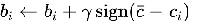
dans la sélection Top- (prolongeant le Loss-Free Balancing de Wang
et al., n° 37327), le module en cascade Multi-Token Prediction
(MTP) (fondé plus tôt, en avril, par Fabian Gloeckle et al. de
Meta, arXiv:2404.19737, n° 37464), le pipeline de recouvrement des
communications DualPipe et un entraînement stable en
précision FP8 en 2.788 millions d'heures-GPU H800
(environ $5.576M au tarif de référence de $2/h, hors exécutions de
recherche préliminaires et ablations ; MMLU 88.5 %, MATH-500 90.2 %)29.
Dès février, Zhihong Shao et al., dans DeepSeekMath
(arXiv:2402.03300, n° 375)53, avaient présenté l'algorithme
d'apprentissage par renforcement sans critique GRPO.
Parallèlement, Shuming Ma et al. ont montré la viabilité des poids
ternaires dans BitNet
b1.58 (arXiv:2402.17764, n° 376)51, tandis que la lignée
ouverte des transformeurs denses était conduite par Llama 3.1
405B (n° 377)246 et Qwen2.5 (n° 378)247.
Dualité
des SSM, Gated DeltaNet, TTT et optimiseurs de seconde
génération
Sur l'axe des séquences récurrentes, Tri Dao et Albert Gu ont
démontré dans Mamba-2 (arXiv:2405.21060, n° 379)32 une
dualité structurelle rigoureuse (SSD) entre les SSM
sélectifs à transition scalaire et
l'attention linéaire semi-séparable ,
ce qui a ramené l'entraînement des SSM à des blocs matriciels sur les
Tensor Cores. Maximilian Beck et Sepp Hochreiter ont étendu le LSTM à
portes exponentielles et à mémoire matricielle de covariance
mLSTM dans xLSTM (arXiv:2405.04517, n°
380)183 ; Songlin Yang et al. ont parallélisé le transformeur linéaire à
règle delta grâce à la représentation par blocs (chunks) WY de
Householder (DeltaNet, n° 381248) puis, en décembre,
avec Jan Kautz et Ali Hatamizadeh, ont combiné la règle delta avec
l'amortissement adaptatif de Mamba-2 dans Gated
DeltaNet (arXiv:2412.06464, n° 382)157 :
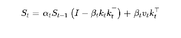
La même année sont apparus les RWKV-5/6 (Eagle &
Finch) à récurrence matricielle de Bo Peng et al. (n° 383)249,
l'hybride Mamba–Transformeur–MoE Jamba d'Opher Lieber
et al. (n° 384)184, les flux résiduels multibandes
Hyper-Connections (HC) de Defa Zhu et al.
(arXiv:2409.19606, n° 385)61 et les couches Test-Time Training
(TTT-Linear / TTT-MLP) de Yu Sun, Karan Dalal et al.
(arXiv:2407.04620, n° 386)44, qui ont transformé l'état caché lui-même
en un perceptron à deux couches entraîné sur le contexte de test. En
optimisation matérielle et numérique ont paru
FlashAttention-3, asynchrone, pour les puces Hopper
H100 (740 TFLOPs/s en FP16, n° 387)252, le préconditionneur
SOAP de Nikhil Vyas, Sham Kakade et al.
(arXiv:2409.11321, exécution d'AdamW dans la base propre des matrices de
Shampoo, avec une réduction de plus de 35 % du temps d'entraînement à
grands lots, n° 388)168 et l'impulsion matricielle orthogonalisante
Muon de Keller Jordan (n° 389)65.
DiT
multimodal, VAE vidéo, REPA et dialogue en duplex intégral
Moshi
En génération d'images et de vidéos, Patrick Esser et al. dans
Stable Diffusion 3 (arXiv:2403.03206, n° 390)174 et
l'équipe de Black Forest Labs dans FLUX.1 (12B de
paramètres, n° 391)174 ont consacré l'architecture à double flux
MMDiT avec Rectified Flow. Aux modèles vidéo
convolutifs ont succédé des DiT 3D spatio-temporels au-dessus de VAE 3D
causaux (compression 4×8×8) : CogVideoX de Zhuoyi Yang
et al. (n° 392)255, Mochi 1 (n° 393)254,
HunyuanVideo de 13 milliards de paramètres, de Weijie
Kong et al., avec encodage des prompts par un MLLM et RoPE 3D
(arXiv:2412.03603, n° 394)256, et l'ultra-rapide
LTX-Video de Lightricks, à compression Video-VAE 1:192
(arXiv:2501.00103, n° 395)258. Sihyun Yu et al. ont accéléré de plus de
17.5× la convergence des transformeurs de diffusion par
la méthode d'alignement des patchs latents sur les caractéristiques de
DINOv2 (REPA, arXiv:2410.06940, FID de 1.42 sur
ImageNet 256×256, n° 396)36 ; Subham Sahoo et al. ont établi la limite
continue de la diffusion masquée de texte dans MDLM
(arXiv:2406.07524, n° 397)222 ; Adrien Bardes et al. ont présenté
l'encodeur vidéo à prédiction de caractéristiques
V-JEPA (arXiv:2404.08471, n° 398)60 ; et Benjamin
Warner et al. ont porté les encodeurs bidirectionnels texte-code à une
fenêtre de 8,192 jetons dans ModernBERT
(arXiv:2412.13663, alternance d'attention globale et glissante 1:2,
RoPE, GeGLU, unpadding, n° 399)186.
Dans l'interaction vocale, Alexandre Défossez et al. du laboratoire
Kyutai ont publié Moshi et le codec neuronal en flux
continu Mimi (arXiv:2410.00037, n° 400)26, premier LLM
vocal ouvert en duplex intégral, avec une latence théorique de
160 ms (200 ms en pratique, contre une pause moyenne
d'environ 230 ms dans la parole humaine). Le codec Mimi comprime l'onde
de 24 kHz à une fréquence de 12.5 Hz (pas de 80 ms) en
8 codebooks RVQ de 2,048 entrées (1.1 kbit/s), avec
distillation de la sémantique de WavLM dans le premier codebook, tandis
qu'une hiérarchie composée d'un Temporal Transformer de 7B et d'un petit
Depth Transformer prédit en parallèle le « monologue intérieur » (Inner
Monologue) textuel et deux flux audio, sans découper la conversation en
tours de parole26. La pile de 2024 a été complétée par l'encodeur non
autorégressif SenseVoice (15× plus rapide que
Whisper-Large) et le synthétiseur CosyVoice
(FunAudioLLM, n° 401)263, par F5-TTS en flux continu
(n° 402)264, par Fish-Speech à double cascade (n°
403)265, ainsi que par les nouveaux manuels de référence de Christopher
et Hugh Bishop « Deep Learning: Foundations and Concepts »
(Springer, n° 404)266 et de Sebastian Raschka « Build a Large
Language Model (From Scratch) » (Manning, n° 405)267.
RL
de raisonnement vérifiable, attention éparse, mHC et modèles à mille
milliards de paramètres sur Muon
En janvier 2025, la publication de DeepSeek-R1
(arXiv:2501.12948, parue en septembre 2025 dans la revue
Nature, n° 406)50 a montré, avec l'expérience
DeepSeek-R1-Zero, que la simple mise à l'échelle de
l'apprentissage par renforcement GRPO sur des règles
vérifiables, sans SFT initial, fait spontanément émerger de longues
chaînes d'auto-vérification et de réflexion, faisant passer la précision
sur AIME 2024 de 15.6 % à 71.0 %, tandis que
DeepSeek-R1, complet et multi-étapes, a atteint
79.8 % de Pass@1 sur AIME 2024 et 97.3 % sur
MATH-500, avec une distillation réussie du raisonnement dans
des modèles denses de 1.5B à 70B269. En février, Jingyang Yuan et al.
ont présenté la Native Sparse Attention (NSA)
(arXiv:2502.11089, Best Paper ACL 2025, n° 407)50, qui répartit
l'attention en trois branches (comprimée, sélective et à fenêtre
locale), avec une accélération du décodage allant jusqu'à 11.6×76. En
décembre ont paru DeepSeek-V3.2 (arXiv:2512.02556, n°
408)10, qui a intégré au-dessus de MLA le mécanisme DeepSeek
Sparse Attention (DSA), doté d'un indexeur rapide (lightning
indexer) et d'une sélection des top-
jetons de complexité
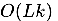
(la variante à
budget élevé V3.2-Speciale a obtenu des résultats de niveau or à l'IMO
2025 et à l'IOI 2025 selon le rapport des auteurs)10, et le travail de
Zhenda Xie, Shengding Hu et al. sur les Manifold-Constrained
Hyper-Connections (mHC) (arXiv:2512.24880, n° 409)2, qui a
projeté les matrices de mélange des bandes du flux résiduel sur le
polytope de Birkhoff des matrices doublement stochastiques par
l'algorithme de Sinkhorn—Knopp (garantie de et seulement 6.7 % de surcoût en temps pour
)2.
Parallèlement, l'équipe de Moonshot AI a démontré le passage à l'échelle
de l'optimiseur matriciel Muon (arXiv:2502.16982, n°
410)65 et, en juillet, a entraîné sur 15.5 billions de jetons, sans le
moindre pic de perte, le modèle phare agentique à mille milliards de
paramètres Kimi K2 (arXiv:2507.20534, 1.04T de
paramètres au total / 32.6B actifs, 8 experts sur 384 + 1 partagé, n°
411), grâce à l'association MuonClip (itérations de
Newton—Schulz + limitation du logit d'attention maximal
QK-Clip)66, qu'elle a complétée en octobre par
l'architecture hybride Kimi Linear, à amortissement
delta par canal KDA (arXiv:2510.26692, jusqu'à 6×
d'accélération du décodage sur un contexte de 1M, n° 412)278. Le front
ouvert a été élargi par la famille à raisonnement contrôlable
Qwen3 (jusqu'à 235B-A22B sur 36T de jetons,
arXiv:2505.09388, n° 413)247, les modèles nativement multimodaux à
fusion précoce Llama 4 Scout (109B-A17B, contexte de 10
millions de jetons) et Llama 4 Maverick (400B-A17B, n°
414)280, le modèle agentique GLM-4.5 (355B-A32B,
arXiv:2508.06471, n° 415)282 et l'hybride Mamba-2 + GQA + MoE au format
NVFP4 NVIDIA Nemotron 3 Nano (31.6B-A3.2B, contexte de
1M, arXiv:2512.20848, n° 416)13.
Profondeur
récurrente, mémoire à l'inférence, LLM de diffusion et vidéo
MoE
En février 2025, Jonas Geiping, Tom Goldstein et al. ont mis à
l'échelle le raisonnement latent en profondeur dans le modèle
Huginn-0125 (3.5B de paramètres, 800B de jetons,
arXiv:2502.05171, n° 417)3 : le schéma en sandwich repasse un noyau de 4 couches, à
initialisation aléatoire et avec
réinjection de l'entrée , jusqu'à fois (132 couches effectives), même si des
études ultérieures par sondage (Lu et al., arXiv:2507.02199) ont signalé
l'ambiguïté d'une interprétation textuelle directe des itérations
cachées intermédiaires et une réserve de mémoire factuelle plus modeste
(MMLU 31.4 %) que celle de modèles entraînés sur 4T de jetons187. En
octobre, Rui-Jie Zhu et al. (ByteDance) ont entraîné sur 7.7T de jetons
les modèles bouclés de bout en bout à sortie adaptative
Ouro-1.4B et Ouro-2.6B (arXiv:2510.25741, n° 418)77,
dont le modèle 2.6B, à , a atteint 90.8
% sur MATH-500 et égalé des modèles denses jusqu'à 12B grâce à la
composition multi-étapes des connaissances, tandis que Bohong Wu et al.
ont levé la pénalité de latence séquentielle des boucles par
l'ordonnancement en pipeline Cross-Loop Parallelism
dans le Parallel Loop Transformer (PLT)
(arXiv:2510.24824, n° 419)33. Simultanément, Ali Behrouz et al. ont créé
la neuromémoire à long terme Titans, mise à jour à
l'inférence par gradient avec impulsion (arXiv:2501.00663, n° 420)288,
Tianyuan Zhang et al. ont étendu l'entraînement des poids rapides par
blocs jusqu'à 1M de jetons dans LaCT (arXiv:2505.23884,
n° 421)289, Maximilian Beck et Sepp Hochreiter ont publié xLSTM
7B (arXiv:2503.13427, n° 422)183, et Bo Peng et al.
RWKV-7 « Goose », à évolution dynamique de bas rang de
l'état (arXiv:2503.14456, n° 423)236.
En diffusion discrète de texte sont apparus LLaDA-8B
(et sa variante MoE 7B-A1B) de Shen Nie et al., entraîné de zéro avec
une perte ELBO pondérée par
(arXiv:2502.09992, n° 424)35, la famille commerciale Mercury
Coder d'Inception Labs, d'une vitesse de génération parallèle
de 1,109 jetons/s sur H100 (arXiv:2506.17298, n° 425)58
et Dream 7B de Jiacheng Ye et al. (arXiv:2508.15487, n°
426)294. En génération vidéo, l'équipe d'Alibaba a publié sous licence
Apache 2.0 les modèles Wan 2.1 (arXiv:2503.20314, n°
427) et Wan 2.2 (n° 428), première architecture de
diffusion vidéo à débruiteur MoE temporel à deux
experts (27B de paramètres au total / 14B actifs, bascule entre
l'expert de structure grossière et l'expert de détails fins selon un
seuil de SNR, sans hausse du coût par pas, plus le modèle compact
TI2V-5B à compression VAE 4×16×16 pour une seule RTX
4090)172. Sont également parus HunyuanVideo 1.5 (8.3B
de paramètres, 75 s de rendu sur RTX 4090 en mode step-distilled,
arXiv:2511.18870, n° 429)297, l'éditeur contextuel et générateur de 32
milliards de paramètres FLUX.1 Kontext / FLUX.2
(Mistral-3 24B + VAE à 128 canaux, n° 430)174, l'encodeur multilingue
SigLIP 2 (arXiv:2502.14786, 85.0 % zero-shot sur
ImageNet pour ViT-g/16, n° 431)239, le modèle vidéo de monde avec
planification robotique V-JEPA 2 (arXiv:2506.09985, n°
432)59 et l'encodeur visuel de 7 milliards de paramètres
DINOv3 avec le mécanisme de Gram
Anchoring, qui préserve les cartes denses de segmentation lors
d'un entraînement prolongé (arXiv:2508.10104, 55.9 mIoU sur ADE20k, n°
433)301.
Dans la pile audio, Alibaba a présenté les modèles omnimodaux
Qwen2.5-Omni (arXiv:2503.20215, n° 434) et
Qwen3-Omni (arXiv:2509.17765, architecture
Thinker–Talker MoE + encodeur AuT à
12.5 Hz sur 20 millions d'heures d'audio + décodeur causal instantané
Code2Wav, sans baisse du MMLU textuel, n° 435)303. Sont parus à leurs
côtés Step-Audio, de 130 milliards de paramètres
(arXiv:2502.11946, n° 436)306, LLaMA-Omni2 en flux
continu (arXiv:2505.02625, n° 437)308, le synthétiseur à quantification
FSQ CosyVoice 3 (arXiv:2505.17589, n° 438)46, les
modèles ouverts locaux Kokoro-82M,
Orpheus-3B et Chatterbox311, le
générateur de dialogues de 90 minutes à -VAE continu Microsoft
VibeVoice (arXiv:2508.19205, n° 439)173, les modèles de langage
audio continus de Kyutai (arXiv:2509.06926, n° 440)315, le LLM audio
Mistral Voxtral (arXiv:2507.13264, n° 441)316, les
ultra-rapides NVIDIA Canary-1B-v2 et
Parakeet-TDT-0.6B-v3 (arXiv:2509.14128, 3,332.7 RTFx, n°
442)229 et GigaAM-v3317.
Modèles
phares ultra-épars, attention en profondeur (AttnRes) et économie du
cache KV global
En novembre 2026, les architectures ouvertes (systématisées dans le
catalogue de Sebastian Raschka LLM Architecture Gallery, qui
compte 132 modèles, et dans sa monographie « Build a Reasoning Model
(From Scratch) », juin 2026, n° 445)1 sont passées à l'activation
ultra-éparse des poids (3–6 % par jeton) et à la compression hybride de
l'attention. Le modèle DeepSeek V4 Pro (version 0813
d'août 2026, licence MIT) a porté le MoE à 1.6 billion de
paramètres pour ~49B actifs par jeton (~3.06 %), avec une
fenêtre de 1M de jetons (entraînement sur >32T de jetons avec
l'optimiseur Muon) : l'association de la Compressed Sparse
Attention (CSA) et de la Heavily Compressed Attention
(HCA) a ramené le coût de calcul sur un contexte de 1M à 27 %
des FLOPs et la mémoire du cache KV à 10 % du niveau de V3.2 (d'après
les synthèses publiées et les documents de la publication, on rapporte
93–94 % sur LiveCodeBench, >90 % sur GPQA Diamond et 62.7 sur
DeepSWE)31.
À la suite de l'agent visuel Kimi K2.5
(arXiv:2602.02276), l'équipe de Moonshot AI a publié la méthode
Attention Residuals (AttnRes) (arXiv:2603.15031), qui
remplace l'accumulation uniforme du flux résiduel par une attention
softmax par blocs apprise le long de l'axe de profondeur des couches
précédentes, puis, en juillet 2026, a ouvert le plus grand modèle phare
de l'époque, Kimi K3, à 2.8 billions de paramètres
(arXiv:2607.24653, 104B de paramètres actifs — 16 experts routés sur 896
+ 2 partagés, fenêtre de 1M, point de contrôle natif MXFP4, n° 443)4.
Kimi K3 applique une alternance 3:1 de couches linéaires
KDA (avec un log-amortissement sigmoïde borné
inférieurement, qui tient dans la plage dynamique de BF16 sur les noyaux
matriciels denses des Tensor Cores) et de couches globales Gated
MLA sans aucun encodage positionnel (NoPE), ainsi que le
Normalized LatentMoE, avec une couche RMSNorm avant la
projection ascendante4. La série des grands MoE à attention éparse a été
complétée par GLM-5 (arXiv:2602.15763, 744B-A40B, MLA +
DSA + RL agentique asynchrone APRIL, 77.8 % sur SWE-bench Verified et
50.4 sur AA Index v4.0)321, Tencent Hy4 (770B-A49B,
Gated MLA + DSA avec IndexCache inter-couches et hyper-connexions à 4
bandes iHC)1 et Meta Muse Spark Open
(816B-A42B)1.
Au pôle des systèmes locaux compacts, Google Gemma 4
(arXiv:2607.02770, Apache 2.0, tailles E2B, E4B, 12B Unified, 26B-A4B
MoE et 31B Dense) a introduit d'emblée trois mécanismes architecturaux :
les tables d'embeddings par couche Per-Layer Embeddings
(PLE) dans les modèles de petite taille, la projection
entièrement sans encodeur (Encoder-Free) des segments audio
bruts de 40 ms et des patchs d'image directement dans le décodeur dans
le 12B Unified, et la réutilisation des clés comme valeurs () conjuguée à une rotation
partielle -RoPE () dans les couches d'attention
globales (rapport local/global de 5:1), ce qui a réduit de 37.5
% le cache KV global73. Malgré de bonnes notes aux tests de
mathématiques et de sciences (89.2 % à AIME 2026 et 84.3 % à GPQA
Diamond pour le 31B en mode Thinking), l'archive indépendante Artificial
Analysis v5.0.1 a relevé un retard du modèle 31B dans les scénarios
agentiques complexes à plusieurs étapes par rapport aux grands systèmes
à mille milliards de paramètres324.
Hybrides
3:1 (Qwen 3.8, Nemotron 3/3.5), Mamba-3, FlashAttention-4 et modèles de
diffusion bouclés
L'hybridation de la mémoire matricielle linéaire et de l'attention
complète rare s'est imposée dans Alibaba Qwen 3.8-27B
(août 2026, Apache 2.0, architecture VLM dense de 64 couches : 16 blocs
de 3 couches Gated DeltaNet et 1 couche Gated
Attention, en parallèle du modèle phare fermé Qwen 3.8-Max de
2.4T-A95B)11. Dans les 48 couches Gated DeltaNet sont stockées des
matrices d'état de taille fixe pour 48 têtes de valeurs
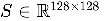
, occupant 72.0 MiB constants en
BF16 (144.0 MiB / 151.0 Mo en FP32) quelle que
soit la longueur de la séquence, tandis que les 16 couches Gated
Attention exigent quatre fois moins de mémoire de cache KV qu'un
transformeur homogène de 64 couches30. Dans la famille NVIDIA
Nemotron 3 Super (120B-A12B, arXiv:2604.12374),
Nemotron 3 Ultra (550B-A55B, 108 couches,
arXiv:2606.15007) et Nemotron 3.5 Super & Lightning
(arXiv:2610.38095), l'hybride Mamba-2 + GQA est associé au
LatentMoE () et à un
drafter MTP récursif pour le décodage spéculatif sur des contextes
allant jusqu'à 1M de jetons27.
Les noyaux de base des SSM et de l'attention ont eux-mêmes reçu une mise
à jour fondamentale. Aakash Lahoti, Tri Dao, Albert Gu et al. ont
présenté Mamba-3 (arXiv:2603.15569, ICLR 2026)32 : le
passage à la discrétisation exponentielle-trapézoïdale
de précision du second ordre a
supprimé le besoin d'une convolution 1D externe, les transitions
d'état à valeurs complexes (équivalentes à une rotation
RoPE dépendante de l'entrée) ont permis de suivre la
parité (Parity) avec une précision de 100 %, et la formulation
MIMO de rang a multiplié par 4
l'intensité arithmétique du décodage sans hausse de la latence, en
égalant l'état à l'ancien 329. Ali Hatamizadeh, Jeejin Choi et Jan
Kautz ont séparé les portes d'effacement et d'écriture dans
Gated DeltaNet-2 (arXiv:2605.22791)248, et le
laboratoire de Tri Dao a publié FlashAttention-4
(arXiv:2603.05451) pour la mise à l'échelle asymétrique des
accélérateurs NVIDIA Blackwell (B200/GB200) :
l'émulation polynomiale de l'exponentielle sur les blocs FMA et le
saut conditionnel du redimensionnement de
l'online-softmax pour ont
donné 1,600 TFLOPs/s (71 % du pic), et l'écriture du noyau en Python
avec CuTe-DSL a réduit le temps de compilation de 20 à
30 fois par rapport aux gabarits C++223. À l'intersection des boucles et
de la diffusion, Sanghyun Lee et al. ont créé les Looped
Diffusion Language Models (LoopMDM) (arXiv:2605.26106, NeurIPS
2026), en bouclant les couches initiales-intermédiaires d'un LM de
diffusion masquée, pour une économie allant jusqu'à 3.34× de
FLOPs d'entraînement188 (développé dans Looped
UDLMs, arXiv:2610.3006656) ; sont également parus l'étude de
saturation du codeur 7B LoopCoder-v2 (PLT-7B)
(arXiv:2606.18023)38, les Hyperloop Transformers
(arXiv:2604.21254)334, LoopFold (arXiv:2610.35556)194
et le modèle MoE bouclé ouvert Inkling 2 Mini (Thinking
Machines Lab, 26.4B-A3.4B, 3 passes des couches intermédiaires +
AttnRes)197.
Synthèse
audio-vidéo synchrone LTX-2.5 et agents vocaux en duplex intégral avec
outils
En vidéo générative, Lightricks a publié LTX-2
(arXiv:2601.03233, DiT asymétrique à deux flux : un flux vidéo de 14B
avec RoPE 3D et un flux audio de 5B avec RoPE 1D, reliés par une
attention croisée bidirectionnelle dans le temps)335 puis, en août 2026,
la LTX-2.5 de 22 milliards de paramètres (encodeur de
texte Gemma 4 12B, génération en une seule passe de vidéo synchrone
jusqu'à 4K et jusqu'à 20 s avec son stéréo 24 kHz, continuité
multi-plans des scènes et contrôle par IC-LoRA)258, tandis qu'en
génération d'images le transformeur découplé DDT-XL/2
de Wang et al. (CVPR 2026, arXiv:2504.05741) a abaissé le FID sur
ImageNet 256×256 à 1.26219. En parole en duplex
intégral, l'équipe de NVIDIA a présenté PersonaPlex 7B
(arXiv:2602.06053, prompt hybride de rôle et d'échantillon de voix ancré
dans le contexte au-dessus de l'architecture Moshi + Mimi : naturalité
DMOS de 3.90 ± 0.15 et similarité de clonage de voix
SSIM de 0.57)68 et NemotronLabs
VoiceChat (arXiv:2609.21967, premier modèle STS Full-Duplex
ouvert à appel d'outils natif (Tool Calling), transcription auxiliaire
RNN-T, 100 % d'interception lors des interruptions et 93 % de reprise de
la parole après les interjections de l'auditeur)69. La pile vocale en
flux continu a été complétée par Qwen3-TTS
(arXiv:2601.15621, branche causale à 12.5 Hz avec MTP à 16 codebooks et
latence du premier paquet d'environ 97–100 ms) et
Qwen-Audio-3.0-TTS (arXiv:2607.23938)54,
Qwen3.5-Omni (arXiv:2604.15804, alignement ARIA)342,
Fish Audio S2-Pro (arXiv:2603.08823, TTFA ~100 ms, RTF
0.195) et Drama 3 (arXiv:2610.18010)158, Kyutai
Pocket TTS (100M de paramètres, MIT), qui fonctionne 6× plus
vite que le temps réel sur deux cœurs CPU d'un ordinateur portable344,
Mistral Voxtral Realtime en flux continu
(arXiv:2602.11298, latence de 480 ms)345, GigaAM
Multilingual (arXiv:2607.10371, Interspeech 2026)346 et
Nemotron 3.5 Transcribe à deux branches (TDT +
diariseur Sortformer)348.
2027
Domaines : Attention/LLM Boucles/SSM Diffusion Vidéo
Optimisation
Le programme scientifique de 2027, tel que le fixent en
novembre 2026 les publications acceptées aux conférences d'hiver et de
printemps WACV 2027, AAAI / IAAI 2027,
WSDM 2027, DATE 2027 et le corpus
ouvert évalué par les pairs de 37,028 soumissions à ICLR
2027 sur OpenReview, se concentre sur l'unification théorique
des paradigmes génératifs et sur l'élimination des subtiles pathologies
numériques de phase des réseaux hybrides et bouclés15. Dans l'article
d'Amandeep Kumar, Nithin Nair et Vishal Patel accepté à WACV 2027, «
Scale-wise VAR is Secretly Discrete Diffusion » (n° 444)17, il est
rigoureusement démontré que les modèles autorégressifs visuels à
prédiction de l'échelle suivante (VAR) sont fonctionnellement
équivalents à une diffusion discrète masquée échelle par échelle dans un
espace latent multi-échelle. Les actes de WACV 2027 et d'AAAI/IAAI 2027
présentent également les transformeurs vidéo à masquage de segmentation
à long terme LVMT (Norouzi et al.)16, des schémas de
flots à un pas (arXiv:2608.09579), les décodeurs de diffusion
PixCell (arXiv:2611.01141), des biais structurels
d'attention (arXiv:2611.04657) et des architectures industrielles de
recherche d'information à autorité contrainte
(arXiv:2611.20398)19.
Dans le corpus évalué d'ICLR 2027 se dégagent trois mécanismes
fondamentaux de la génération suivante. Premièrement, l'analyse de la
compression du cache KV par blocs (« Periodic Weak Spots: Phase
Sensitivity from Chunked KV-Cache Compression ») a montré que, dans
les modèles de la classe DeepSeek-V4, la précision de récupération des
faits varie jusqu'à 40 points de pourcentage selon la
phase de la position du jeton par rapport aux frontières de la fenêtre
de compression, du fait de l'apparition de têtes spécialisées par
phase15. Deuxièmement, le travail sur la stabilité numérique de la passe
arrière de l'attention (OpenReview:LJvGaCWmFh) a établi que les
explosions tardives de gradients lors de l'entraînement avec
BF16 FlashAttention-3 sont dues à la violation, par
l'arrondi BF16, de la loi exacte de conservation de la somme des
gradients d'une ligne du softmax (erreur médiane du gradient des
requêtes de 219 %), et a proposé une correction du noyau arrière
ramenant l'erreur à 0.34 % / 0.37 % (niveau FP32) pour
un surcoût de seulement 4.7 % par pas352. Troisièmement ont été proposés
les Variable-Width (« Hourglass ») Transformers,
rétrécis au milieu, les Matryoshka Language Model
Suites imbriquées (économie de 36 % du calcul d'entraînement
pour la gamme de tailles) et la méthode SafeBridge pour
l'alignement de sûreté des modèles bouclés à toutes les profondeurs de
récursion, en réponse à la découverte que la réduction de moitié du
nombre de boucles à l'inférence dans Ouro et Huginn conserve 89 % de
précision sur GSM8K mais détruit le vecteur de refus, qui se forme
tardivement, ce qui accroît la vulnérabilité aux requêtes malveillantes
de 5.3 à 9.9 fois15.
Annexe
A. Tableaux récapitulatifs des architectures, des benchmarks, des
statistiques et des dépôts
Tableau
A.1. Matrice chronologique complète des architectures et mécanismes
(1958–2027, pas d'un an)
Année
Domaine / Étiquettes
Architecture / algorithme clé
Mécanisme mathématique de référence
Jalons, auteurs et numéro dans la
Bibliographie
1958
Fondements
Perceptron Mark I
Hyperplan , correction d'erreurs
Rosenblatt (n° 1), von Neumann (n° 2)
1959
Encodeur Fondements
Pandemonium ; TD-dames ; Champs réceptifs
de V1
Sélection parallèle ; différence temporelle de l'évaluation de
position
Scale-wise VAR = dLLM ; Analyse de phase
du KV de DeepSeek-V4 ; FA-bwd BF16 exact ; Hourglass LM ;
SafeBridge
Isomorphisme entre VAR et diffusion
masquée ; loi de conservation du gradient du softmax ; sûreté par
boucles
Kumar et al. (WACV'27, n° 444)17,
OpenReview ICLR'2715
Deux grandes évolutions systémiques des architectures de langage
ouvertes de 2024–2026 se situent dans le domaine de la gestion de la
mémoire des cartes graphiques : la compression radicale de l'état du
contexte (par le cache de bas rang de MLA et le remplacement de 75 % des
couches d'attention par une mémoire matricielle de taille constante en
fonction de la longueur, celle de Gated DeltaNet ou de KDA) et le
passage à une activation ultra-éparse des poids, où, pour un volume
total de connaissances de 0.7 à 2.8 billions de paramètres, seuls
3.1–10.0 % du réseau sont activés pour chaque jeton4.
La comparaison des volumes de mémoire cités explique l'économie pratique
de l'inférence agentique à long contexte : dans les modèles homogènes à
attention complète, la croissance linéaire du cache KV dépasse
rapidement la taille des poids du modèle eux-mêmes, ce qui oblige à
répartir l'inférence sur plusieurs nœuds uniquement pour stocker
l'historique du dialogue196. À l'inverse, l'architecture hybride 3:1
fige totalement la croissance de la mémoire dans 75 % des couches du
réseau (la laissant égale à 72 MiB en BF16, que la longueur du contexte
soit de 32K ou de 1M de jetons) et, combinée à 3–5 % d'experts actifs,
permet de servir des trajectoires à plusieurs étapes à un coût inférieur
d'un ordre de grandeur, à qualité égale30.
Tableau
A.2. Spécifications architecturales et benchmarks des LLM phares ouverts
et des hybrides (2024–2026)
Note sur l'attribution (au 25.11.2026) : Les métriques sont
données d'après les rapports techniques officiels et les fiches de
modèles des développeurs ; lorsque des mesures ou des synthèses
indépendantes existent (Epoch AI, Artificial Analysis, synthèses
techniques), la source est indiquée explicitement dans la cellule31. Un
tiret (—) signifie l'absence de publication comparable de la métrique
dans la source primaire.
La dynamique de la densité d'intelligence entre les générations de
2025 et de 2026 apparaît de façon particulièrement nette lorsqu'on
compare des problèmes scientifiques et olympiques complexes (GPQA
Diamond et AIME 2026) à l'efficacité paramétrique des modèles à
profondeur récurrente10.
Les données présentées révèlent une régularité importante : dans les
tâches de déduction séquentielle (AIME, MATH-500), le facteur décisif
n'est pas le nombre brut de paramètres uniques, mais la profondeur
effective de transformations non linéaires séquentielles, atteinte
soit explicitement par le mode de raisonnement en contexte (le mode
Thinking de Gemma 4 26B-A4B, avec 3.8B de paramètres actifs, porte AIME
2026 à 88.3 % contre 20.8 % pour Gemma 3 27B sans raisonnement), soit
implicitement, au sein de l'état caché, par passes récurrentes sur la pile de couches
partagée dans Ouro-2.6B286.
Tableau
A.3. Modèles de langage à profondeur récurrente (bouclés) et de
diffusion (2025–2026)
Modèle / Architecture
Paradigme et topologie de la
profondeur
Paramètres uniques / Jetons
d'entraînement
Principales métriques expérimentales et
accélérations
Huginn-0125
(arXiv:2502.05171)3
Boucle en sandwich avec injection par concaténation de
l'entrée et de , ()
3.5B / 800B de jetons (4,096 MI250X)
Avec l'augmentation des boucles : ARC-Easy 49.07 %69.91 %, HellaSwag 43.46 %65.21 %, GSM8K CoT 42.08 % ; partage zero-shot du KV sur 4
emplacements sans perte sur MT-Bench (5.86)284
Ouro-1.4B & Ouro-2.6B
(arXiv:2510.25741)286
Boucle sur la pile complète () avec porte de sortie anticipée apprenable
(ACT gate)
Pipeline Cross-Loop Parallelism (CLP) + KV
partagé de la première boucle + Gated SWA ()
1.7B actifs / 7B dense (18T de jetons de
code et de texte)
Supprime la pénalité de latence
séquentielle (+96 %~4 % de surcoût pour
) ; +5.0 points de précision sur 2
boucles, saturation diagnostiquée pour
en raison du décalage de phase de CLP33
Inkling 2 Mini (Thinking
Machines, nov. 2026)197
Sandwich de applications de 24 couches + AttnRes + MoE
(8/128)
26.4B au total / 3.4B uniques actifs (5.4B
d'activations)
Contexte de 1,048,576 jetons, Apache 2.0,
5 SWA locales (1024) + 1 GQA globale par bloc, cache KV de 192
KiB/jeton197
LLaDA-8B / LLaDA-MoE
(arXiv:2502.09992)35
Transformeur de diffusion masquée
bidirectionnel (MDM, ELBO pondéré par )
8B dense ; 7B-A1B MoE
Parité avec LLaMA-3 8B à FLOPs égaux ;
Instruct (démasquage par blocs) : GSM8K 78.6 %, MATH
42.2 %, CMMLU 69.9 % ; surmonte la reversal
curse57
Dream 7B
(arXiv:2508.15487)57
LLM de diffusion discrète initialisé à
partir de poids autorégressifs
7B dense
MATH 51.2 %, HumanEval
54.3 %, forte planification et remplissage
bidirectionnel de lacunes57
Mercury Coder Mini /
Small (arXiv:2506.17298)58
LLM de code de diffusion commercial à
génération parallèle de jetons
Échelle non divulguée (billions de
jetons)
Débit sur NVIDIA H100 standard :
1,109 jetons/s (Mini) et 737 jetons/s
(Small) d'après la mesure d'Artificial Analysis (jusqu'à 10× plus rapide
que les modèles AR)58
Boucle sélective sur les couches
initiales-intermédiaires à l'intérieur du débruiteur de diffusion
discrète
125M–170M (NeurIPS 2026)
Atteint le même NLL de validation avec
3.34× moins de FLOPs d'entraînement sur FineWeb-Edu ;
+8.5 points sur GSM8K ; la sortie adaptative économise jusqu'à 34.8 %
des boucles56
Tableau
A.4. Encodeurs visuels et modèles génératifs d'images et de vidéo
(2012–2026)
Autodistillation sur 1.7B d'images +
Gram Anchoring des cartes denses de patchs
De 21.6M (ViT-S/16) à 7B
(ViT-7B/16)
Sondage linéaire de caractéristiques
gelées : ImageNet-1K 88.0 %, segmentation ADE20k
55.9 mIoU (contre 49.5 pour DINOv2-g/14)301
ADMLDM-4DiT-XL/2SiT-XL/2 + REPADDT-XL/236
Évolution de la génération ImageNet
256×256 : U-Net pixel U-Net de VAE
DiT
alignement avec DINOv2 DiT
découplé
554M / 400M / 675M / 675M / 675M
FID-50K sur ImageNet 256×256 (avec CFG,
plus bas = meilleur) : 4.59 (ADM) 3.60 (LDM-4) 2.27 (DiT-XL/2) 2.06 (SiT-XL/2) 1.42 (+REPA, convergence
17.5× plus rapide) 1.26 (DDT-XL/2, 2025–2026)36
FLUX.1 (2024) FLUX.2 (nov. 2025,
BFL)174
Rectified Flow latent + MMDiT ; dans la 2e
version VLM Mistral-3 24B + VAE à 128 canaux
12B (FLUX.1) 32B (FLUX.2 [dev])
Génération unifiée et édition multi-images
jusqu'à 4 Mpx avec nombre de pas contrôlable et typographie
précise299
HunyuanVideo (déc. 2024)
& 1.5 (nov. 2025)257
DiT Dual-to-Single Stream + encodeur de
texte MLLM + Causal 3D-VAE + RoPE 3D
13B (v1.0, compression 4×8×8) /
8.3B (v1.5)
v1.0 : 66.5 % de qualité de mouvement en
test à l'aveugle (60–80 Go de VRAM) ; v1.5 : rendu en ~75 s sur
une seule RTX 4090 (step-distilled)297
Wan 2.1 (févr. 2025)
& Wan 2.2 (juil. 2025, Apache 2.0)172
DiT à Flow-Matching ; en 2.2 : MoE
temporel à 2 experts selon le SNR et VAE comprimé
27B-A14B MoE (4×8×8) et
TI2V-5B (4×16×16)
Leader des modèles ouverts en esthétique
(85.3 sur Wan-Bench 2.0) et sur VBVR (0.371 contre 0.273 pour
CogVideoX-1.5) ; le 5B rend du 720p@24fps sur une seule RTX 4090172
LTX-VideoLTX-2LTX-2.5 (août 2026,
Lightricks)259
Video-VAE ultra-comprimé (1:192) DiT audio-vidéo asymétrique à deux
flux avec attention croisée et RoPE 1D/3D
2B/13B
19B (14B V + 5B A) 22B (+Gemma 4 12B)
Génération synchrone de vidéo jusqu'à 4K
(jusqu'à 20 s en Fast) et de son stéréo 24 kHz (dialogues, foley,
synchronisation labiale) en une seule passe ; exécution à partir de
12–24 Go de VRAM en FP8297
Synchroniquement dans les domaines visuel et vocal, les modèles
génératifs se sont rapprochés en 2026 de deux limites physiques
fondamentales : la limite de précision de reconstruction de
l'autoencodeur latent lui-même (rFID = 1.20 pour le SD-VAE standard sur
ImageNet 256×256) et la durée moyenne de la pause naturelle entre les
répliques dans une conversation humaine en direct (230 ms selon des
mesures interlinguistiques)70.
Le fait que les débruiteurs atteignent un FID de 1.26 contre 1.20 pour
le SD-VAE lui-même explique pourquoi, dans la seconde moitié de 2025 et
en 2026, l'attention de la recherche est passée de la modification du
transformeur de diffusion lui-même à la reconception des espaces latents
des autoencodeurs, depuis le réglage de bout en bout du VAE avec REPA-E
jusqu'à l'espace à 128 canaux du FLUX.2-VAE et à
l'espace vidéo hautement comprimé du Wan2.2-VAE36. À
son tour, dans la pile vocale, le passage à une fréquence de trames très
basse de 12.5 Hz (pas de 80 ms dans Mimi, Qwen3-Omni et
Qwen3-TTS) a permis de ramener la génération du premier paquet sonore à
un ou deux pas du décodeur autorégressif, rendant la communication
vocale en direct avec interruptions indiscernable par son timing d'un
dialogue entre humains48.
Tableau
A.5. Caractéristiques et métriques récapitulatives de la pile vocale :
STT (ASR), TTS et STS en duplex intégral (2020–2026)
Système (Développeur, Année)
Classe et architecture
Fréquence des jetons / Codec
Métriques vérifiées de précision, de
vitesse et de latence
Parakeet-TDT-0.6B-v3 :
6.32 % de WER moyen à la vitesse de 3,332.7 RTFx (54×
plus rapide que les ASR à base de LLM) ; Canary-1B-v2 :
25 langues, 7.15 % de WER EN, 749 RTFx229
Transcription simultanée littérale et
formatée, horodatage des mots et diarisation de bout en bout des
locuteurs sur 65K jetons (BF16/FP8/NVFP4)348
CosyVoice 3 (Alibaba, mai
2025)46
TTS LLM AR de jetons vocaux + générateur
Flow-Matching + DiffRO RL
25 Hz monoflux
FSQ (MinMo)
Leader sur le benchmark de références « en
conditions réelles » CV3-Eval, bi-streaming bilatéral et clonage vocal
interlingue46
Qwen3-TTS (Alibaba, janv.
2026)341
TTS LLM à deux pistes (0.6B/1.7B, 5M h) +
MTP à 16 codebooks
12.5 Hz (16 RVQ) ou
25 Hz (DiT)
Premier paquet audio en ~97–100
ms sur le chemin causal à 12.5 Hz ; réduction de l'erreur
ZH→KO de 66 % par rapport à CosyVoice 3
(4.82 contre 14.4 de WER) ; >10 min de parole stable63
Kyutai Pocket TTS (janv.
2026, MIT)315
TTS LM audio continu avec bruitage des
latents (100M de paramètres)
Sortie 24 kHz sans GPU
Fonctionne à ~6× le temps réel sur
2 cœurs CPU (MacBook Air M4), latence du premier bloc ~200 ms,
clonage vocal, 6 langues344
Fish Audio S2-Pro (mars
2026)158
TTS Dual-AR séquentiel (Fast AR par
codebooks) + GRPO + SGLang
RVQ à 10 codebooks (base DAC)
80+ langues, TTFA ~100
ms, RTF 0.195 sur H200 (>3000 jetons/s),
victoire de 81.88 % sur EmergentTTS-Eval (91.61 % en
paralinguistique)55
Full-Duplex-Bench 1.0 : 100 %
d'interception lors des interruptions, qualité de réponse de
4.33/5 ; FDB 1.5 : 93 % de retour à la parole après les
interjections ; FDB 3.0 : 82.5 % de F1 sur le choix des
outils69
Tableau
A.6. Registre des principaux dépôts ouverts d'architectures et de noyaux
de réseaux de neurones (Open-Source Ecosystem)
Domaine
Dépôt (GitHub / Organisation)
Licence
Mécanismes implémentés et valeur
d'ingénierie
Catalogue d'architectures de
LLM
rasbt/llm-architecture-gallery197
Apache-2.0
Métadonnées models.yml, schémas et
calculateur de mémoire pour 132 architectures de LLM modernes (mis à
jour en novembre 2026)
Noyaux d'attention (Hopper /
Blackwell)
Dao-AILab/flash-attention223
BSD-3
FlashAttention-1/2/3 et
FlashAttention-4 en Python CuTe-DSL (online-softmax
conditionnel, pipelines asynchrones B200)
Codec Mimi,
Moshi et PersonaPlex en duplex
intégral, décodeurs FastConformer / TDT, modèle omni
Qwen3-Omni et synthèse CPU Pocket
TTS
Annexe
B. Listings de programmes de référence de tous les mécanismes
clés
Sont présentés ci-dessous douze modules autonomes en langage Python
(torch) implémentant les mécanismes mathématiques de référence des dix
domaines examinés dans les chapitres 1958–2027.
Listing
B.1. Perceptron (1958) et moteur de différentiation automatique inverse
(1970–1986)
import mathimport torchimport torch.nn as nnimport torch.nn.functional as Fclass RosenblattPerceptron:"""1958–1962 : perceptron linéaire de Rosenblatt avec la borne de convergence de Novikoff (R/gamma)^2."""def__init__(self, dim: int, lr: float=1.0):self.w = torch.zeros(dim)self.b = torch.zeros(1)self.lr = lrdef fit_step(self, x: torch.Tensor, y: float) ->bool: margin = y * (torch.dot(self.w, x) +self.b)if margin <=0.0:self.w =self.w +self.lr * y * xself.b =self.b +self.lr * yreturnTruereturnFalseclass ScalarNode:"""1970, 1976, 1986 : mode inverse de la différentiation automatique (Linnainmaa / Rumelhart et al.)."""def__init__(self, val: float, parents: tuple= ()):self.val =float(val)self.grad =0.0self._parents = parentsdef__add__(self, other: "ScalarNode") ->"ScalarNode":return ScalarNode(self.val + other.val, ((self, 1.0), (other, 1.0)))def__mul__(self, other: "ScalarNode") ->"ScalarNode":return ScalarNode(self.val * other.val, ((self, other.val), (other, self.val)))def tanh(self) ->"ScalarNode": t = math.tanh(self.val)return ScalarNode(t, ((self, 1.0- t * t),))def backward(self) ->None: topo, visited = [], set()def build(node: "ScalarNode") ->None:if node notin visited: visited.add(node)for parent, _ in node._parents: build(parent) topo.append(node) build(self)self.grad =1.0for node inreversed(topo):for parent, local_deriv in node._parents: parent.grad += node.grad * local_deriv
Listing
B.2. Blocs de base du Transformer++ : RMSNorm (2019), SwiGLU (2020) et
bloc Conformer (2020)
class RMSNorm(nn.Module):"""2019 : Root Mean Square Layer Normalization sans centrage de la moyenne (Zhang & Sennrich)."""def__init__(self, dim: int, eps: float=1e-6):super().__init__()self.eps = epsself.weight = nn.Parameter(torch.ones(dim))def forward(self, x: torch.Tensor) -> torch.Tensor: rms = torch.rsqrt(x.float().pow(2).mean(dim=-1, keepdim=True) +self.eps)return (x.float() * rms).to(x.dtype) *self.weightclass SwiGLUFFN(nn.Module):"""2020 : sous-réseau entièrement connecté à portes SwiGLU (Shazeer)."""def__init__(self, d_model: int, d_ff: int):super().__init__()self.w_gate = nn.Linear(d_model, d_ff, bias=False)self.w_up = nn.Linear(d_model, d_ff, bias=False)self.w_down = nn.Linear(d_ff, d_model, bias=False)def forward(self, x: torch.Tensor) -> torch.Tensor:returnself.w_down(F.silu(self.w_gate(x)) *self.w_up(x))class ConformerConvModule(nn.Module):"""2020 : module convolutif Conformer / FastConformer (Pointwise GLU -> Depthwise Conv1d -> SiLU)."""def__init__(self, d_model: int, kernel_size: int=15):super().__init__()self.norm = RMSNorm(d_model)self.pw_in = nn.Conv1d(d_model, 2* d_model, kernel_size=1)self.dw = nn.Conv1d(d_model, d_model, kernel_size=kernel_size, padding=kernel_size //2, groups=d_model)self.gn = nn.GroupNorm(1, d_model)self.pw_out = nn.Conv1d(d_model, d_model, kernel_size=1)def forward(self, x: torch.Tensor) -> torch.Tensor: h =self.norm(x).transpose(1, 2) a, b =self.pw_in(h).chunk(2, dim=1) h = a * torch.sigmoid(b) h =self.pw_out(F.silu(self.gn(self.dw(h)))).transpose(1, 2)return x + h
Listing
B.3. Évolution de la mémoire à portes : LSTM à porte d'oubli (1997–2000)
contre mLSTM dans xLSTM (2024–2025)
Annexe
C. Ce que basalt prend déjà en charge parmi les mécanismes de la
monographie
Cette annexe met en correspondance les types de modèles et les
mécanismes que la monographie traite comme des jalons (surtout
2012–2027, plus les fondations sur lesquelles repose basalt) avec basalt
main à la date du 2026-11-27. Une ligne est prise en charge
uniquement si un model_type enregistré, un drapeau accepté
ou un point d'accès routé l'atteint avec de vrais poids. Les cœurs
autonomes, les drapeaux refusés ou réservés à l'expérimental, et les
modules qui chargent leurs poids au mieux sur un squelette initialisé
aléatoirement comptent comme partiels. Lorsque le README de
basalt contredit le code ou le CHANGELOG, le code et le CHANGELOG
l'emportent.
Les liens vers
https://github.com/goodmai/mlx-swift-lm/... pointent vers
la révision épinglée du fork 8e76c2f
(Package.swift), qui contient la plupart des définitions
d'architectures.
La liste de contrôle de ces lignes pour le recueil de problèmes de la
monographie est suivie dans l'issue #816.
Fondations (Basis)
Mécanisme / type de modèle
Chapitre (année)
Statut dans basalt
Où dans basalt
Perceptron Mark I comme machine matérielle
1958 ; B.1
hors du champ
Un dispositif physique. L'unité linéaire elle-même est
MLXNN.Linear.
Différentiation automatique en mode inverse et rétropropagation
Les convolutions n'apparaissent qu'à l'intérieur des encodeurs et
des décodeurs : le cou SAM dans DeepSeekOCRSAM.swift
et CausalConv3d.swift.
Aucun point d'accès de classification d'images.
Connexions résiduelles et branche Pre-LN (ResNet, Pre-LN ResNet,
GPT-2)
Aucun modèle à cellules récurrentes. Aucune preuve trouvée.
Seq2Seq avec attention additive (Bahdanau)
2014
partiel
Le schéma encodeur→décodeur n'existe que sous la forme encodeur
audio → LLM (Nemotron 3.5 Transcribe, NemotronTranscribeEncoder.swift)
et comme attention croisée textuelle dans les squelettes DiT. Le score
additif est absent.
Transformer à attention multi-têtes, et LM causal à décodeur seul
(GPT-1…3)
2017–2020
pris en charge
SDPA fusionnée de MLX dans chaque modèle du fork. Les chemins
fusionnés de basalt sont dans FusedTransformerKernels.swift.
Servi par basalt serve via les API OpenAI et Anthropic (commandes).
Encodeur bidirectionnel BERT et LM masqué
2018
partiel
Les encodeurs de la famille BERT servent /v1/embeddings
et /v1/rerank (Bert.swift,
#178). Il n'y
a ni tête MLM ni entraînement MLM.
ModernBERT
2024
pas encore
MLXEmbedders fournit Bert, NomicBert, Qwen3, Gemma3 et
LFM2Bidirectional, mais pas ModernBERT.
Lois d'échelle, Chinchilla, μP
2020–2022
hors du champ
Elles régissent l'allocation du calcul de préentraînement, et basalt
ne fait aucun préentraînement.
Attention et
encodage positionnel (Attention/LLM)
Mécanisme / type de modèle
Chapitre (année)
Statut dans basalt
Où dans basalt
MQA et GQA
2019, 2023
pris en charge
Têtes KV partagées dans toute attention du fork. Qwen3.8-27B utilise
4 têtes KV. Les couches globales de Gemma 4 12B utilisent
num_global_key_value_heads = 1. Le dimensionnement du KV
est dans modèles.
FlashAttention : attention par tuiles avec softmax en ligne
2022 ; B.5
pris en charge
SDPA Metal fusionnée
(MLXFast.scaledDotProductAttention). Les blocs de
préremplissage non fusionnés sont plafonnés par PrefillAttentionScratch.swift
(#762).
Noyaux FlashAttention-2/3/4
2023–2026 ; B.5
hors du champ
Noyaux CUDA pour Ampere, Hopper et Blackwell (spécialisation des
warps, TMA, exp émulée par FMA). Sur les GPU Apple, la SDPA Metal de MLX
joue ce rôle.
RoPE
2021
pris en charge
Toutes les familles de LLM servies, p. ex. Qwen35.swift
partial_rotary_factor 0,25 sur les couches globales de
Gemma 4 (Gemma4Text.swift).
YaRN est refusé sur p-RoPE (#729).
Clés réutilisées comme valeurs, K = V (Gemma 4)
2026
pris en charge
Le fork lit attention_k_eq_v.
--experimental-kv-shared-row stocke une rangée de 640
valeurs par tête, soit 0,625× le KV global (KEqVRowKVCache.swift,
#645).
BlockSparseRoutingMetal.swift
(#551) est un
cœur utilisé uniquement par SageMXKVCache.
serve expose le routage top-k par blocs de MoBA
(--attention-backend moba, KVCacheOptions.swift),
pas les trois branches de NSA.
DeepSeek Sparse Attention (DSA) avec indexeur éclair
2025 ; B.5
pas encore
Aucun code d'indexeur. La fonctionnalité la plus proche est le top-k
par pages de Quest (--quest-top-k, QuestKVCache.swift,
#33, #280).
Attention compressée CSA + HCA (DeepSeek V4)
2026
pas encore
Aucune preuve trouvée.
Projection multimodale sans encodeur (Gemma 4 12B Unified)
2026
partiel
gemma4_unified est enregistré, et les patchs d'image
vont directement au décodeur (Gemma4UnifiedVisionEmbedder
dans Gemma4.swift).
Basalt envoie l'audio par la transcription (PipelineRunner.swift),
et non en blocs bruts de 40 ms.
Experts routés à granularité fine plus experts partagés
(DeepSeekMoE)
2024
pris en charge
deepseek_v3. Flint a 512 experts routés, top-10, plus 1 partagé (#518). Gemma 4 a
un MLP partagé.
Équilibrage de charge : perte auxiliaire, et biais sans perte
(DeepSeek-V3)
2017, 2024 ; B.6
partiel
L'inférence applique le e_score_correction_bias
entraîné (DeepseekV3.swift).
Basalt n'entraîne aucun routeur.
LatentMoE (Nemotron 3/3.5 ; variante normalisée dans Kimi K3)
2026 ; B.6
pris en charge
NemotronLatentMoEMixer avec
fc1/fc2_latent_proj (NemotronLightningModel.swift,
#521). Aucune
preuve trouvée pour la variante avec RMSNorm avant la projection
montante.
Inférence MoE ultra-éparse, 3–6 % des poids actifs
2025–2026
pris en charge
Streaming d'experts depuis le SSD, --expert-streaming
(ExpertStreamingLoader.swift,
#225, #477, #478). Les
experts sont diffusés automatiquement quand la place pour le KV manque
(#793).
Modèles
d'espace d'états, attention linéaire et règles delta (Loops/SSM)
Mécanisme / type de modèle
Chapitre (année)
Statut dans basalt
Où dans basalt
Attention linéaire (Katharopoulos)
2020
partiel
Présente uniquement à travers ses descendants delta à porte (Gated
DeltaNet, KDA). Il n'y a pas d'attention linéaire à fonction de
caractéristiques à noyau.
S4 et HiPPO
2020–2021
pas encore
Aucune preuve trouvée.
SSM sélectif, Mamba
2023
pris en charge
Le type de modèle jamba a un mélangeur Mamba avec
dt_proj et A_log (Jamba.swift).
Il ne figure pas dans la table vérifiée de basalt.
De la règle delta à Gated DeltaNet (Fast Weight Programmers,
DeltaNet, GDN)
1991, 2021, 2024 ; B.7
pris en charge
Uniquement sous forme à porte, dans les hybrides qwen3_5/3.6/3.8
(Qwen3.8-27B est testé en golden). Le chemin rapide Metal est GatedDeltaFastPath.swift.
Kimi Delta Attention (KDA)
2025 ; B.7
pris en charge
bailing_hybrid (Ling-3.0) avec un noyau Metal KDA par canal (BailingHybridKDAKernel.swift,
#672). Le
type de modèle kimi_linear lui-même n'est pas
enregistré.
Cœurs SSM et delta de deuxième génération : Mamba-3 (MIMO,
transitions complexes) et Gated DeltaNet-2
2026 ; B.7
pas encore
Aucune preuve trouvée.
Autres LM récurrents : RWKV-4…7, RetNet, xLSTM/mLSTM
2023–2025 ; B.3
pas encore
Aucune preuve trouvée.
Hybride 3:1 d'attention linéaire et complète (Qwen 3.5/3.8)
2026
pris en charge
Qwen3.8-27B a 48 couches GDN et 16 couches d'attention à porte et
est testé en golden. Les instantanés d'état récurrent permettent la
réutilisation du cache de prompt (HybridPrefixSnapshot.swift,
#79).
Hybride de Mamba-2, GQA et MoE (Jamba, Nemotron 3/3.5)
Couches d'entraînement au moment du test : TTT, Titans, LaCT
2024–2025 ; B.8
pas encore
Aucune preuve trouvée. L'auto-réécriture (#676) modifie
les poids entre les tours, pas à l'intérieur d'une couche.
Topologie de la profondeur
(Loops)
Mécanisme / type de modèle
Chapitre (année)
Statut dans basalt
Où dans basalt
Hyper-Connections (HC), mHC sur le polytope de Birkhoff, iHC
2024–2026 ; B.8
pas encore
Aucune preuve trouvée. Sinkhorn–Knopp n'apparaît que dans la
normalisation des poids (SINQNormalizer.swift).
Attention Residuals (AttnRes), attention le long de la
profondeur
2026 ; B.8
pris en charge
Inkling 2 porte son attention sur des blocs résiduels de 6 couches
(depthAttention dans Inkling2Layers.swift),
avec parité face à mlx-lm (#755).
Profondeur bouclée à poids partagés (du Universal Transformer aux LM
bouclés)
2018–2026 ; B.9
pris en charge
Le pilote de boucle d'Inkling 2 exécute les couches 6–17 trois fois,
soit 48 visites de couches (Inkling2Model.swift,
#650).
Huginn-0125, Ouro et Parallel Loop Transformer (parallélisme
inter-boucles)
2025 ; B.9
partiel
Huginn-0125 (huginn_raven, HuginnModel.swift,
#838) et Ouro
(ouro, OuroModel.swift,
#832) tournent
avec de vrais poids. Il n'y a pas de pipeline inter-boucles (Parallel
Loop Transformer).
Arrêt adaptatif (ACT) et portes de sortie anticipée (Ouro)
2016, 2025 ; B.9
pris en charge
--experimental-loop-exit <threshold> (LoopExit.swift,
#820) : Ouro
utilise sa porte de sortie entraînée ; Inkling 2 et Huginn utilisent une
sortie sans entraînement fondée sur la variation relative du résidu
entre deux passes. Sur Huginn-0125, le seuil 0,1 donne une vitesse de
décodage 2,3× plus élevée pour +1,9 % de perplexité (#849).
Transformers à largeur variable en sablier, suites Matryoshka,
SafeBridge (sécurité à travers les profondeurs de boucle)
2027
pas encore
Aucune preuve trouvée. Des outils de direction de refus existent
(steer_search, outils
de recherche) mais n'opèrent sur rien par profondeur de boucle.
Autres optimiseurs : AdaGrad, RMSProp, Adafactor, Shampoo/SOAP,
optimiseurs 8 bits
2011–2024 ; B.4
pas encore
AdaGrad, RMSProp et Adafactor sont fournis dans MLXOptimizers,
mais basalt ne construit qu'Adam et AdamW. Aucune preuve trouvée pour
Shampoo, SOAP ou les états 8 bits.
Muon et MuonClip (Newton–Schulz, QK-Clip)
2024–2025 ; B.4
pas encore
Muon existe dans MLXOptimizers
mais aucun entraîneur de basalt ne l'utilise. Il n'existe qu'un écrêtage
L2 de q/k au moment de l'inférence, dans Inkling 2 (Inkling2Attention.swift).
LoRA
2021
pris en charge
--adapter name=dir (#179),
models distill, MCP train_experts, et import
PEFT avec export fusionné (#675)
QLoRA : LoRA sur une base quantifiée
2023
pris en charge
Les adaptateurs s'entraînent et sont servis sur des bases 4 bits,
mxfp4 et nvfp4 (#746, #675).
Distillation de connaissances, et distillation du raisonnement vers
des modèles denses (R1)
2015, 2025
pris en charge
basalt models distill depuis un enseignant API, avec KD
au niveau séquence et KL inverse --on-policy (commandes,
#393, #394)
RLHF avec PPO (InstructGPT)
2017, 2022
pas encore
Aucune preuve trouvée.
DPO
2023 ; B.11
partiel
Une perte de forme DPO contre un modèle de référence se trouve dans
ADPOTrainer.swift
et s'exécute via MCP train_experts. Le
--dpo-pairs hors ligne est refusé (ModelsTrainCommand.swift,
#617).
GRPO
2024 ; B.11
pas encore
Les déploiements (rollouts) étaient prévus dans #566. Il n'y a
aucun code GRPO.
RL avec récompenses vérifiables (DeepSeek-R1-Zero)
2025
partiel
train_experts ne garde que les réponses que le
vérificateur accepte, entraîne un LoRA, et revient en arrière si la KL
ou la PPL sur données réservées se dégrade (MLXInferenceEngine+LabTrain.swift,
outils
de recherche). Il n'y a pas de mise à jour par gradient de
politique.
Chaîne de pensée, modes de réflexion et calcul au moment du
test
2022, 2025
pris en charge
--reasoning-effort, budgets de réflexion (ThinkingSplitter.swift)
et --experimental-adaptive-thinking-budget (#41)
Entraînement parallèle en données, tenseurs et pipeline (ZeRO,
Megatron, DDP)
Les couches FP8 de ModelOpt sont importées en 8 bits affine, et le
FP8 par canal est refusé (ModelOptImporter.swift,
#677). LoRA
tourne sur des bases mxfp8 (#675). Il n'y a
pas d'arithmétique FP8.
models convert --to nvfp4 et import ModelOpt sans perte
(#677)
Entraînement conscient de la quantification et à basse
précision
2024
partiel
Il existe un cœur de fausse quantification STE, QATFakeQuantizer.swift
(#616), mais
la CLI refuse la conversion QAT (CHANGELOG
0.13.0). Les points de contrôle QAT existants, comme Gemma 4 QAT,
fonctionnent.
Sensibilité de phase de la compression du KV par blocs (soumission
ICLR 2027)
2027
partiel
Le KV zoné par groupes et des exécutions passkey à plusieurs
profondeurs existent (--kv-zones). Rien n'analyse la phase
des jetons par rapport aux frontières des blocs de compression.
Décodage
spéculatif, multi-jetons et par diffusion
LLaDA-8B (llada, LLaDAModel.swift)
tourne avec de vrais poids sous --experimental-dllm via
l'exécuteur Fast-dLLM (FastDLLMRunner.swift,
#832, #833), avec un
noyau d'attention double bloc fusionné (#840). Dream et
Mercury ne sont pas pris en charge. Le
nemotron_labs_diffusion du fork n'est piloté que sur son
chemin autorégressif.
LM à diffusion bouclés (LoopMDM, Looped UDLM) et VAR par échelles
comme diffusion discrète (WACV 2027)
Ils n'apparaissent que comme tours : CLIP-L dans DeepSeek-OCR (DeepSeekOCR.swift)
et SigLIP dans PaliGemma et Idefics3 (Paligemma.swift).
Il n'y a ni point d'accès d'embedding image–texte ou zéro-shot, ni
entraînement contrastif.
MAE et DINO / DINOv2 / DINOv3
2021–2025
pas encore
Aucune preuve trouvée.
Famille JEPA : I-JEPA, V-JEPA 2, LeJEPA
2023–2026
partiel
basalt models train-jepa entraîne un LoRA LeJEPA et un
projecteur sur du texte multi-vues (LeJEPALoss.swift,
commandes).
Il n'y a pas de JEPA image ou vidéo.
LLM multimodaux natifs avec RoPE multimodal/3D (fusion précoce de
Llama 4, M-RoPE de Qwen-VL, Kimi K2.5)
2024–2026
pris en charge
Familles MLXVLM gemma4, qwen3_5, qwen3_vl, mistral3 et muse_glimmer.
Le mrope_section de Qwen3.8 est géré dans le fork. L'OCR
tourne sur DeepSeek-OCR-2 et PaddleOCR-VL. La vidéo utilise Fractional3DMultimodalRoPE.swift.
Whisper et ASR rapide (Parakeet-TDT, Canary, SenseVoice, GigaAM,
Voxtral Realtime)
2022–2026
pris en charge
/v1/audio/transcriptions route Whisper
(whisper, Speech/Whisper,
#838) et
Parakeet-TDT (Speech/Parakeet,
#839) via
SpeechRecognitionModel, mesurés avec de vrais poids dans #818. Les dépôts
Whisper de mlx-community ont encore besoin d'un
tokenizer.json (#851). Canary,
SenseVoice, GigaAM et Voxtral Realtime ne sont pas pris en charge.
Encodeurs de parole auto-supervisés (wav2vec 2.0, HuBERT,
WavLM)
2019–2021
pas encore
Aucune preuve trouvée.
Modèles de forme d'onde autorégressifs et à flux (WaveNet, RealNVP,
Glow, WaveGlow)
2016–2018
pas encore
Aucune preuve trouvée.
Vocodeur ou décodeur de codec entraîné par GAN (HiFi-GAN, DAC)
2020, 2023
pris en charge
ZONOS3-Mini décode avec un décodeur de type DAC (Zonos3MiniCodec.swift,
Zonos3MiniTests.swift).
Les modules iSTFTNet et Vocos des autres backends TTS sont des
squelettes.
TTS non autorégressif avec prédicteur de durée (FastSpeech, VITS,
Kokoro)
2019, 2021, 2025
partiel
Le module Kokoro-82M (KokoroMLXSynthesizer.swift)
ne charge que les poids dont la clé et la forme correspondent à un
squelette initialisé aléatoirement (TTSAudioConditioning.swift).
Aucun test de parité trouvé.
Codecs neuronaux RVQ (SoundStream, EnCodec, Mimi), et Pocket TTS
construit sur Mimi
2021–2026 ; B.12
partiel
Les modules de codec de type Mimi et SNAC partent d'une
initialisation .tiny aléatoire (StreamingAudioCodecs.swift).
PocketTTSSynthesizer est un substitut qui associe des
caractères à des codes via un embedding aléatoire (SopranoAndPocketSynthesizers.swift).
Livres de codes FSQ (CosyVoice 3)
2025 ; B.12
pris en charge
ZONOS3-Mini utilise un DAC multi-têtes FSQ à 32 livres de codes (#525, #527).
TTS à modèle de langage de codec (VALL-E, Fish-Speech,
Qwen3-TTS)
CosyVoice3Modules.swift
est un squelette initialisé aléatoirement qui charge les poids au
mieux.
LM de parole full-duplex (Moshi avec Mimi)
2024 ; B.12
partiel
L'exécuteur de session duplex LFM2.5-Audio ne charge aucun poids (LFM25AudioSessionRunner.swift).
La voix mains libres de l'application Mac est une cascade
SpeechAnalyzer, LLM et TTS (#604).
Duplex guidé par persona, duplex avec appels d'outils, et Omni
Thinker–Talker (PersonaPlex, NemotronLabs VoiceChat, Qwen-Omni)
2025–2026 ; B.12
pas encore
Aucune preuve trouvée.
Génération
d'images et de vidéos (Diffusion / Video)
Les backends d'images et de vidéos sont routés
(/v1/images/*, /v1/videos/* dans RESTServer.swift).
Chacun construit un squelette initialisé aléatoirement et n'y copie que
les safetensors dont la clé et la forme correspondent (ImageRunnerCore.swift,
VideoDiTCheckpointCompat.swift).
Le conditionnement textuel des images est un embedder à hachage de
Fourier (SharedTextEncoderBridge.swift).
Aucun test de parité sur point de contrôle réel n'a été trouvé, ces
mécanismes sont donc classés comme partiels.
Mécanisme / type de modèle
Chapitre (année)
Statut dans basalt
Où dans basalt
VAE
2013
partiel
Décodeurs VAE dans les squelettes d'images et de vidéos (Causal3DVAE.swift)
GAN
2014
partiel
Inférence uniquement, de décodeurs entraînés par GAN comme le DAC de
ZONOS3. Pas d'entraînement adverse.
DDPM, DDIM, Score SDE et EDM
2015–2022
pas encore
Aucun échantillonneur à prédiction ε ni DDIM trouvé. Les
échantillonneurs intègrent un champ de vitesse.
Guidage sans classifieur
2022
pris en charge
ZONOS3 utilise CFG 1,5 (Zonos3MiniSampling.swift,
#527). Les
squelettes d'images et de vidéos acceptent aussi une échelle de
guidage.
Diffusion latente avec DiT et adaLN-Zero (LDM, DiT)
Les tokeniseurs swift-transformers servent chaque modèle (CHANGELOG
0.10.0).
Embeddings textuels contrastifs et recherche (InfoNCE/CPC, RAG)
2018, 2020
partiel
/v1/embeddings et /v1/rerank (#178), plus le
cache sémantique LANTERN (#625). Aucun
index de recherche ni pipeline RAG trouvé.
Familles de modèles
phares (Tableaux A.2–A.3)
Mécanisme / type de modèle
Chapitre (année)
Statut dans basalt
Où dans basalt
Familles déjà servies : Qwen3 et Qwen 3.5/3.8, Gemma 4, Nemotron
3/3.5, GLM-4.5, Inkling 2 Mini
2025–2026
pris en charge
Lignes vérifiées dans ModelCapabilities.swift.
Les tests golden couvrent Gemma 4 26B-A4B, Qwen3.8-27B et nemotron_h.
glm4_moe vient du fork et n'est pas vérifié. Inkling 2 a la
parité avec mlx-lm (#755).
DeepSeek-V3 / R1
2024–2025
pris en charge
deepseek_v3 (DeepseekV3.swift),
non vérifié dans basalt. À 671B, il dépasse la plupart des Mac.
Kimi K2
2025
partiel
La disposition DeepSeek-V3 se charge, mais le type de modèle
kimi_k2 n'est pas associé. Seul son analyseur d'appels
d'outils existe (ToolCallFormat.swift).
Llama 4 Scout / Maverick
2025
pas encore
Il n'y a pas de type de modèle llama4 dans la fabrique
du fork (LLMModelFactory.swift).
Modèles de pointe à attention éparse : DeepSeek-V3.2, GLM-5,
DeepSeek V4 Pro, Kimi K3, Tencent Hy4
2025–2026
pas encore
Ils nécessitent DSA, CSA/HCA, MLA à porte ou iHC. KDA et AttnRes
existent séparément (bailing_hybrid, Inkling 2).
Total : 120 lignes — pris en charge 54, partiel 34, pas
encore 28, hors du champ 4.
Bibliographie
Le répertoire bibliographique comprend 445 sources primaires
numérotées individuellement (publications scientifiques,
monographies fondamentales et dépôts ouverts couvrant la période
1958–2027), classées par ordre chronologique :
Rosenblatt, F. (1958). The perceptron: A probabilistic model for
information storage and organization in the brain. Psychological
Review, 65(6), 386–408.82
von Neumann, J. (1958). The Computer and the Brain. Yale
University Press.
Hubel, D. H., & Wiesel, T. N. (1959). Receptive fields of single
neurones in the cat's striate cortex. The Journal of
Physiology, 148(3), 574–591.86
Selfridge, O. G. (1959). Pandemonium: A paradigm for learning.
Proceedings of the Symposium on Mechanisation of Thought
Processes, HMSO, 511–529.87
Samuel, A. L. (1959). Some studies in machine learning using the
game of checkers. IBM Journal of Research and Development,
3(3), 210–229.
Widrow, B., & Hoff, M. E. (1960). Adaptive switching circuits
(ADALINE & LMS). IRE WESCON Convention Record, Part 4,
96–104.88
Kelley, H. J. (1960). Gradient theory of optimal flight paths.
ARS Journal, 30(10), 947–954.7
Steinbuch, K. (1961). Die Lernmatrix. Kybernetik, 1(1),
36–45.91
Caianiello, E. R. (1961). Outline of a theory of thought-processes
and thinking machines. Journal of Theoretical Biology, 1(2),
204–235.
Novikoff, A. B. J. (1962). On convergence proofs on perceptrons.
Proceedings of the Symposium on the Mathematical Theory of
Automata, 12, 615–622.92
Rosenblatt, F. (1962). Principles of Neurodynamics: Perceptrons
and the Theory of Brain Mechanisms. Spartan Books.
Widrow, B. (1962). Generalization and information storage in
networks of adaline "neurons" (MADALINE). Self-Organizing
Systems, Spartan Books, 435–461.
Block, H. D. (1962). The perceptron: A model for brain functioning.
I. Reviews of Modern Physics, 34(1), 123–135.94
Hubel, D. H., & Wiesel, T. N. (1962). Receptive fields,
binocular interaction and functional architecture in the cat's visual
cortex. The Journal of Physiology, 160(1), 106–154.96
Vapnik, V. N., & Lerner, A. Y. (1963). Pattern recognition using
generalized portraits. Avtomatika i Telemekhanika, 24(6),
774–780.98
Steinbuch, K., & Piske, U. A. W. (1963). Learning matrices and
their applications. IEEE Transactions on Electronic Computers,
EC-12(6), 846–862.
Dreyfus, S. E. (1962/1963). Variational problems with inequality
constraints. Journal of Mathematical Analysis and Applications,
4(2), 297–308.7
Polyak, B. T. (1964). Some methods of speeding up the convergence of
iteration methods (Heavy-Ball Momentum). USSR Computational
Mathematics and Mathematical Physics, 4(5), 1–17.100
Aizerman, M. A., Braverman, E. M., & Rozonoer, L. I. (1964).
Theoretical foundations of the potential function method in pattern
recognition learning. Automation and Remote Control, 25,
821–837.20
Wengert, R. E. (1964). A simple automatic derivative evaluation
program. Communications of the ACM, 7(8), 463–464.
Ivakhnenko, A. G., & Lapa, V. G. (1965). Cybernetic
Predicting Devices (Кибернетические предсказывающие устройства).
Наукова думка.7
Cover, T. M. (1965). Geometrical and statistical properties of
systems of linear inequalities with applications in pattern recognition.
IEEE Transactions on Electronic Computers, EC-14(3),
326–334.
Nilsson, N. J. (1965). Learning Machines: Foundations of
Trainable Pattern-Classifying Systems. McGraw-Hill.88
Ho, Y.-C., & Kashyap, R. L. (1965). An algorithm for linear
inequalities and its applications. IEEE Transactions on Electronic
Computers, EC-14(5), 683–688.
Tsypkin, Y. Z. (1966). Adaptation, training and self-organization in
automatic systems. Avtomatika i Telemekhanika, 27(1),
23–61.106
Braverman, E. M. (1966). The method of potential functions in the
problem of training machines to recognize patterns without a teacher.
Avtomatika i Telemekhanika, 27(10), 100–121.103
Fogel, L. J., Owens, A. J., & Walsh, M. J. (1966).
Artificial Intelligence through Simulated Evolution. John Wiley
& Sons.
Amari, S.-I. (1967). A theory of adaptive pattern classifiers.
IEEE Transactions on Electronic Computers, EC-16(3),
299–307.21
Cover, T., & Hart, P. (1967). Nearest neighbor pattern
classification. IEEE Transactions on Information Theory, 13(1),
21–27.
Sinkhorn, R., & Knopp, P. (1967). Concerning nonnegative
matrices and doubly stochastic matrices. Pacific Journal of
Mathematics, 21(2), 343–348.61
Ivakhnenko, A. G. (1968). The group method of data handling — a
rival of the method of stochastic approximation. Soviet Automatic
Control, 13(3), 43–55.104
Grossberg, S. (1968). Some nonlinear networks capable of learning a
spatial pattern of arbitrary complexity. PNAS, 59(2),
368–372.109
Vapnik, V. N., & Chervonenkis, A. Y. (1968). On the uniform
convergence of relative frequencies of events to their probabilities.
Doklady Akademii Nauk SSSR, 181(4), 781–783.
Minsky, M., & Papert, S. (1969). Perceptrons: An
Introduction to Computational Geometry. MIT Press.82
Bryson, A. E., & Ho, Y.-C. (1969). Applied Optimal Control:
Optimization, Estimation, and Control. Blaisdell Publishing.7
Fukushima, K. (1969). Visual feature extraction by a multilayered
network of analog threshold elements. IEEE Transactions on Systems
Science and Cybernetics, 5(4), 322–333.85
Linnainmaa, S. (1970). The representation of the cumulative
rounding error of an algorithm as a Taylor expansion of the local
rounding errors. Master's Thesis, University of Helsinki.113
Goldfarb, D. (1970). A family of variable-metric methods derived by
variational means (BFGS). Mathematics of Computation, 24(109),
23–26.
Ivakhnenko, A. G. (1970). Heuristic self-organization in problems of
engineering cybernetics. Automatica, 6(2), 207–219.115
Ivakhnenko, A. G. (1971). Polynomial theory of complex systems.
IEEE Transactions on Systems, Man, and Cybernetics, SMC-1(4),
364–378.115
Marr, D. (1971). Simple memory: A theory for archicortex.
Philosophical Transactions of the Royal Society of London B,
262(841), 23–81.7
Amari, S.-I. (1972). Learning patterns and pattern sequences by
self-organizing nets of threshold elements. IEEE Transactions on
Computers, C-21(11), 1197–1206.115
Kohonen, T. (1972). Correlation matrix memories. IEEE
Transactions on Computers, C-21(4), 353–359.118
Anderson, J. A. (1972). A simple neural network generating an
interactive memory. Mathematical Biosciences, 14(3–4),
197–220.
Nakano, K. (1972). Associatron — A model of associative memory.
IEEE Transactions on Systems, Man, and Cybernetics, SMC-2(3),
380–388.7
Wilson, H. R., & Cowan, J. D. (1972). Excitatory and inhibitory
interactions in localized populations of model neurons. Biophysical
Journal, 12(1), 1–24.119
von der Malsburg, C. (1973). Self-organization of orientation
sensitive cells in the striate cortex. Kybernetik, 14(2),
85–100.123
Grossberg, S. (1973). Contour enhancement, short term memory, and
constancies in reverberating neural networks. Studies in Applied
Mathematics, 52(3), 213–257.109
Wilson, H. R., & Cowan, J. D. (1973). A mathematical theory of
the functional dynamics of cortical and thalamic nervous tissue.
Kybernetik, 13(2), 55–80.125
Werbos, P. J. (1974). Beyond Regression: New Tools for
Prediction and Analysis in the Behavioral Sciences. PhD Thesis,
Harvard University.123
Little, W. A. (1974). The existence of persistent states in the
brain. Mathematical Biosciences, 19(1–2), 101–120.127
Fukushima, K. (1975). Cognitron: A self-organizing multilayered
neural network. Biological Cybernetics, 20(3–4),
121–136.86
Albus, J. S. (1975). A new approach to manipulator control: The
cerebellar model articulation controller (CMAC). Transactions of the
ASME, Journal of Dynamic Systems, Measurement, and Control, 97(3),
220–227.130
Sherrington, D., & Kirkpatrick, S. (1975). Solvable model of a
spin-glass. Physical Review Letters, 35(26), 1792–1796.
Holland, J. H. (1975). Adaptation in Natural and Artificial
Systems. University of Michigan Press.
Linnainmaa, S. (1976). Taylor expansion of the accumulated rounding
error. BIT Numerical Mathematics, 16(2), 146–160.23
Grossberg, S. (1976). Adaptive pattern classification and universal
recoding: I & II. Biological Cybernetics, 23, 121–134 &
187–202.89
Willshaw, D. J., & von der Malsburg, C. (1976). How patterned
neural connections can be set up by self-organization. Proceedings
of the Royal Society of London B, 194(1117), 431–445.
Anderson, J. A., Silverstein, J. W., Ritz, S. A., & Jones, R. S.
(1977). Distinctive features, categorical perception, and probability
learning: Some applications of a neural model (BSB). Psychological
Review, 84(5), 413–451.122
Amari, S.-I. (1977). Dynamics of pattern formation in
lateral-inhibition type neural fields. Biological Cybernetics,
27(2), 77–87.124
Kohonen, T. (1977). Associative Memory: A System-Theoretical
Approach. Springer-Verlag.
Dempster, A. P., Laird, N. M., & Rubin, D. B. (1977). Maximum
likelihood from incomplete data via the EM algorithm. JRSS: Series
B, 39(1), 1–38.
Little, W. A., & Shaw, G. L. (1978). Analytic study of the
memory storage capacity of a neural network. Mathematical
Biosciences, 39(3–4), 281–290.127
Schwarz, G. (1978). Estimating the dimension of a model. The
Annals of Statistics, 6(2), 461–464.
Grossberg, S. (1978). A theory of human memory: Self-organization
and performance of sensory-motor codes, maps, and plans. Progress in
Theoretical Biology, 5, 233–374.
Fukushima, K. (1979). Improved Cognitron with r.m.s.-type synapses.
Biological Cybernetics, 32, 97–108.129
Fukushima, K. (1979). Neural network model for a mechanism of
pattern recognition unaffected by shift in position — Neocognitron (in
Japanese). Transactions of the IECE of Japan, J62-A(10),
658–665.86
Cooper, L. N., Liberman, F., & Oja, E. (1979). A theory for the
acquisition and loss of neuron specificity in visual cortex.
Biological Cybernetics, 33(1), 9–28.
Fukushima, K. (1980). Neocognitron: A self-organizing neural network
model for a mechanism of pattern recognition unaffected by shift in
position. Biological Cybernetics, 36(4), 193–202.129
Grossberg, S. (1980). How does a brain build a cognitive code?
Psychological Review, 87(1), 1–51.
Baur, W., & Strassen, V. (1983/1980). The complexity of partial
derivatives. Theoretical Computer Science, 22(3),
317–330.114
Hinton, G. E., & Anderson, J. A. (Eds.). (1981). Parallel
Models of Associative Memory. Lawrence Erlbaum Associates.
McClelland, J. L., & Rumelhart, D. E. (1981). An interactive
activation model of context effects in letter perception: Part 1.
Psychological Review, 88(5), 375–407.
Barto, A. G., Sutton, R. S., & Brouwer, P. S. (1981).
Associative search network: A reinforcement learning associative memory.
Biological Cybernetics, 40(3), 201–211.
Hopfield, J. J. (1982). Neural networks and physical systems with
emergent collective computational abilities. PNAS, 79(8),
2554–2558.124
Werbos, P. J. (1982). Applications of advances in nonlinear
sensitivity analysis. System Modeling and Optimization (IFIP),
Springer, 762–770.7
Kohonen, T. (1982). Self-organized formation of topologically
correct feature maps. Biological Cybernetics, 43(1),
59–69.
Oja, E. (1982). Simplified neuron model as a principal component
analyzer. Journal of Mathematical Biology, 15(3), 267–273.
Bienenstock, E. L., Cooper, L. N., & Munro, P. W. (1982). Theory
for the development of neuron selectivity: Orientation specificity and
binocular interaction in visual cortex. Journal of
Neuroscience, 2(1), 32–48.
Marr, D. (1982). Vision: A Computational Investigation into the
Human Representation and Processing of Visual Information. W. H.
Freeman.
Nesterov, Y. E. (1983). A method for solving the convex programming
problem with convergence rate .
Doklady Akademii Nauk SSSR, 269(3), 543–547 (Soviet Math.
Dokl., 27(2), 372–376).143
Kirkpatrick, S., Gelatt, C. D., & Vecchi, M. P. (1983).
Optimization by simulated annealing. Science, 220(4598),
671–680.144
Barto, A. G., Sutton, R. S., & Anderson, C. W. (1983).
Neuronlike adaptive elements that can solve difficult learning control
problems. IEEE TSMC, SMC-13(5), 834–846.
Valiant, L. G. (1984). A theory of the learnable. Communications
of the ACM, 27(11), 1134–1142.147
Hopfield, J. J. (1984). Neurons with graded response have collective
computational properties like those of two-state neurons. PNAS,
81(10), 3088–3092.
Geman, S., & Geman, D. (1984). Stochastic relaxation, Gibbs
distributions, and the Bayesian restoration of images. IEEE
TPAMI, 6(6), 721–741.
Kohonen, T. (1984). Self-Organization and Associative
Memory. Springer-Verlag.
Ackley, D. H., Hinton, G. E., & Sejnowski, T. J. (1985). A
learning algorithm for Boltzmann machines. Cognitive Science,
9(1), 147–169.149
LeCun, Y. (1985). Une procédure d'apprentissage pour réseau à seuil
asymétrique. Proceedings of Cognitiva 85, 599–604.
Parker, D. B. (1985). Learning-Logic. Technical Report
TR-47, Center for Computational Research in Economics and Management
Science, MIT.
Rumelhart, D. E., & Zipser, D. (1985). Feature discovery by
competitive learning. Cognitive Science, 9(1), 75–112.
Rumelhart, D. E., Hinton, G. E., & Williams, R. J. (1986).
Learning representations by back-propagating errors. Nature,
323(6088), 533–536.115
Rumelhart, D. E., McClelland, J. L., & the PDP Research Group.
(1986). Parallel Distributed Processing: Explorations in the
Microstructure of Cognition (Vols. 1 & 2). MIT Press.150
Smolensky, P. (1986). Information processing in dynamical systems:
Foundations of harmony theory. In Parallel Distributed
Processing (Vol. 1, pp. 194–281). MIT Press.
Jordan, M. I. (1986). Attractor dynamics and parallelism in a
connectionist sequential machine. Proceedings of the 8th Annual
Conference of the Cognitive Science Society, 531–546.
Sejnowski, T. J., & Rosenberg, C. R. (1987/1986). Parallel
networks that learn to pronounce English text (NETtalk). Complex
Systems, 1(1), 145–168.
Waibel, A., Hanazawa, T., Hinton, G., Shikano, K., & Lang, K. J.
(1989/1987). Phoneme recognition using time-delay neural networks
(TDNN). IEEE TASSP, 37(3), 328–339 (ATR TR-I-0006,
1987).87
Hinton, G. E., & Plaut, D. C. (1987). Using fast weights to
deblur old memories. Proceedings of the 9th Annual Conference of the
Cognitive Science Society, 177–186.45
Ballard, D. H. (1987). Modular learning in neural networks.
Proceedings of AAAI-87, 279–284.
Carpenter, G. A., & Grossberg, S. (1987). A massively parallel
architecture for a self-organizing neural pattern recognition machine
(ART 1). Computer Vision, Graphics, and Image Processing,
37(1), 54–115.
Pineda, F. J. (1987). Generalization of back-propagation to
recurrent neural networks. Physical Review Letters, 59(19),
2229–2232.
Zhang, W., Tanida, J., Itoh, K., & Ichioka, Y. (1988).
Shift-invariant pattern recognition neural network and its optical
architecture. Proceedings of Annual Conference of the Japan Society
of Applied Physics, 2147–2151.20
Broomhead, D. S., & Lowe, D. (1988). Multivariable functional
interpolation and adaptive networks (RBF). Complex Systems, 2,
321–355.
Sutton, R. S. (1988). Learning to predict by the methods of temporal
differences. Machine Learning, 3(1), 9–44.
Bourlard, H., & Kamp, Y. (1988). Auto-association by multilayer
perceptrons and singular value decomposition. Biological
Cybernetics, 59(4–5), 291–294.
Kosko, B. (1988). Bidirectional associative memories. IEEE
TSMC, 18(1), 49–60.
LeCun, Y., Boser, B., Denker, J. S., Henderson, D., Howard, R. E.,
Hubbard, W., & Jackel, L. D. (1989). Backpropagation applied to
handwritten zip code recognition. Neural Computation, 1(4),
541–551.96
Cybenko, G. (1989). Approximation by superpositions of a sigmoidal
function. Mathematics of Control, Signals, and Systems, 2(4),
303–314.
Hornik, K., Stinchcombe, M., & White, H. (1989). Multilayer
feedforward networks are universal approximators. Neural
Networks, 2(5), 359–366.
Williams, R. J., & Zipser, D. (1989). A learning algorithm for
continually running fully recurrent neural networks (RTRL). Neural
Computation, 1(2), 270–280.
Watkins, C. J. C. H. (1989). Learning from Delayed Rewards.
PhD Thesis, King's College, University of Cambridge.
Liu, D. C., & Nocedal, J. (1989). On the limited memory BFGS
method for large scale optimization. Mathematical Programming,
45(1–3), 503–528.153
Bridle, J. S. (1990/1989). Probabilistic interpretation of
feedforward classification network outputs, with relationships to
statistical pattern recognition (Softmax). Neurocomputing,
Springer, 227–236.
Elman, J. L. (1990). Finding structure in time. Cognitive
Science, 14(2), 179–211.154
Werbos, P. J. (1990). Backpropagation through time: What it does and
how to do it. Proceedings of the IEEE, 78(10), 1550–1560.
LeCun, Y., Denker, J. S., & Solla, S. A. (1990). Optimal brain
damage. NeurIPS, 2, 598–605.
Schmidhuber, J. (1990). Making the world differentiable: On using
self-supervised fully recurrent neural networks for dynamic
reinforcement learning and planning in non-stationary environments.
Technical Report FKI-126-90, TU Munich.7
Hansen, L. K., & Salamon, P. (1990). Neural network ensembles.
IEEE TPAMI, 12(10), 993–1001.
Jacobs, R. A., Jordan, M. I., Nowlan, S. J., & Hinton, G. E.
(1991). Adaptive mixtures of local experts. Neural Computation,
3(1), 79–87.156
Hochreiter, S. (1991). Untersuchungen zu dynamischen neuronalen
Netzen. Diploma Thesis, Institut für Informatik, Technische
Universität München.7
Schmidhuber, J. (1992/1991). Learning to control fast-weight
memories: An alternative to dynamic recurrent networks. Neural
Computation, 4(1), 131–139 (TR FKI-147-91, March 1991).22
Kramer, M. A. (1991). Nonlinear principal component analysis using
autoassociative neural networks. AIChE Journal, 37(2),
233–243.
Hertz, J., Krogh, A., & Palmer, R. G. (1991). Introduction
to the Theory of Neural Computation. Addison-Wesley.
Williams, R. J. (1992). Simple statistical gradient-following
algorithms for connectionist reinforcement learning (REINFORCE).
Machine Learning, 8(3–4), 229–256.
Schmidhuber, J. (1992). Learning complex, extended sequences using
the principle of history compression. Neural Computation, 4(2),
234–242.22
Polyak, B. T., & Juditsky, A. B. (1992). Acceleration of
stochastic approximation by averaging. SIAM Journal on Control and
Optimization, 30(4), 838–855.
Krogh, A., & Hertz, J. A. (1992). A simple weight decay can
improve generalization. NeurIPS, 4, 950–957.
Boser, B. E., Guyon, I. M., & Vapnik, V. N. (1992). A training
algorithm for optimal margin classifiers. Proceedings of COLT,
144–152.
Bromley, J., Guyon, I., LeCun, Y., Säckinger, E., & Shah, R.
(1993). Signature verification using a "Siamese" time delay neural
network. NeurIPS, 6, 737–744.
Hinton, G. E., & van Camp, D. (1993). Keeping the neural
networks simple by minimizing the description length of the weights.
Proceedings of COLT, 5–13.
Barron, A. R. (1993). Universal approximation bounds for
superpositions of a sigmoidal function. IEEE Transactions on
Information Theory, 39(3), 930–945.
Hassibi, B., & Stork, D. G. (1993). Second order derivatives for
network pruning: Optimal Brain Surgeon. NeurIPS, 5,
164–171.
Bengio, Y., Simard, P., & Frasconi, P. (1994). Learning
long-term dependencies with gradient descent is difficult. IEEE
Transactions on Neural Networks, 5(2), 157–166.
Jordan, M. I., & Jacobs, R. A. (1994). Hierarchical mixtures of
experts and the EM algorithm. Neural Computation, 6(2),
181–214.
Pearlmutter, B. A. (1994). Fast exact multiplication by the Hessian.
Neural Computation, 6(1), 147–160.
Haykin, S. (1994). Neural Networks: A Comprehensive
Foundation. Macmillan / Prentice Hall.
Hinton, G. E., Dayan, P., Frey, B. J., & Neal, R. M. (1995). The
"wake-sleep" algorithm for unsupervised neural networks.
Science, 268(5214), 1158–1161.
Bell, A. J., & Sejnowski, T. J. (1995). An
information-maximization approach to blind separation and blind
deconvolution. Neural Computation, 7(6), 1129–1159.
LeCun, Y., & Bengio, Y. (1995). Convolutional networks for
images, speech, and time series. In The Handbook of Brain Theory and
Neural Networks (pp. 255–258). MIT Press.
Bishop, C. M. (1995). Neural Networks for Pattern
Recognition. Oxford University Press.88
Olshausen, B. A., & Field, D. J. (1996). Emergence of
simple-cell receptive field properties by learning a sparse code for
natural images. Nature, 381(6583), 607–609.
Neal, R. M. (1996). Bayesian Learning for Neural Networks.
Lecture Notes in Statistics, Vol. 118, Springer.
Goller, C., & Küchler, A. (1996). Learning task-dependent
distributed representations by backpropagation through structure.
Proceedings of IEEE ICNN, 1, 347–352.
Ripley, B. D. (1996). Pattern Recognition and Neural
Networks. Cambridge University Press.
Hochreiter, S., & Schmidhuber, J. (1997). Long short-term
memory. Neural Computation, 9(8), 1735–1780.155
Schuster, M., & Paliwal, K. K. (1997). Bidirectional recurrent
neural networks. IEEE Transactions on Signal Processing,
45(11), 2673–2681.
Freund, Y., & Schapire, R. E. (1997). A decision-theoretic
generalization of on-line learning and an application to boosting
(AdaBoost). Journal of Computer and System Sciences, 55(1),
119–139.
LeCun, Y., Bottou, L., Bengio, Y., & Haffner, P. (1998).
Gradient-based learning applied to document recognition (LeNet-5).
Proceedings of the IEEE, 86(11), 2278–2324.
LeCun, Y., Bottou, L., Orr, G. B., & Müller, K.-R. (1998).
Efficient BackProp. In Neural Networks: Tricks of the Trade
(pp. 9–50). Springer.
Amari, S.-I. (1998). Natural gradient works efficiently in learning.
Neural Computation, 10(2), 251–276.159
Sutton, R. S., & Barto, A. G. (1998/2018). Reinforcement
Learning: An Introduction. MIT Press.152
Vapnik, V. N. (1998). Statistical Learning Theory. John
Wiley & Sons.99
Gers, F. A., Schmidhuber, J., & Cummins, F. (1999). Learning to
forget: Continual prediction with LSTM. Proceedings of ICANN,
2, 850–855.155
Lee, D. D., & Seung, H. S. (1999). Learning the parts of objects
by non-negative matrix factorization. Nature, 401(6755),
788–791.
Qian, N. (1999). On the momentum term in gradient descent learning
algorithms. Neural Networks, 12(1), 145–151.
Gers, F. A., Schmidhuber, J., & Cummins, F. (2000). Learning to
forget: Continual prediction with LSTM. Neural Computation,
12(10), 2451–2471.
Gers, F. A., & Schmidhuber, J. (2000). Recurrent nets that time
and count (Peephole LSTM). Proceedings of IEEE IJCNN, 3,
189–194.
Tenenbaum, J. B., de Silva, V., & Langford, J. C. (2000). A
global geometric framework for nonlinear dimensionality reduction
(Isomap). Science, 290(5500), 2319–2323.
Roweis, S. T., & Saul, L. K. (2000). Nonlinear dimensionality
reduction by locally linear embedding (LLE). Science,
290(5500), 2323–2326.
Jaeger, H. (2001). The "echo state" approach to analysing and
training recurrent neural networks. GMD Report 148, German National
Research Center for Information Technology.
Lafferty, J., McCallum, A., & Pereira, F. C. N. (2001).
Conditional random fields: Probabilistic models for segmenting and
labeling sequence data. ICML, 282–289.
Hastie, T., Tibshirani, R., & Friedman, J. (2001). The
Elements of Statistical Learning: Data Mining, Inference, and
Prediction. Springer.
Hinton, G. E. (2002). Training products of experts by minimizing
contrastive divergence. Neural Computation, 14(8),
1771–1800.142
Maass, W., Natschläger, T., & Markram, H. (2002). Real-time
computing without stable states: A new framework for neural computation
based on perturbations (LSM). Neural Computation, 14(11),
2531–2560.
Collins, M. (2002). Discriminative training methods for hidden
Markov models: Theory and experiments with perceptron algorithms.
EMNLP, 1–8.
Collobert, R., Bengio, S., & Mariéthoz, J. (2002). Torch: A
modular machine learning software library. Technical Report
IDIAP-RR 02-46.
Bengio, Y., Ducharme, R., Vincent, P., & Jauvin, C. (2003). A
neural probabilistic language model. Journal of Machine Learning
Research, 3, 1137–1155.
Simard, P. Y., Steinkraus, D., & Platt, J. C. (2003). Best
practices for convolutional neural networks applied to visual document
analysis. ICDAR, 958–963.
MacKay, D. J. C. (2003). Information Theory, Inference, and
Learning Algorithms. Cambridge University Press.
Oh, K.-S., & Jung, K. (2004). GPU implementation of neural
networks. Pattern Recognition, 37(6), 1311–1314.
Ng, A. Y. (2004). Feature selection, vs.
regularization, and rotational invariance. ICML, 78.
Welling, M., Rosen-Zvi, M., & Hinton, G. E. (2004). Exponential
family harmoniums with an application to information retrieval.
NeurIPS, 17, 1481–1488.163
Hyvärinen, A. (2005). Estimation of non-normalized statistical
models by score matching. Journal of Machine Learning Research,
6, 695–709.163
Graves, A., & Schmidhuber, J. (2005). Framewise phoneme
classification with bidirectional LSTM and other neural network
architectures. Neural Networks, 18(5–6), 602–610.
Chopra, S., Hadsell, R., & LeCun, Y. (2005). Learning a
similarity metric discriminatively, with application to face
verification. CVPR, 1, 539–546.
Gori, M., Monfardini, G., & Scarselli, F. (2005). A new model
for learning in graph domains. IEEE IJCNN, 2, 729–734.
Morin, F., & Bengio, Y. (2005). Hierarchical probabilistic
neural network language model. AISTATS, 246–252.
Graves, A., Fernández, S., Gomez, F., & Schmidhuber, J. (2006).
Connectionist temporal classification: Labelling unsegmented sequence
data with recurrent neural networks (CTC). ICML, 369–376.
Hinton, G. E., Osindero, S., & Teh, Y.-W. (2006). A fast
learning algorithm for deep belief nets. Neural Computation,
18(7), 1527–1554.142
Hinton, G. E., & Salakhutdinov, R. R. (2006). Reducing the
dimensionality of data with neural networks. Science,
313(5786), 504–507.
LeCun, Y., Chopra, S., Hadsell, R., Ranzato, M., & Huang, F. J.
(2006). A tutorial on energy-based learning. Predicting Structured
Data, MIT Press, 1–59.
Bishop, C. M. (2006). Pattern Recognition and Machine
Learning. Springer.164
Bengio, Y., Lamblin, P., Popovici, D., & Larochelle, H. (2007).
Greedy layer-wise training of deep networks. NeurIPS, 19,
153–160.163
Bottou, L., & Bousquet, O. (2007). The tradeoffs of large scale
learning. NeurIPS, 20, 161–168.
Mnih, A., & Hinton, G. (2007). Three new graphical models for
statistical language modelling. ICML, 641–648.
Salakhutdinov, R., Mnih, A., & Hinton, G. (2007). Restricted
Boltzmann machines for collaborative filtering. ICML,
791–798.
Vincent, P., Larochelle, H., Bengio, Y., & Manzagol, P.-A.
(2008). Extracting and composing robust features with denoising
autoencoders. ICML, 1096–1103.161
Collobert, R., & Weston, J. (2008). A unified architecture for
natural language processing: Deep neural networks with multitask
learning. ICML, 160–167.
van der Maaten, L., & Hinton, G. (2008). Visualizing data using
t-SNE. Journal of Machine Learning Research, 9, 2579–2605.
Deng, J., Dong, W., Socher, R., Li, L.-J., Li, K., & Fei-Fei, L.
(2009). ImageNet: A large-scale hierarchical image database.
CVPR, 248–255.
Raina, R., Madhavan, A., & Ng, A. Y. (2009). Large-scale deep
unsupervised learning using graphics processors. ICML,
873–880.
Bengio, Y., Louradour, J., Collobert, R., & Weston, J. (2009).
Curriculum learning. ICML, 41–48.
Salakhutdinov, R., & Hinton, G. E. (2009). Deep Boltzmann
machines. AISTATS, 448–455.
Scarselli, F., Gori, M., Tsoi, A. C., Hagenbuchner, M., &
Monfardini, G. (2009). The graph neural network model. IEEE
Transactions on Neural Networks, 20(1), 61–80.
Glorot, X., & Bengio, Y. (2010). Understanding the difficulty of
training deep feedforward neural networks (Xavier Init).
AISTATS, 249–256.
Nair, V., & Hinton, G. E. (2010). Rectified linear units improve
restricted Boltzmann machines (ReLU). ICML, 807–814.
Mikolov, T., Karafiát, M., Burget, L., Černocký, J., &
Khudanpur, S. (2010). Recurrent neural network based language model.
Interspeech, 1045–1048.
Gutmann, M., & Hyvärinen, A. (2010). Noise-contrastive
estimation: A new estimation principle for unnormalized statistical
models (NCE). AISTATS, 297–304.
Martens, J. (2010). Deep learning via Hessian-free optimization.
ICML, 735–742.
Bergstra, J., Breuleux, O., Bastien, F., Lamblin, P., Pascanu, R.,
Desjardins, G., Turian, J., Warde-Farley, D., & Bengio, Y. (2010).
Theano: A CPU and GPU math compiler in Python. SciPy,
3–10.
Duchi, J., Hazan, E., & Singer, Y. (2011). Adaptive subgradient
methods for online learning and stochastic optimization (AdaGrad).
Journal of Machine Learning Research, 12, 2121–2159.168
Vincent, P. (2011). A connection between score matching and
denoising autoencoders (DSM). Neural Computation, 23(7),
1661–1674.161
Glorot, X., Bordes, A., & Bengio, Y. (2011). Deep sparse
rectifier neural networks. AISTATS, 315–323.
Welling, M., & Teh, Y. W. (2011). Bayesian learning via
stochastic gradient Langevin dynamics (SGLD). ICML,
681–688.
Seide, F., Li, G., & Yu, D. (2011). Conversational speech
transcription using context-dependent deep neural networks.
Interspeech, 437–440.
Collobert, R., Weston, J., Bottou, L., Karlen, M., Kavukcuoglu, K.,
& Kuksa, P. (2011). Natural language processing (almost) from
scratch. JMLR, 12, 2493–2537.
Krizhevsky, A., Sutskever, I., & Hinton, G. E. (2012). ImageNet
classification with deep convolutional neural networks (AlexNet).
NeurIPS, 25, 1097–1105.96
Graves, A. (2012). Sequence transduction with recurrent neural
networks (RNN-T). arXiv preprint arXiv:1211.3711.
Hinton, G. E., Srivastava, N., Krizhevsky, A., Sutskever, I., &
Salakhutdinov, R. R. (2012). Improving neural networks by preventing
co-adaptation of feature detectors (Dropout). arXiv:1207.0580
(JMLR 2014).
Zeiler, M. D. (2012). ADADELTA: An adaptive learning rate method.
arXiv preprint arXiv:1212.5701.
Dean, J., Corrado, G., Monga, R., Chen, K., Devin, M., Mao, M., ...
& Ng, A. Y. (2012). Large scale distributed deep networks
(DistBelief). NeurIPS, 25, 1223–1231.
Cireşan, D., Meier, U., & Schmidhuber, J. (2012). Multi-column
deep neural networks for image classification. CVPR,
3642–3649.155
Bergstra, J., & Bengio, Y. (2012). Random search for
hyper-parameter optimization. JMLR, 13, 281–305.
Kingma, D. P., & Welling, M. (2013). Auto-encoding variational
Bayes (VAE). arXiv preprint arXiv:1312.6114 (ICLR 2014).
Rezende, D. J., Mohamed, S., & Wierstra, D. (2014/2013).
Stochastic backpropagation and approximate inference in deep generative
models. ICML, 1278–1286.
Mikolov, T., Sutskever, I., Chen, K., Corrado, G. S., & Dean, J.
(2013). Distributed representations of words and phrases and their
compositionality (Word2Vec). NeurIPS, 26, 3111–3119.
Lin, M., Chen, Q., & Yan, S. (2013). Network in network.
arXiv preprint arXiv:1312.4400.
Goodfellow, I. J., Warde-Farley, D., Mirza, M., Courville, A., &
Bengio, Y. (2013). Maxout networks. ICML, 1319–1327.
Mnih, V., Kavukcuoglu, K., Silver, D., Graves, A., Antonoglou, I.,
Wierstra, D., & Riedmiller, M. (2013/2015). Playing Atari with deep
reinforcement learning (DQN). arXiv:1312.5602 (Nature
2015).
Saxe, A. M., McClelland, J. L., & Ganguli, S. (2013). Exact
solutions to the nonlinear dynamics of learning in deep linear neural
networks. arXiv:1312.6120 (ICLR 2014).
Johnson, R., & Zhang, T. (2013). Accelerating stochastic
gradient descent using predictive variance reduction (SVRG).
NeurIPS, 26, 315–323.
Sutskever, I., Vinyals, O., & Le, Q. V. (2014). Sequence to
sequence learning with neural networks. NeurIPS, 27,
3104–3112.
Bahdanau, D., Cho, K., & Bengio, Y. (2014). Neural machine
translation by jointly learning to align and translate. arXiv
preprint arXiv:1409.0473 (ICLR 2015).
Cho, K., van Merriënboer, B., Gulcehre, C., Bahdanau, D., Bougares,
F., Schwenk, H., & Bengio, Y. (2014). Learning phrase
representations using RNN encoder-decoder for statistical machine
translation (GRU). EMNLP, 1724–1734.
Graves, A., Wayne, G., & Danihelka, I. (2014). Neural Turing
machines. arXiv preprint arXiv:1410.5401.
Goodfellow, I., Pouget-Abadie, J., Mirza, M., Xu, B., Warde-Farley,
D., Ozair, S., Courville, A., & Bengio, Y. (2014). Generative
adversarial nets (GAN). NeurIPS, 27, 2672–2680.
Kingma, D. P., & Ba, J. (2014). Adam: A method for stochastic
optimization. arXiv preprint arXiv:1412.6980 (ICLR 2015).
Simonyan, K., & Zisserman, A. (2014). Very deep convolutional
networks for large-scale image recognition (VGG). arXiv preprint
arXiv:1409.1556.176
Szegedy, C., Liu, W., Jia, Y., Sermanet, P., Reed, S., Anguelov, D.,
... & Rabinovich, A. (2015/2014). Going deeper with convolutions
(GoogLeNet). CVPR, 1–9 (arXiv:1409.4842).
Pennington, J., Socher, R., & Manning, C. D. (2014). GloVe:
Global vectors for word representation. EMNLP, 1532–1543.
Goodfellow, I. J., Shlens, J., & Szegedy, C. (2014). Explaining
and harnessing adversarial examples. arXiv preprint
arXiv:1412.6572 (ICLR 2015).
Jia, Y., Shelhamer, E., Donahue, J., Karayev, S., Long, J.,
Girshick, R., Guadarrama, S., & Darrell, T. (2014). Caffe:
Convolutional architecture for fast feature embedding. ACM
Multimedia, 675–678.
Srivastava, R. K., Greff, K., & Schmidhuber, J. (2015). Highway
networks. arXiv preprint arXiv:1505.00387.
He, K., Zhang, X., Ren, S., & Sun, J. (2016/2015). Deep residual
learning for image recognition (ResNet). CVPR, 770–778
(arXiv:1512.03385).61
He, K., Zhang, X., Ren, S., & Sun, J. (2015). Delving deep into
rectifiers: Surpassing human-level performance on ImageNet
classification (Kaiming Init). ICCV, 1026–1034.
Ioffe, S., & Szegedy, C. (2015). Batch normalization:
Accelerating deep network training by reducing internal covariate shift.
ICML, 448–456.178
Ronneberger, O., Fischer, P., & Brox, T. (2015). U-Net:
Convolutional networks for biomedical image segmentation.
MICCAI, Springer, 234–241.179
Sohl-Dickstein, J., Weiss, E., Maheswaranathan, N., & Ganguli,
S. (2015). Deep unsupervised learning using nonequilibrium
thermodynamics. ICML, 2256–2265.
Hinton, G., Vinyals, O., & Dean, J. (2015). Distilling the
knowledge in a neural network. arXiv preprint
arXiv:1503.02531.
Martens, J., & Grosse, R. (2015). Optimizing neural networks
with Kronecker-factored approximate curvature (K-FAC). ICML,
2408–2417.
Luong, M.-T., Pham, H., & Manning, C. D. (2015). Effective
approaches to attention-based neural machine translation.
EMNLP, 1412–1421.
Chan, W., Jaitly, N., Le, Q., & Vinyals, O. (2016/2015). Listen,
attend and spell (LAS). ICASSP, 4960–4964
(arXiv:1508.01211).
Amodei, D., Ananthanarayanan, S., Anubhai, R., Bai, J., Battenberg,
E., Case, C., ... & Zhu, Z. (2016/2015). Deep Speech 2: End-to-end
speech recognition in English and Mandarin. ICML, 173–182
(arXiv:1512.02595).
Sennrich, R., Haddow, B., & Birch, A. (2016/2015). Neural
machine translation of rare words with subword units (BPE).
ACL, 1715–1725 (arXiv:1508.07909).
Abadi, M., Barham, P., Chen, J., Chen, Z., Davis, A., Dean, J., ...
& Zheng, X. (2016/2015). TensorFlow: A system for large-scale
machine learning. OSDI, 265–283
(github.com/tensorflow/tensorflow).
Ba, J. L., Kiros, J. R., & Hinton, G. E. (2016). Layer
normalization. arXiv preprint arXiv:1607.06450.
He, K., Zhang, X., Ren, S., & Sun, J. (2016). Identity mappings
in deep residual networks (Pre-LN ResNet). ECCV,
630–645.61
Graves, A. (2016). Adaptive computation time for recurrent neural
networks (ACT). arXiv preprint arXiv:1603.08983.41
Hendrycks, D., & Gimpel, K. (2016). Gaussian error linear units
(GELUs). arXiv preprint arXiv:1606.08415.
van den Oord, A., Dieleman, S., Zen, H., Simonyan, K., Vinyals, O.,
Graves, A., Kalchbrenner, N., Senior, A., & Kavukcuoglu, K. (2016).
WaveNet: A generative model for raw audio.
arXiv:1609.03499.
Dinh, L., Sohl-Dickstein, J., & Bengio, S. (2016). Density
estimation using Real NVP. arXiv preprint arXiv:1605.08803
(ICLR 2017).
Jang, E., Gu, S., & Poole, B. (2016). Categorical
reparameterization with Gumbel-Softmax. arXiv preprint
arXiv:1611.01144 (ICLR 2017).54
Kipf, T. N., & Welling, M. (2016). Semi-supervised
classification with graph convolutional networks (GCN). arXiv
preprint arXiv:1609.02907 (ICLR 2017).
Huang, G., Liu, Z., Van Der Maaten, L., & Weinberger, K. Q.
(2017/2016). Densely connected convolutional networks (DenseNet).
CVPR, 4700–4708 (arXiv:1608.06993).180
Loshchilov, I., & Hutter, F. (2016). SGDR: Stochastic gradient
descent with warm restarts (Cosine Annealing). arXiv:1608.03983
(ICLR 2017).
Goodfellow, I., Bengio, Y., & Courville, A. (2016). Deep
Learning. MIT Press.8
Vaswani, A., Shazeer, N., Parmar, N., Uszkoreit, J., Jones, L.,
Gomez, A. N., Kaiser, Ł., & Polosukhin, I. (2017). Attention is all
you need. NeurIPS, 30, 5998–6008.182
Shazeer, N., Mirhoseini, A., Maziarz, K., Davis, A., Le, Q., Hinton,
G., & Dean, J. (2017). Outrageously large neural networks: The
sparsely-gated mixture-of-experts layer. ICLR
(arXiv:1701.06538).184
van den Oord, A., Vinyals, O., & Kavukcuoglu, K. (2017). Neural
discrete representation learning (VQ-VAE). NeurIPS, 30,
6306–6315.
Wang, Y., Skerry-Ryan, R., Stanton, D., Wu, Y., Weiss, R. J.,
Jaitly, N., ... & Saurous, R. A. (2017). Tacotron: Towards
end-to-end speech synthesis. Interspeech, 4006–4010.
Shen, J., Pang, R., Weiss, R. J., Schuster, M., Jaitly, N., Yang,
Z., ... & Wu, Y. (2018/2017). Natural TTS synthesis by conditioning
WaveNet on mel spectrogram predictions (Tacotron 2). ICASSP,
4779–4783 (arXiv:1712.05884).
Loshchilov, I., & Hutter, F. (2017). Decoupled weight decay
regularization (AdamW). arXiv preprint arXiv:1711.05101 (ICLR
2019).
Schulman, J., Wolski, F., Dhariwal, P., Radford, A., & Klimov,
O. (2017). Proximal policy optimization algorithms (PPO). arXiv
preprint arXiv:1707.06347.158
Arjovsky, M., Chintala, S., & Bottou, L. (2017). Wasserstein
generative adversarial networks (WGAN). ICML, 214–223.
Howard, A. G., Zhu, M., Chen, B., Kalenichenko, D., Wang, W.,
Weyand, T., Andreetto, M., & Adam, H. (2017). MobileNets: Efficient
convolutional neural networks for mobile vision applications.
arXiv:1704.04861.
Ramachandran, P., Zoph, B., & Le, Q. V. (2017). Searching for
activation functions (Swish). arXiv preprint
arXiv:1710.05941.
Veličković, P., Cucurull, G., Casanova, A., Romero, A., Liò, P.,
& Bengio, Y. (2017). Graph attention networks (GAT).
arXiv:1710.10903 (ICLR 2018).
Peters, M. E., Neumann, M., Iyyer, M., Gardner, M., Clark, C., Lee,
K., & Zettlemoyer, L. (2018). Deep contextualized word
representations (ELMo). NAACL-HLT, 2227–2237.
Radford, A., Narasimhan, K., Salimans, T., & Sutskever, I.
(2018). Improving language understanding by generative pre-training
(GPT-1). OpenAI Technical Report.
Devlin, J., Chang, M.-W., Lee, K., & Toutanova, K. (2019/2018).
BERT: Pre-training of deep bidirectional transformers for language
understanding. NAACL-HLT, 4171–4186 (arXiv:1810.04805).186
Chen, R. T. Q., Rubanova, Y., Bettencourt, J., & Duvenaud, D. K.
(2018). Neural ordinary differential equations. NeurIPS, 31,
6571–6583.
van den Oord, A., Li, Y., & Vinyals, O. (2018). Representation
learning with contrastive predictive coding (CPC / InfoNCE). arXiv
preprint arXiv:1807.03748.191
Kingma, D. P., & Dhariwal, P. (2018). Glow: Generative flow with
invertible 1x1 convolutions. NeurIPS, 31, 10215–10224.
Prenger, R., Valle, R., & Catanzaro, B. (2019/2018). WaveGlow: A
flow-based generative network for speech synthesis. ICASSP,
3617–3621 (arXiv:1811.00002).
Wu, Y., & He, K. (2018). Group normalization. ECCV,
3–19.
Shazeer, N., & Stern, M. (2018). Adafactor: Adaptive learning
rates with sublinear memory cost. ICML, 4596–4604.192
Jacot, A., Gabriel, F., & Hongler, C. (2018). Neural tangent
kernel: Convergence and generalization in neural networks.
NeurIPS, 31, 8571–8580.
Kudo, T., & Richardson, J. (2018). SentencePiece: A simple and
language independent subword tokenizer and detokenizer for neural text
processing. EMNLP Demo, 66–71
(github.com/google/sentencepiece).193
Radford, A., Wu, J., Child, R., Luan, D., Amodei, D., &
Sutskever, I. (2019). Language models are unsupervised multitask
learners (GPT-2). OpenAI Blog, 1(8), 9.194
Zhang, B., & Sennrich, R. (2019). Root mean square layer
normalization (RMSNorm). NeurIPS, 32, 12360–12371.73
Shazeer, N. (2019). Fast transformer decoding: One write-head is all
you need (MQA). arXiv preprint arXiv:1911.02150.156
Bai, S., Kolter, J. Z., & Koltun, V. (2019). Deep equilibrium
models (DEQ). NeurIPS, 32, 690–701.
Lan, Z., Chen, M., Goodman, S., Gimpel, K., Sharma, P., &
Soricut, R. (2019). ALBERT: A lite BERT for self-supervised learning of
language representations. arXiv:1909.11942 (ICLR 2020).189
Raffel, C., Shazeer, N., Roberts, A., Lee, K., Narang, S., Matena,
M., Zhou, Y., Li, W., & Liu, P. J. (2020/2019). Exploring the limits
of transfer learning with a unified text-to-text transformer (T5).
JMLR, 21(140), 1–67 (arXiv:1910.10683).72
Dai, Z., Yang, Z., Yang, Y., Carbonell, J., Le, Q. V., &
Salakhutdinov, R. (2019). Transformer-XL: Attentive language models
beyond a fixed-length context. ACL, 2978–2988.190
Ren, Y., Ruan, Y., Tan, X., Qin, T., Zhao, S., Zhao, Z., & Liu,
T.-Y. (2019). FastSpeech: Fast, robust and controllable text to speech.
NeurIPS, 32, 3171–3180.
Song, Y., & Ermon, S. (2019). Generative modeling by estimating
gradients of the data distribution (NCSN). NeurIPS, 32,
11895–11907.
Tan, M., & Le, Q. (2019). EfficientNet: Rethinking model scaling
for convolutional neural networks. ICML, 6105–6114.178
Schneider, S., Baevski, A., Collobert, R., & Auli, M. (2019).
wav2vec: Unsupervised pre-training for speech recognition.
Interspeech, 3465–3469.
Shoeybi, M., Patwary, M., Puri, R., LeGresley, P., Casper, J., &
Catanzaro, B. (2019). Megatron-LM: Training multi-billion parameter
language models using model parallelism. arXiv:1909.08053
(github.com/NVIDIA/Megatron-LM).198
Paszke, A., Gross, S., Massa, F., Lerer, A., Bradbury, J., Chanan,
G., ... & Chintala, S. (2019). PyTorch: An imperative style,
high-performance deep learning library. NeurIPS, 32, 8024–8035
(github.com/pytorch/pytorch).
Kaplan, J., McCandlish, S., Henighan, T., Brown, T. B., Chess, B.,
Child, R., ... & Amodei, D. (2020). Scaling laws for neural language
models. arXiv preprint arXiv:2001.08361.4
Brown, T., Mann, B., Ryder, N., Subbiah, M., Kaplan, J. D.,
Dhariwal, P., ... & Amodei, D. (2020). Language models are few-shot
learners (GPT-3). NeurIPS, 33, 1877–1901.
Katharopoulos, A., Vyas, A., Pappas, N., & Fleuret, F. (2020).
Transformers are RNNs: Fast autoregressive transformers with linear
attention. ICML, 5156–5165.25
Ho, J., Jain, A., & Abbeel, P. (2020). Denoising diffusion
probabilistic models (DDPM). NeurIPS, 33, 6840–6851.37
Song, Y., Sohl-Dickstein, J., Kingma, D. P., Kumar, A., Ermon, S.,
& Poole, B. (2020). Score-based generative modeling through
stochastic differential equations (Score SDE). arXiv:2011.13456
(ICLR 2021).37
Dosovitskiy, A., Beyer, L., Kolesnikov, A., Weissenborn, D., Zhai,
X., Unterthiner, T., ... & Houlsby, N. (2020). An image is worth
16x16 words: Transformers for image recognition at scale (ViT).
arXiv:2010.11929 (ICLR 2021).73
Gulati, A., Qin, J., Chiu, C.-C., Parmar, N., Zhang, Y., Yu, J., ...
& Pang, R. (2020). Conformer: Convolution-augmented transformer for
speech recognition. Interspeech, 5036–5040
(arXiv:2005.08100).203
Baevski, A., Zhou, Y., Mohamed, A., & Auli, M. (2020). wav2vec
2.0: A framework for self-supervised learning of speech representations.
NeurIPS, 33, 12449–12460.191
Kong, J., Kim, J., & Bae, J. (2020). HiFi-GAN: Generative
adversarial networks for efficient and high fidelity speech synthesis.
NeurIPS, 33, 17022–17033.206
Gu, A., Dao, T., Ermon, S., Rudra, A., & Ré, C. (2020). HiPPO:
Recurrent memory with optimal polynomial projections. NeurIPS,
33, 1474–1487 (arXiv:2008.07669).207
Chen, T., Kornblith, S., Norouzi, M., & Hinton, G. (2020). A
simple framework for contrastive learning of visual representations
(SimCLR). ICML, 1597–1607.202
He, K., Fan, H., Wu, Y., Xie, S., & Girshick, R. (2020).
Momentum contrast for unsupervised visual representation learning
(MoCo). CVPR, 9729–9738.
Grill, J.-B., Strub, F., Altché, F., Tallec, C., Richemond, P.,
Buchatskaya, E., ... & Valko, M. (2020). Bootstrap your own latent —
A new approach to self-supervised learning (BYOL). NeurIPS, 33,
21271–21284.
Lewis, P., Perez, E., Piktus, A., Petroni, F., Karpukhin, V., Goyal,
N., ... & Kiela, D. (2020). Retrieval-augmented generation for
knowledge-intensive NLP tasks (RAG). NeurIPS, 33,
9459–9474.
Lepikhin, D., Lee, H., Xu, Y., Chen, D., Firat, O., Huang, Y., ...
& Chen, Z. (2020). GShard: Scaling giant models with conditional
computation and automatic sharding. arXiv:2006.16668 (ICLR
2021).27
Su, J., Ahmed, M., Lu, Y., Pan, S., Bo, W., & Liu, Y. (2021).
RoFormer: Enhanced transformer with rotary position embedding (RoPE).
arXiv:2104.09864 (Neurocomputing, 568, 2024).190
Press, O., Smith, N. A., & Lewis, M. (2021). Train short, test
long: Attention with linear biases enables input length extrapolation
(ALiBi). arXiv:2108.12409 (ICLR 2022).
Fedus, W., Zoph, B., & Shazeer, N. (2021/2022). Switch
transformers: Scaling to trillion parameter models with simple and
efficient sparsity. JMLR, 23(120), 1–39
(arXiv:2101.03961).
Hu, E. J., Shen, Y., Wallis, P., Allen-Zhu, Z., Li, Y., Wang, S.,
Wang, L., & Chen, W. (2021). LoRA: Low-rank adaptation of large
language models. arXiv:2106.09685 (ICLR 2022,
github.com/microsoft/LoRA).210
Radford, A., Kim, J. W., Hallacy, C., Ramesh, A., Goh, G., Agarwal,
S., ... & Sutskever, I. (2021). Learning transferable visual models
from natural language supervision (CLIP). ICML, 8748–8763
(github.com/openai/CLIP).212
He, K., Chen, X., Xie, S., Li, Y., Dollár, P., & Girshick, R.
(2022/2021). Masked autoencoders are scalable vision learners (MAE).
CVPR, 16000–16009 (arXiv:2111.06377).
Caron, M., Touvron, H., Misra, I., Jégou, H., Mairal, J.,
Bojanowski, P., & Joulin, A. (2021). Emerging properties in
self-supervised vision transformers (DINO). ICCV,
9650–9660.214
Gu, A., Goel, K., & Ré, C. (2021). Efficiently modeling long
sequences with structured state spaces (S4). arXiv:2111.00396
(ICLR 2022, github.com/state-spaces/s4).62
Schlag, I., Irie, K., & Schmidhuber, J. (2021). Linear
transformers are secretly fast weight programmers. ICML,
9355–9366 (arXiv:2102.11174).157
Kim, J., Kong, J., & Son, J. (2021). Conditional variational
autoencoder with adversarial learning for end-to-end text-to-speech
(VITS). ICML, 5530–5540 (arXiv:2106.06103).217
Zeghidour, N., Luebs, A., Omran, A., Skoglund, J., &
Tagliasacchi, M. (2021). SoundStream: An end-to-end neural audio codec.
IEEE/ACM TASLP, 30, 495–507 (arXiv:2107.03312).47
Hsu, W.-N., Bolte, B., Tsai, Y.-H. H., Lakhotia, K., Salakhutdinov,
R., & Mohamed, A. (2021). HuBERT: Self-supervised speech
representation learning by masked prediction of hidden units.
IEEE/ACM TASLP, 29, 3451–3460.191
Dhariwal, P., & Nichol, A. (2021). Diffusion models beat GANs on
image synthesis (ADM). NeurIPS, 34, 8780–8794.219
Austin, J., Johnson, D. D., Ho, J., Tarlow, D., & van den Berg,
R. (2021). Structured denoising diffusion models in discrete
state-spaces (D3PM). NeurIPS, 34, 17981–17993.35
Rombach, R., Blattmann, A., Lorenz, D., Esser, P., & Ommer, B.
(2022/2021). High-resolution image synthesis with latent diffusion
models (LDM / Stable Diffusion). CVPR, 10684–10695
(arXiv:2112.10752, github.com/CompVis/latent-diffusion).179
Dao, T., Fu, D. Y., Ermon, S., Rudra, A., & Ré, C. (2022).
FlashAttention: Fast and memory-efficient exact attention with
IO-awareness. NeurIPS, 35, 16344–16359
(github.com/Dao-AILab/flash-attention).199
Milakov, M., & Gimelshein, N. (2018/2022). Online normalizer
calculation for softmax. arXiv preprint arXiv:1805.02867.
Hoffmann, J., Borgeaud, S., Mensch, A., Buchatskaya, E., Cai, T.,
Rutherford, E., ... & Sifre, L. (2022). Training compute-optimal
large language models (Chinchilla). NeurIPS, 35, 30016–30030
(arXiv:2203.15556).
Yang, G., Hu, E. J., Babuschkin, I., Sidor, S., Liu, X., Farhi, D.,
... & Chen, J. (2022). Tensor programs V: Tuning large neural
networks via zero-shot hyperparameter transfer (P). NeurIPS, 35, 17084–17097.
Ho, J., & Salimans, T. (2022). Classifier-free diffusion
guidance (CFG). NeurIPS 2021 Workshop on Deep Generative Models
(arXiv:2207.12598).
Karras, T., Aittala, M., Aila, T., & Laine, S. (2022).
Elucidating the design space of diffusion-based generative models (EDM).
NeurIPS, 35, 26565–26577 (arXiv:2206.00364).37
Liu, X., Gong, C., & Liu, Q. (2022). Flow straight and fast:
Learning to generate and transfer data with rectified flow.
arXiv:2209.03003 (ICLR 2023).5
Lipman, Y., Chen, R. T. Q., Ben-Hamu, H., Nickel, M., & Le, M.
(2022). Flow matching for generative modeling. arXiv:2210.02747
(ICLR 2023).37
Albergo, M. S., & Vanden-Eijnden, E. (2022). Building
normalizing flows with stochastic interpolants.
arXiv:2209.15571 (ICLR 2023).78
Peebles, W., & Xie, S. (2023/2022). Scalable diffusion models
with transformers (DiT). ICCV, 4195–4205
(arXiv:2212.09748).219
Radford, A., Kim, J. W., Xu, T., Brockman, G., McLeavey, C., &
Sutskever, I. (2023/2022). Robust speech recognition via large-scale
weak supervision (Whisper). ICML, 28492–28518
(arXiv:2212.04356, github.com/openai/whisper).229
Défossez, A., Copet, J., Synnaeve, G., & Adi, Y. (2022). High
fidelity neural audio compression (EnCodec). arXiv:2210.13438
(TMLR 2023, github.com/facebookresearch/encodec).231
Ouyang, L., Wu, J., Jiang, X., Almeida, D., Wainwright, C., Mishkin,
P., ... & Lowe, R. (2022). Training language models to follow
instructions with human feedback (InstructGPT). NeurIPS, 35,
27730–27744.
Wei, J., Wang, X., Schuurmans, D., Bosma, M., Ichter, B., Xia, F.,
Chi, E., Le, Q., & Zhou, D. (2022). Chain-of-thought prompting
elicits reasoning in large language models. NeurIPS, 35,
24824–24837.
Dettmers, T., Lewis, M., Shleifer, S., & Zettlemoyer, L. (2022).
8-bit optimizers via block-wise quantization (bitsandbytes).
ICLR (openreview.net/forum?id=shpkpVXzo3h).169
Ainslie, J., Lee-Thorp, J., de Jong, M., Zemlyanskiy, Y., Lebrón,
F., & Sanghai, S. (2023). GQA: Training generalized multi-query
transformer models from multi-head checkpoints. EMNLP,
4895–4901 (arXiv:2305.13245).39
Touvron, H., Martin, L., Stone, K., Albert, P., Almahairi, A.,
Babaei, Y., ... & Scialom, T. (2023). Llama 2: Open foundation and
fine-tuned chat models. arXiv:2307.09288.194
Kwon, W., Li, Z., Zhuang, S., Sheng, Y., Zheng, L., Yu, C. H.,
Gonzalez, J., Zhang, H., & Stoica, I. (2023). Efficient memory
management for large language model serving with PagedAttention (vLLM).
SOSP, 611–626 (github.com/vllm-project/vllm).232
Dao, T. (2023). FlashAttention-2: Faster attention with better
parallelism and work partitioning. arXiv:2307.08691 (ICLR
2024).198
Liu, H., Zaharia, M., & Abbeel, P. (2023). Ring Attention with
blockwise transformers for near-infinite context.
arXiv:2310.01889 (ICLR 2024).132
Jiang, A. Q., Sablayrolles, A., Roux, A., Mensch, A., Savary, B.,
Bamford, C., ... & Sayed, W. E. (2024/2023). Mixtral of experts.
arXiv:2401.04088 (open weights Dec 2023).234
Rafailov, R., Sharma, A., Mitchell, E., Ermon, S., Manning, C. D.,
& Finn, C. (2023). Direct preference optimization: Your language
model is secretly a reward model (DPO). NeurIPS, 36,
53728–53741 (arXiv:2305.18290).158
Peng, B., Alcaide, E., Anthony, Q., Albalak, A., Arcadinho, S.,
Biderman, S., ... & Zhu, R.-J. (2023). RWKV: Reinventing RNNs for
the transformer era. Findings of EMNLP, 14048–14077
(arXiv:2305.13048, github.com/BlinkDL/RWKV-LM).175
Sun, Y., Dong, L., Huang, S., Ma, S., Xia, Y., Xue, J., Wang, J.,
& Wei, F. (2023). Retentive network: A successor to transformer for
large language models (RetNet). arXiv:2307.08621.49
Gu, A., & Dao, T. (2023). Mamba: Linear-time sequence modeling
with selective state spaces. arXiv:2312.00752 (COLM 2024,
github.com/state-spaces/mamba).25
Assran, M., Duval, Q., Misra, I., Bojanowski, P., Vincent, P.,
Rabbat, M., LeCun, Y., & Ballas, N. (2023). Self-supervised learning
from images with a joint-embedding predictive architecture (I-JEPA).
CVPR, 15619–15629 (arXiv:2301.08243).
Zhai, X., Mustafa, B., Kolesnikov, A., & Beyer, L. (2023).
Sigmoid loss for language image pre-training (SigLIP). ICCV,
11975–11986 (arXiv:2303.15343).212
Oquab, M., Darcet, T., Moutakanni, T., Vo, H., Szafraniec, M.,
Khalidov, V., ... & Bojanowski, P. (2023). DINOv2: Learning robust
visual features without supervision. arXiv:2304.07193
(TMLR 2024, github.com/facebookresearch/dinov2).176
Blattmann, A., Dockhorn, T., Kulal, S., Mendelevitch, D., Kilian,
M., Lorenz, D., ... & Rombach, R. (2023). Stable Video Diffusion:
Scaling latent video diffusion models to large datasets.
arXiv:2311.15127.
Lou, A., Meng, C., & Ermon, S. (2023). Discrete diffusion
modeling by estimating the ratios of the data distribution (SEDD).
arXiv:2310.16834 (ICML 2024 Best Paper).56
Wang, C., Chen, S., Wu, Y., Zhang, Z., Zhou, L., Liu, S., ... &
Wei, F. (2023). Neural codec language models are zero-shot text to
speech synthesizers (VALL-E). arXiv:2301.02111.218
Kumar, R., Seetharaman, P., Luebs, A., Kumar, I., & Kumar, K.
(2023). High-fidelity audio compression with improved RVQGAN (DAC).
NeurIPS, 36 (arXiv:2306.06546).55
Zhang, D., Li, S., Zhang, X., Zhan, J., Wang, P., Zhou, Y., &
Qiu, X. (2023). SpeechGPT: Empowering large language models with
intrinsic cross-modal conversational abilities. Findings of
EMNLP, 15757–15773 (arXiv:2305.11000).240
Rekesh, D., Koluguri, N. R., Kriman, S., Majumdar, S., Noroozi, V.,
Huang, H., ... & Ginsburg, B. (2023). Fast Conformer with linearly
scalable attention for efficient speech recognition. IEEE ASRU,
1–8 (arXiv:2305.05084).81
Xu, H., Jia, F., Majumdar, S., Huang, H., Watanabe, S., &
Ginsburg, B. (2023). Efficient sequence transduction by jointly
predicting tokens and durations (TDT). ICML, 38464–38484
(arXiv:2304.06795, github.com/NVIDIA/NeMo).79
Dettmers, T., Pagnoni, A., Holtzman, A., & Zettlemoyer, L.
(2023). QLoRA: Efficient finetuning of quantized LLMs. NeurIPS,
36, 10088–10115.
Peng, B., Quesnelle, J., Fan, H., & Shippole, E. (2023). YaRN:
Efficient context window extension of large language models.
arXiv:2309.00071 (ICLR 2024).30
Prince, S. J. D. (2023). Understanding Deep Learning. MIT
Press (udlbook.github.io/udlbook).8
Dai, D., Deng, C., Zhao, C., Xu, R. X., Gao, H., Chen, D., ... &
Liang, W. (2024). DeepSeekMoE: Towards ultimate expert specialization in
mixture-of-experts language models. ACL
(arXiv:2401.06066).29
DeepSeek-AI. (2024). DeepSeek-V2: A strong, economical, and
efficient mixture-of-experts language model (MLA).
arXiv:2405.04434.51
Wang, L., Gao, H., Zhao, C., Sun, X., & Dai, D. (2024).
Auxiliary-loss-free load balancing strategy for mixture-of-experts.
arXiv:2408.15664.27
Gloeckle, F., Idrissi, B. Y., Rozière, B., Lopez-Paz, D., &
Synnaeve, G. (2024). Better & faster large language models via
multi-token prediction (MTP). ICML (arXiv:2404.19737).13
Shao, Z., Wang, P., Zhu, Q., Xu, R., Song, J., Bi, X., ... &
Guo, D. (2024). DeepSeekMath: Pushing the limits of mathematical
reasoning in open language models (GRPO).
arXiv:2402.03300.53
Ma, S., Wang, H., Ma, L., Wang, L., Wang, W., Huang, S., Dong, L.,
Wang, R., Xue, J., & Wei, F. (2024). The era of 1-bit LLMs: All
large language models are in 1.58 bits (BitNet b1.58).
arXiv:2402.17764.51
Grattafiori, A., Dubey, A., Jauhri, A., Pandey, A., Kadian, A.,
Al-Dahle, A., ... & Meta Llama Team. (2024). The Llama 3 herd of
models. arXiv:2407.21783.246
Dao, T., & Gu, A. (2024). Transformers are SSMs: Generalized
models and efficient algorithms through structured state space duality
(Mamba-2). ICML (arXiv:2405.21060).184
Beck, M., Pöppel, K., Spanring, M., Auer, A., Prudnikova, O., Kopp,
M., Klambauer, G., Brandstetter, J., & Hochreiter, S. (2024). xLSTM:
Extended long short-term memory. NeurIPS (arXiv:2405.04517,
github.com/NX-AI/xlstm).183
Yang, S., Wang, B., Zhang, Y., Shen, Y., & Kim, Y. (2024).
Parallelizing linear transformers with the delta rule over sequence
length (DeltaNet). NeurIPS (arXiv:2406.06484,
github.com/fla-org/flash-linear-attention).9
Yang, S., Kautz, J., & Hatamizadeh, A. (2024). Gated Delta
Networks: Improving Mamba2 with delta rule. arXiv:2412.06464
(ICLR 2025).157
Peng, B., Goldstein, D., Anthony, Q., Albalak, A., Alcaide, E.,
Biderman, S., ... & Zhu, R.-J. (2024). Eagle and Finch: RWKV with
matrix-valued states and dynamic recurrence (RWKV-5/6). COLM
(arXiv:2404.05892).236
Lieber, O., Lenz, B., Bata, H., Cohen, G., Osin, J., Dalmedigos, I.,
... & Shoham, Y. (2024). Jamba: A hybrid Transformer-Mamba language
model. arXiv:2403.19887.184
Sun, Y., Li, X., Dalal, K., Xu, J., Vikram, A., Zhang, G., Dubois,
Y., Chen, X., Wang, X., Koyejo, S., Hashimoto, T., & Guestrin, C.
(2024). Learning to (learn at test time): RNNs with expressive hidden
states (TTT). arXiv:2407.04620 (ICML 2025).44
Shah, J., Bikshandi, G., Zhang, Y., Thakkar, V., Ramani, P., &
Dao, T. (2024). FlashAttention-3: Fast and accurate attention with
asynchrony and low-precision. NeurIPS
(arXiv:2407.08608).198
Vyas, N., Morwani, D., Zhao, R., Kwun, M., Shapira, I.,
Brandfonbrener, D., Janson, L., & Kakade, S. (2024). SOAP: Improving
and stabilizing Shampoo using Adam. arXiv:2409.11321 (ICLR
2025, github.com/nikhilvyas/SOAP).192
Jordan, K., Jin, Y., Boza, V., Jiacheng, Y., Cecista, F., Newhouse,
L., & Bernstein, J. (2024). Muon: An optimizer for hidden layers in
neural networks (github.com/KellerJordan/Muon).65
Esser, P., Kulal, S., Blattmann, A., Entezari, R., Müller, J.,
Saini, H., ... & Rombach, R. (2024). Scaling rectified flow
transformers for high-resolution image synthesis (Stable Diffusion 3 /
MMDiT). ICML (arXiv:2403.03206).174
Black Forest Labs. (2024). FLUX.1: 12B Rectified Flow Transformer
(github.com/black-forest-labs/flux).254
Yang, Z., Teng, J., Zheng, W., Ding, M., Huang, S., Xu, J., ...
& Tang, J. (2024). CogVideoX: Text-to-video diffusion models with an
expert transformer. arXiv:2408.06072 (ICLR 2025).255
Genmo Team. (2024). Mochi 1: Asymmetric Diffusion Transformer for
Video Generation (github.com/genmoai/mochi).254
Kong, W., Tian, Q., Zhang, Z., Min, R., Dai, Z., Zhou, J., ... &
Zhong, Z. (2024). HunyuanVideo: A systematic framework for large video
generative models. arXiv:2412.03603
(github.com/Tencent-Hunyuan/HunyuanVideo).256
HaCohen, Y., Chiprut, N., Brazowski, B., Shalem, D., Moshe, D.,
Richardson, E., ... & Lightricks Team. (2024). LTX-Video: Realtime
video latent diffusion. arXiv:2501.00103
(github.com/Lightricks/LTX-Video).258
Yu, S., Kwak, S., Jang, H., Jeong, J., Huang, J., Shin, J., &
Xie, S. (2024). Representation alignment for generation: Training
diffusion transformers is easier than you think (REPA).
arXiv:2410.06940 (ICLR 2025).36
Sahoo, S. S., Arriola, M., Schiff, Y., Gokaslan, A., Marroquin, E.,
Chiu, J. T., Rush, A., & Kuleshov, V. (2024). Simple and effective
masked diffusion language models (MDLM). NeurIPS
(arXiv:2406.07524).56
Bardes, A., Garrido, Q., Ponce, J., Chen, X., Rabbat, M., LeCun, Y.,
Assran, M., & Ballas, N. (2024). Revisiting feature prediction for
learning visual representations from video (V-JEPA). TMLR
(arXiv:2404.08471).60
Warner, B., Chaffin, A., Clavié, B., Weller, O., Hallström, O.,
Taghadouini, S., ... & Poli, I. (2024). Smarter, better, faster,
longer: A modern bidirectional encoder for fast, memory efficient, and
long context finetuning and inference (ModernBERT).
arXiv:2412.13663 (github.com/AnswerDotAI/ModernBERT).186
Défossez, A., Mazaré, L., Orsini, M., Royer, A., Pérez, P., Jégou,
H., Grave, E., & Zeghidour, N. (2024). Moshi: A speech-text
foundation model for real-time dialogue (and Mimi codec).
arXiv:2410.00037 (github.com/kyutai-labs/moshi).26
An, K., Chen, Q., Deng, C., Du, Z., Gao, C., Gao, Z., ... &
FunAudioLLM Team. (2024). FunAudioLLM: Voice understanding and
generation foundation models for natural interaction between humans and
LLMs (SenseVoice & CosyVoice). arXiv:2407.04051
(github.com/FunAudioLLM).407
Chen, Y., Niu, Z., Ma, Z., Deng, K., Wang, C., Zhao, J., Yu, K.,
& Chen, X. (2024). F5-TTS: A fairytaler that fakes fluent and
faithful speech with flow matching. arXiv:2410.06885.264
Liao, S., Wang, Y., Li, T., Cheng, Y., Zhang, R., Zhou, R., &
Xing, Y. (2024). Fish-Speech: Leveraging large language models for
advanced multilingual text-to-speech synthesis.
arXiv:2411.01156 (github.com/fishaudio/fish-speech).265
Bishop, C. M., & Bishop, H. (2024). Deep Learning:
Foundations and Concepts. Springer Nature (bishopbook.com).8
Raschka, S. (2024). Build a Large Language Model (From
Scratch). Manning Publications.196
DeepSeek-AI, Guo, D., Yang, D., Zhang, H., Song, J., Zhang, R., ...
& Liang, W. (2025). DeepSeek-R1: Incentivizing reasoning capability
in LLMs via reinforcement learning. arXiv:2501.12948
(Nature, Sept 2025).50
Yuan, J., Gao, H., Dai, D., Luo, J., Zhao, L., Zhang, Z., Xie, Z.,
Wei, Y. X., Wang, L., Xiao, Z., Wang, Y., Ruan, C., Zhang, M., Liang,
W., & Zeng, W. (2025). Native Sparse Attention: Hardware-aligned and
natively trainable sparse attention (NSA). ACL (Best Paper),
23078–23097 (arXiv:2502.11089).50
DeepSeek-AI. (2025). DeepSeek-V3.2: Pushing the frontier of open
large language models (DeepSeek Sparse Attention, DSA).
arXiv:2512.02556
(github.com/deepseek-ai/DeepSeek-V3.2-Exp).10
Liu, J., Su, J., Yao, X., Jiang, Z., Lai, G., Du, Y., ... &
Moonshot AI. (2025). Muon is scalable for LLM training (Moonlight).
arXiv:2502.16982.65
Kimi Team, Bai, Y., Du, Y., ... & Moonshot AI. (2025). Kimi K2:
Open agentic intelligence (MuonClip). arXiv:2507.20534
(github.com/MoonshotAI/Kimi-K2).66
Kimi Team, Moonshot AI. (2025). Kimi Linear: An expressive,
efficient attention architecture (Kimi Delta Attention, KDA).
arXiv:2510.26692.24
Yang, A., ... & Qwen Team. (2025). Qwen3 technical report.
arXiv:2505.09388 (github.com/QwenLM/Qwen3).247
Meta AI. (2025). The Llama 4 herd: Scout & Maverick natively
multimodal MoE models (ai.meta.com/blog/llama-4-multimodal-intelligence,
huggingface.co/meta-llama).280
NVIDIA, Blakeman, A., et al. (2025). Nemotron 3 Nano: Open,
efficient mixture-of-experts hybrid Mamba-Transformer model for agentic
reasoning. arXiv:2512.20848.184
Geiping, J., McLeish, S., Jain, N., Kirchenbauer, J., Singh, S.,
Bartoldson, B. R., Kailkhura, B., Bhatele, A., & Goldstein, T.
(2025). Scaling up test-time compute with latent reasoning: A recurrent
depth approach (Huginn-0125). arXiv:2502.05171
(github.com/seal-rg/recurrent-pretraining).3
Zhu, R.-J., Wang, Z., Hua, K., ... & ByteDance. (2025). Scaling
latent reasoning via looped language models (Ouro-1.4B / 2.6B).
arXiv:2510.25741 (github.com/rkstgr/LoopLM).42
Behrouz, A., Zhong, P., & Mirrokni, V. (2025). Titans: Learning
to memorize at test time. arXiv:2501.00663.288
Zhang, T., Bi, S., Hong, Y., Zhang, K., Luan, F., Yang, S.,
Sunkavalli, K., Freeman, W. T., & Tan, H. (2025/2026). Test-time
training done right (LaCT). arXiv:2505.23884 (ICLR 2026,
github.com/a1600012888/LaCT).45
Beck, M., Pöppel, K., Lippe, P., Kurle, R., Blies, P. M., Klambauer,
G., Böck, S., & Hochreiter, S. (2025). xLSTM 7B: A recurrent LLM for
fast and efficient inference. arXiv:2503.13427
(github.com/NX-AI/xlstm-jax).183
Peng, B., ... & RWKV Community. (2025). RWKV-7 "Goose" with
expressive dynamic state evolution. arXiv:2503.14456.249
Nie, S., Zhu, F., You, Z., Zhang, X., Ou, J., Hu, J., Zhou, J., Lin,
Y., Wen, J.-R., & Li, C. (2025). Large language diffusion models
(LLaDA). arXiv:2502.09992 (github.com/ML-GSAI/LLaDA).35
Khanna, S., Kharbanda, S., Li, S., Varma, H., Wang, E., Birnbaum,
S., Luo, Z., Miraoui, Y., Palrecha, A., Ermon, S., Grover, A., &
Kuleshov, V. (2025). Mercury: Ultra-fast language models based on
diffusion. arXiv:2506.17298.58
Ye, J., Xie, Z., Zheng, L., Gao, J., Wu, Z., Jiang, X., Li, Z.,
& Kong, L. (2025). Dream 7B: Diffusion large language models.
arXiv:2508.15487.294
Team Wan, Wang, A., Ai, B., Wen, B., ... & Alibaba Cloud.
(2025). Wan: Open and advanced large-scale video generative models (Wan
2.1). arXiv:2503.20314.421
Wan Team, Alibaba Cloud. (2025). Wan 2.2: Mixture-of-Experts video
diffusion models & TI2V-5B (wan.video/blog/wan2.2,
huggingface.co/Wan-AI).172
Wu, B., ... & Tencent Hunyuan Foundation Model Team. (2025).
HunyuanVideo 1.5 technical report. arXiv:2511.18870
(github.com/Tencent-Hunyuan/HunyuanVideo-1.5).298
Tschannen, M., Gritsenko, A., Wang, X., Naeem, M. F., Alabdulmohsin,
I., ... & Zhai, X. (2025). SigLIP 2: Multilingual vision-language
encoders with improved semantic understanding, localization, and dense
features. arXiv:2502.14786
(github.com/google-research/big_vision).212
Assran, M., ... & Ballas, N., Rabbat, M. (2025). V-JEPA 2:
Self-supervised video models enable understanding, prediction and
planning. arXiv:2506.09985.59
Siméoni, O., Vo, H. V., Seitzer, M., Baldassarre, F., Oquab, M., ...
& Meta AI. (2025). DINOv3. arXiv:2508.10104.371
Du, Z., Gao, C., ... & Ye, J. (2025). CosyVoice 3: Towards
in-the-wild speech generation via scaling-up and post-training.
arXiv:2505.17589.310
Microsoft VibeVoice Team. (2025). VibeVoice: Continuous speech
tokenizers and long-form dialogue synthesis. arXiv:2508.19205
(github.com/microsoft/VibeVoice).173
NVIDIA NeMo Speech Team. (2025/2026). Canary-1B-v2 &
Parakeet-TDT-0.6B-v3 (arXiv:2509.14128), PersonaPlex (arXiv:2602.06053,
Roy et al., github.com/NVIDIA/personaplex), NemotronLabs VoiceChat
(arXiv:2609.21967, Balam et al.) & Nemotron 3.5 Transcribe;
Kuzmenko, A., et al. (2026). GigaAM Multilingual (Interspeech
2026, arXiv:2607.10371, github.com/salute-developers/GigaAM); Hu,
H., et al. (2026). Qwen3-TTS (arXiv:2601.15621) & Qwen-Audio-3.0-TTS
(arXiv:2607.23938); Liao, S., et al. (2026). Fish Audio S2
(arXiv:2603.08823) & Drama 3 (arXiv:2610.18010).54
Kimi Team (2026). Kimi K2.5 (arXiv:2602.02276), Attention Residuals
(arXiv:2603.15031) & Kimi K3: Open frontier intelligence
(arXiv:2607.24653); GLM-5 Team (2026). GLM-5 (arXiv:2602.15763); Gemma
Team (2026). Gemma 4 (arXiv:2607.02770); NVIDIA (2026). Nemotron 3 Super
(arXiv:2604.12374), Ultra (arXiv:2606.15007) & Nemotron 3.5
(arXiv:2610.38095); Alibaba Qwen (2026). Qwen3.5-Omni (arXiv:2604.15804)
& Qwen3.8-27B; DeepSeek-AI (2026). DeepSeek V4 Pro; Lahoti, A., Dao,
T., Gu, A., et al. (2026). Mamba-3 (arXiv:2603.15569); Hatamizadeh, A.,
Choi, Y., & Kautz, J. (2026). Gated DeltaNet-2 (arXiv:2605.22791);
Dao-AILab (2026). FlashAttention-4 (arXiv:2603.05451); Lee, S., et al.
(2026). Looped Diffusion LMs (arXiv:2605.26106, NeurIPS 2026); HaCohen,
Y., et al. (2026). LTX-2 (arXiv:2601.03233) & LTX-2.5; Wang, Z., et
al. (2026). DDT (CVPR 2026, arXiv:2504.05741).4
Kumar, A., Nair, N. G., & Patel, V. M. (2027). Scale-wise VAR is
secretly discrete diffusion (WACV 2027); Norouzi, N., et al.
(2027). LVMT: Video Mask Transformer (WACV 2027); Fu, Y., &
Gabriel, N. (2027). Bounded retrieval control-logic LLM (AAAI/IAAI
2027, arXiv:2611.20398); OpenReview ICLR 2027 Corpus (Periodic Weak
Spots in Chunked KV-Cache Compression, Variable-Width Transformers,
Matryoshka Language Model Suites, SafeBridge: Aligning Safety Across
Recurrent Depths, OpenReview:LJvGaCWmFh BF16 FlashAttention-3 backward
conservation).15
Raschka, S. (2026). Build a Reasoning Model (From Scratch)
(Manning, ISBN 978-1-63343-467-7) & LLM Architecture
Gallery (github.com/rasbt/llm-architecture-gallery); Schmidhuber,
J. (2022/2025). Annotated history of modern AI and deep learning
(arXiv:2212.11279); Канал «Скрытый слой» (2026). Обучил 6 нейросетей
из разных эпох на «Анне Карениной». От перцептрона до
трансформера.116
 aux modèles duaux d'espace d'états, à la
règle delta et à l'attention parcimonieuse alignée sur le matériel), la
profondeur itérative du calcul (des connexions
résiduelles à la projection des hyper-connexions sur la variété de
Birkhoff et aux boucles latentes de raisonnement) et le
transport probabiliste continu et discret (des bornes
variationnelles aux flots rectifiés de Flow Matching, aux autoencodeurs
causaux 3D et à la quantification vectorielle résiduelle de l'audio)1.
La présente monographie propose une reconstruction continue, année par
année, de cette évolution, avec une granularité d'exactement un chapitre
par année sur l'ensemble de la période de 70 ans, de 1958 à
2027 ; elle s'ouvre sur un guide de lecture et un glossaire
rigoureux des notations tensorielles, et s'achève sur des tableaux
récapitulatifs de benchmarks vérifiés (Annexe A), des implémentations de
référence exécutables de tous les mécanismes clés en PyTorch (Annexe B)
et une bibliographie systématisée de 445 articles scientifiques,
ouvrages fondamentaux et dépôts ouverts6.
aux modèles duaux d'espace d'états, à la
règle delta et à l'attention parcimonieuse alignée sur le matériel), la
profondeur itérative du calcul (des connexions
résiduelles à la projection des hyper-connexions sur la variété de
Birkhoff et aux boucles latentes de raisonnement) et le
transport probabiliste continu et discret (des bornes
variationnelles aux flots rectifiés de Flow Matching, aux autoencodeurs
causaux 3D et à la quantification vectorielle résiduelle de l'audio)1.
La présente monographie propose une reconstruction continue, année par
année, de cette évolution, avec une granularité d'exactement un chapitre
par année sur l'ensemble de la période de 70 ans, de 1958 à
2027 ; elle s'ouvre sur un guide de lecture et un glossaire
rigoureux des notations tensorielles, et s'achève sur des tableaux
récapitulatifs de benchmarks vérifiés (Annexe A), des implémentations de
référence exécutables de tous les mécanismes clés en PyTorch (Annexe B)
et une bibliographie systématisée de 445 articles scientifiques,
ouvrages fondamentaux et dépôts ouverts6. ), Score Matching et DSM (2005–2011)
), Score Matching et DSM (2005–2011)

 ), longueur de la séquence de tokens ou de
trames (
), longueur de la séquence de tokens ou de
trames ( ), dimension cachée du modèle
(
), dimension cachée du modèle
( ou
ou 
 ) et nombre d'itérations récurrentes en
profondeur / de boucles (
) et nombre d'itérations récurrentes en
profondeur / de boucles ( )3
)3
 ), nombre de têtes de clés-valeurs (
), nombre de têtes de clés-valeurs ( dans GQA/MQA) et dimension d'une tête (
dans GQA/MQA) et dimension d'une tête ( )30
)30
 à l'étape
à l'étape 
 ou vecteur
ou vecteur 

 )
)
 et fonction
et fonction  (Swish-1)
(Swish-1)


 par
rapport à tous les nœuds d'un graphe de calcul acyclique, en un temps
proportionnel à celui d'une seule passe avant, par propagation récursive
des dérivées adjointes
par
rapport à tous les nœuds d'un graphe de calcul acyclique, en un temps
proportionnel à celui d'une seule passe avant, par propagation récursive
des dérivées adjointes  de la sortie
vers l'entrée7.
de la sortie
vers l'entrée7. pour
chaque token au moyen d'une porte d'arrêt apprenable
pour
chaque token au moyen d'une porte d'arrêt apprenable  , qui permet de consacrer davantage
d'opérations arithmétiques aux positions logiquement complexes41.
, qui permet de consacrer davantage
d'opérations arithmétiques aux positions logiquement complexes41. mis à jour dynamiquement à l'étape
d'inférence (par la règle de Hebb, la règle delta ou un pas de descente
de gradient sur une perte auto-supervisée) afin de comprimer un contexte
long dans un volume de mémoire fixe44.
mis à jour dynamiquement à l'étape
d'inférence (par la règle de Hebb, la règle delta ou un pas de descente
de gradient sur une perte auto-supervisée) afin de comprimer un contexte
long dans un volume de mémoire fixe44. soit par la recherche de l'élément le plus
proche du dictionnaire de codes (VQ), soit par quantification en cascade
des résidus sur
soit par la recherche de l'élément le plus
proche du dictionnaire de codes (VQ), soit par quantification en cascade
des résidus sur  dictionnaires (Residual
VQ dans SoundStream, EnCodec, Mimi), soit par arrondi direct coordonnée
par coordonnée sur un réseau d'entiers borné, sans dictionnaire
apprenable (Finite Scalar Quantization dans CosyVoice 3)46.
dictionnaires (Residual
VQ dans SoundStream, EnCodec, Mimi), soit par arrondi direct coordonnée
par coordonnée sur un réseau d'entiers borné, sans dictionnaire
apprenable (Finite Scalar Quantization dans CosyVoice 3)46. (
( ), avec une
branche distincte de petite dimension pour l'encodage positionnel
Decoupled RoPE ; à l'inférence, seul le latent compressé est mis en
cache, ce qui réduit la mémoire du cache KV de 93.3 % au niveau du
modèle (jusqu'à 98.24 % par couche par rapport à un MHA à 128
têtes)50.
), avec une
branche distincte de petite dimension pour l'encodage positionnel
Decoupled RoPE ; à l'inférence, seul le latent compressé est mis en
cache, ce qui réduit la mémoire du cache KV de 93.3 % au niveau du
modèle (jusqu'à 98.24 % par couche par rapport à un MHA à 128
têtes)50. en
standardisant les récompenses au sein d'un groupe de
en
standardisant les récompenses au sein d'un groupe de  par une réflexion de Householder généralisée
avec amortissement
par une réflexion de Householder généralisée
avec amortissement  , qui efface
l'ancienne valeur associée à la clé
, qui efface
l'ancienne valeur associée à la clé  avant d'écrire la nouvelle valeur
avant d'écrire la nouvelle valeur  (où
(où
 est le scalaire
est le scalaire  dans GDN ou la matrice diagonale
dans GDN ou la matrice diagonale  dans KDA)24.
dans KDA)24. voies
parallèles
voies
parallèles  , où la matrice de mélange
des voies est projetée par l'algorithme de Sinkhorn—Knopp sur le
polytope de Birkhoff des matrices doublement stochastiques, afin
d'obtenir une propagation non expansive du signal (
, où la matrice de mélange
des voies est projetée par l'algorithme de Sinkhorn—Knopp sur le
polytope de Birkhoff des matrices doublement stochastiques, afin
d'obtenir une propagation non expansive du signal ( ) à profondeur arbitraire2.
) à profondeur arbitraire2. , discrétisés avec un pas
, discrétisés avec un pas  ; dans les SSM sélectifs (Mamba-1/2/3), les
paramètres
; dans les SSM sélectifs (Mamba-1/2/3), les
paramètres  dépendent de l'entrée, ce
qui permet un entraînement parallèle linéaire en
dépendent de l'entrée, ce
qui permet un entraînement parallèle linéaire en  par pas à l'inférence32.
par pas à l'inférence32. ), ce qui
égalise le spectre des valeurs singulières du pas de mise à jour65.
), ce qui
égalise le spectre des valeurs singulières du pas de mise à jour65. et des clés
et des clés  d'angles
d'angles  ne
dépend que du décalage
ne
dépend que du décalage  ; se généralise
à la rotation d'une fraction du sous-espace (
; se généralise
à la rotation d'une fraction du sous-espace ( -RoPE) et aux axes spatio-temporels de la
vidéo et du son (3D-RoPE, TMRoPE)71.
-RoPE) et aux axes spatio-temporels de la
vidéo et du son (3D-RoPE, TMRoPE)71. sous-réseaux experts, avec
activation de
sous-réseaux experts, avec
activation de  experts par token ; dans
LatentMoE, le vecteur d'entrée est préalablement
comprimé en un latent de faible dimension afin de réduire le trafic de
lecture des poids et les échanges All-to-All entre serveurs27.
experts par token ; dans
LatentMoE, le vecteur d'entrée est préalablement
comprimé en un latent de faible dimension afin de réduire le trafic de
lecture des poids et les échanges All-to-All entre serveurs27. 31.
31. qu'il couvre, afin de
sauter les zones stationnaires et les pauses à l'inférence79.
qu'il couvre, afin de
sauter les zones stationnaires et les pauses à l'inférence79. ,
caractéristiques
,
caractéristiques  ) et un sommateur à
seuil apprenable (bloc
) et un sommateur à
seuil apprenable (bloc 
 que sur les objets mal classés
que sur les objets mal classés  , où
, où  , selon
la formule
, selon
la formule  83. La même année 1958 parut,
à titre posthume, la monographie de John von Neumann « The Computer
and the Brain » (n° 2), qui, pour la première fois, mettait en
regard l'architecture massivement parallèle et basse fréquence de la
mémoire synaptique du cerveau et le goulot d'étranglement séquentiel des
machines de calcul numériques. Bien que Rosenblatt ait déjà envisagé en
1958 des schémas multicouches, il lui manquait un algorithme
différentiable d'attribution du crédit pour les couches cachées7.
83. La même année 1958 parut,
à titre posthume, la monographie de John von Neumann « The Computer
and the Brain » (n° 2), qui, pour la première fois, mettait en
regard l'architecture massivement parallèle et basse fréquence de la
mémoire synaptique du cerveau et le goulot d'étranglement séquentiel des
machines de calcul numériques. Bien que Rosenblatt ait déjà envisagé en
1958 des schémas multicouches, il lui manquait un algorithme
différentiable d'attribution du crédit pour les couches cachées7.
 87. La même année, Arthur Samuel publia dans
l'IBM Journal of Research and Development son célèbre travail
sur le jeu de dames auto-apprenant (n° 5), qui consacra le terme
machine learning et introduisit la mise à jour des poids du
polynôme d'évaluation à partir de la différence des évaluations de la
position courante et de la suivante — prototype direct de la méthode des
différences temporelles (TD learning) et du critique en apprentissage
par renforcement.
87. La même année, Arthur Samuel publia dans
l'IBM Journal of Research and Development son célèbre travail
sur le jeu de dames auto-apprenant (n° 5), qui consacra le terme
machine learning et introduisit la mise à jour des poids du
polynôme d'évaluation à partir de la différence des évaluations de la
position courante et de la suivante — prototype direct de la méthode des
différences temporelles (TD learning) et du critique en apprentissage
par renforcement. avant le
quantificateur binaire à seuil. La descente de gradient stochastique sur
l'erreur quadratique instantanée donna
la règle delta classique :
avant le
quantificateur binaire à seuil. La descente de gradient stochastique sur
l'erreur quadratique instantanée donna
la règle delta classique :
 — qui
constitue le fondement des transformeurs linéaires modernes
DeltaNet et Gated DeltaNet
(2024–2026)25. La même année 1960, Henry Kelley publia dans l'ARS
Journal l'article « Gradient Theory of Optimal Flight Paths
» (n° 7), où il établit la méthode continue des équations adjointes
pour la rétropropagation des dérivées de la fonctionnelle de coût le
long de la trajectoire d'un système dynamique — précurseur analytique à
la fois de la rétropropagation de l'erreur et des Neural ODE7.
— qui
constitue le fondement des transformeurs linéaires modernes
DeltaNet et Gated DeltaNet
(2024–2026)25. La même année 1960, Henry Kelley publia dans l'ARS
Journal l'article « Gradient Theory of Optimal Flight Paths
» (n° 7), où il établit la méthode continue des équations adjointes
pour la rétropropagation des dérivées de la fonctionnelle de coût le
long de la trajectoire d'un système dynamique — précurseur analytique à
la fois de la rétropropagation de l'erreur et des Neural ODE7. et le code de
classe
et le code de
classe  étaient reliés par une règle
locale de type Hebb
étaient reliés par une règle
locale de type Hebb  , et la récupération
s'effectuait par un produit matrice-vecteur parallèle
, et la récupération
s'effectuait par un produit matrice-vecteur parallèle  avec sélection concurrentielle du maximum.
Sur le plan algébrique, la « matrice d'apprentissage » posait le
prototype des mémoires associatives linéaires clé–valeur modernes
avec sélection concurrentielle du maximum.
Sur le plan algébrique, la « matrice d'apprentissage » posait le
prototype des mémoires associatives linéaires clé–valeur modernes  . La même année, Eduardo Caianiello, dans le
Journal of Theoretical Biology (n° 9), sépara la dynamique des
réseaux de neurones en deux échelles de temps couplées : les « équations
neuronales » rapides de relaxation des activations et les « équations
mnémoniques » adiabatiques lentes de plasticité des poids
synaptiques.
. La même année, Eduardo Caianiello, dans le
Journal of Theoretical Biology (n° 9), sépara la dynamique des
réseaux de neurones en deux échelles de temps couplées : les « équations
neuronales » rapides de relaxation des activations et les « équations
mnémoniques » adiabatiques lentes de plasticité des poids
synaptiques. à entrées de norme bornée
à entrées de norme bornée
 est linéairement séparable par un
vecteur unitaire
est linéairement séparable par un
vecteur unitaire  (
( ) avec une marge positive
) avec une marge positive  , alors l'algorithme du perceptron, partant
du vecteur nul
, alors l'algorithme du perceptron, partant
du vecteur nul  , s'achève en au plus
, s'achève en au plus
 mises à jour. À chaque exemple erroné,
le produit scalaire avec l'oracle croît d'au moins
mises à jour. À chaque exemple erroné,
le produit scalaire avec l'oracle croît d'au moins  (
( ), tandis
que la condition d'erreur
), tandis
que la condition d'erreur  borne
supérieurement l'accroissement du carré de la norme par la quantité
borne
supérieurement l'accroissement du carré de la norme par la quantité  (
( ), d'où
résulte une borne totalement indépendante de la dimension de l'espace
), d'où
résulte une borne totalement indépendante de la dimension de l'espace
 83 :
83 :
 . C'est ainsi que le
principe du contrôle de la norme des poids
. C'est ainsi que le
principe du contrôle de la norme des poids  comme mesure de la capacité du classifieur
entra dans la théorie de l'apprentissage. La même année, Steinbuch et
Piske publièrent dans les IEEE Transactions on Electronic
Computers une analyse des matrices de mémoire continues en présence
de signaux bruités (n° 16), et Stuart Dreyfus simplifia la dérivation de
la règle de la chaîne des multiplicateurs adjoints par la programmation
dynamique (n° 17)7.
comme mesure de la capacité du classifieur
entra dans la théorie de l'apprentissage. La même année, Steinbuch et
Piske publièrent dans les IEEE Transactions on Electronic
Computers une analyse des matrices de mémoire continues en présence
de signaux bruités (n° 16), et Stuart Dreyfus simplifia la dérivation de
la règle de la chaîne des multiplicateurs adjoints par la programmation
dynamique (n° 17)7.
 amortit les
oscillations transversales du gradient et réduit le nombre de
conditionnement effectif du problème quadratique de
amortit les
oscillations transversales du gradient et réduit le nombre de
conditionnement effectif du problème quadratique de  à
à  .
Simultanément, Mark Aizerman, Emmanuil Braverman et Lev Rozonoer
introduisirent dans « Automatique et télémécanique » la
méthode des fonctions potentielles (n° 19) — une
justification rigoureuse de l'astuce du noyau
.
Simultanément, Mark Aizerman, Emmanuil Braverman et Lev Rozonoer
introduisirent dans « Automatique et télémécanique » la
méthode des fonctions potentielles (n° 19) — une
justification rigoureuse de l'astuce du noyau  , directement liée à la future factorisation
par noyau de l'attention linéaire20. La même année, Robert Wengert
présenta dans les Communications of the ACM (n° 20) un
algorithme logiciel de différentiation automatique en mode
direct (Forward-Mode AD) sur la liste des opérations
élémentaires.
, directement liée à la future factorisation
par noyau de l'attention linéaire20. La même année, Robert Wengert
présenta dans les Communications of the ACM (n° 20) un
algorithme logiciel de différentiation automatique en mode
direct (Forward-Mode AD) sur la liste des opérations
élémentaires. —
précurseur algébrique des blocs à porte GLU et SwiGLU), les coefficients
étaient trouvés par la méthode des moindres carrés, et un échantillon de
validation écartait les neurones surajustés avant la construction de la
couche suivante7.
—
précurseur algébrique des blocs à porte GLU et SwiGLU), les coefficients
étaient trouvés par la méthode des moindres carrés, et un échantillon de
validation écartait les neurones surajustés avant la construction de la
couche suivante7. points en position générale dans
points en position générale dans  est égal à
est égal à  dichotomies pour
dichotomies pour  et tend exponentiellement vers zéro pour
et tend exponentiellement vers zéro pour
 105. Cette
formulation est devenue le langage standard de la théorie moderne de
l'optimisation des réseaux de neurones. La même année, Emmanuil
Braverman étendit la méthode des fonctions potentielles au problème de
l'auto-apprentissage et du clustering non supervisé (n° 26)20, tandis
que Lawrence Fogel, Alvin Owens et Michael Walsh faisaient paraître la
monographie « Artificial Intelligence through Simulated Evolution
» (n° 27), qui ouvrit la voie de la recherche évolutionnaire sans
gradient.
105. Cette
formulation est devenue le langage standard de la théorie moderne de
l'optimisation des réseaux de neurones. La même année, Emmanuil
Braverman étendit la méthode des fonctions potentielles au problème de
l'auto-apprentissage et du clustering non supervisé (n° 26)20, tandis
que Lawrence Fogel, Alvin Owens et Michael Walsh faisaient paraître la
monographie « Artificial Intelligence through Simulated Evolution
» (n° 27), qui ouvrit la voie de la recherche évolutionnaire sans
gradient.
 , n° 29),
posant la base théorique de la recherche vectorielle et des systèmes
RAG, et Richard Sinkhorn et Paul Knopp publièrent dans le Pacific
Journal of Mathematics le théorème et l'algorithme itératif de
normalisation alternée des lignes et des colonnes d'une matrice positive
vers une forme doublement stochastique (n° 30) — précisément l'opérateur
de Sinkhorn–Knopp qui, à la charnière 2025–2026, a
assuré la stabilité des hyper-connexions multivoies mHC
dans les architectures DeepSeek2.
, n° 29),
posant la base théorique de la recherche vectorielle et des systèmes
RAG, et Richard Sinkhorn et Paul Knopp publièrent dans le Pacific
Journal of Mathematics le théorème et l'algorithme itératif de
normalisation alternée des lignes et des colonnes d'une matrice positive
vers une forme doublement stochastique (n° 30) — précisément l'opérateur
de Sinkhorn–Knopp qui, à la charnière 2025–2026, a
assuré la stabilité des hyper-connexions multivoies mHC
dans les architectures DeepSeek2.

 est décomposé en nœuds
élémentaires
est décomposé en nœuds
élémentaires  ), la passe arrière de vers
), la passe arrière de vers  accumule récursivement les dérivées partielles :
accumule récursivement les dérivées partielles :
 par rapport à un nombre arbitraire de paramètres
par rapport à un nombre arbitraire de paramètres  ne coûte qu'un facteur constant du nombre
d'opérations d'une seule passe avant114. La même année 1970, Broyden,
Fletcher, Goldfarb et Shanno établirent indépendamment la méthode
quasi-newtonienne du second ordre BFGS (n° 38), et
Ivakhnenko publia dans la revue internationale Automatica une
synthèse sur l'auto-organisation heuristique des réseaux profonds (n°
39)115.
ne coûte qu'un facteur constant du nombre
d'opérations d'une seule passe avant114. La même année 1970, Broyden,
Fletcher, Goldfarb et Shanno établirent indépendamment la méthode
quasi-newtonienne du second ordre BFGS (n° 38), et
Ivakhnenko publia dans la revue internationale Automatica une
synthèse sur l'auto-organisation heuristique des réseaux profonds (n°
39)115.

 , n° 46), démontrant analytiquement le lien
entre les cycles limites d'oscillation et l'hystérésis multistable de la
mémoire119.
, n° 46), démontrant analytiquement le lien
entre les cycles limites d'oscillation et l'hystérésis multistable de la
mémoire119. -norme des synapses d'entrée de chaque
neurone (
-norme des synapses d'entrée de chaque
neurone ( ), von der Malsburg
montra la formation spontanée, sans supervision, de cartes ordonnées de
colonnes d'orientation.
), von der Malsburg
montra la formation spontanée, sans supervision, de cartes ordonnées de
colonnes d'orientation. et une probabilité logistique de
déclenchement du neurone
et une probabilité logistique de
déclenchement du neurone  , Little
décrivit la mémoire à long terme comme des états propres dominants
dégénérés de la matrice de transition markovienne — fondement des
machines de Boltzmann et des modèles génératifs thermodynamiques.
, Little
décrivit la mémoire à long terme comme des états propres dominants
dégénérés de la matrice de transition markovienne — fondement des
machines de Boltzmann et des modèles génératifs thermodynamiques. et à un
renforcement compétitif des synapses du seul neurone le plus actif dans
un voisinage ; le réseau ne partageait cependant pas encore les poids
sur tout le plan et restait donc sensible aux décalages de
l'image129.
et à un
renforcement compétitif des synapses du seul neurone le plus actif dans
un voisinage ; le réseau ne partageait cependant pas encore les poids
sur tout le plan et restait donc sensible aux décalages de
l'image129. :
: amplifie les projections le long des
vecteurs propres principaux jusqu'à ce que l'état se stabilise en un
sommet de l'hypercube correspondant à un prototype discret pur de
mémoire. La même année, Shun'ichi Amari publia la théorie mathématique
canonique des excitations localisées (« bumps » de la mémoire de
travail) dans des champs neuronaux continus à inhibition latérale (n°
60)124, Teuvo Kohonen fit paraître la monographie « Associative
Memory » (n° 61), et Arthur Dempster, Nan Laird et Donald Rubin
formalisèrent dans JRSS-B l'algorithme EM de
maximisation de la vraisemblance des modèles à variables latentes via la
borne variationnelle de Jensen (n° 62) — fondement analytique de
l'entraînement des MoE et des autoencodeurs variationnels.
amplifie les projections le long des
vecteurs propres principaux jusqu'à ce que l'état se stabilise en un
sommet de l'hypercube correspondant à un prototype discret pur de
mémoire. La même année, Shun'ichi Amari publia la théorie mathématique
canonique des excitations localisées (« bumps » de la mémoire de
travail) dans des champs neuronaux continus à inhibition latérale (n°
60)124, Teuvo Kohonen fit paraître la monographie « Associative
Memory » (n° 61), et Arthur Dempster, Nan Laird et Donald Rubin
formalisèrent dans JRSS-B l'algorithme EM de
maximisation de la vraisemblance des modèles à variables latentes via la
borne variationnelle de Jensen (n° 62) — fondement analytique de
l'entraînement des MoE et des autoencodeurs variationnels.
 , et non au nombre de neurones
, et non au nombre de neurones  , qui agrègent les réponses d'un
voisinage local de cellules avec
réduction de résolution (opération de pooling spatial), grâce à quoi la
tolérance au décalage s'accumule progressivement de couche en couche
sans perte de la géométrie relative des détails87. La même année, Leon
Cooper, F. Liberman et Erkki Oja publièrent dans Biological
Cybernetics un modèle synaptique de formation de la sélectivité des
neurones du cortex visuel (n° 68).
, qui agrègent les réponses d'un
voisinage local de cellules avec
réduction de résolution (opération de pooling spatial), grâce à quoi la
tolérance au décalage s'accumule progressivement de couche en couche
sans perte de la géométrie relative des détails87. La même année, Leon
Cooper, F. Liberman et Erkki Oja publièrent dans Biological
Cybernetics un modèle synaptique de formation de la sélectivité des
neurones du cortex visuel (n° 68). du plan de caractéristiques
du plan de caractéristiques  dans la fenêtre
locale
dans la fenêtre
locale  , était donnée par l'équation
:
, était donnée par l'équation
:
 , normalisation locale quadratique moyenne
et pooling spatial — était entièrement construite, dans l'attente du
remplacement des règles locales d'auto-organisation par la descente de
gradient globale87. La même année, Stephen Grossberg publia dans
Psychological Review un article de synthèse sur les codes
cognitifs résonants (n° 70), et Walter Baur et Volker Strassen
démontrèrent le célèbre théorème de complexité algébrique (Baur–Strassen
Theorem, n° 71) : le calcul du gradient de toute fonction rationnelle de
plusieurs variables sur un circuit arithmétique ne requiert pas plus de
cinq fois le nombre d'opérations du calcul de la fonction
elle-même114.
, normalisation locale quadratique moyenne
et pooling spatial — était entièrement construite, dans l'attente du
remplacement des règles locales d'auto-organisation par la descente de
gradient globale87. La même année, Stephen Grossberg publia dans
Psychological Review un article de synthèse sur les codes
cognitifs résonants (n° 70), et Walter Baur et Volker Strassen
démontrèrent le célèbre théorème de complexité algébrique (Baur–Strassen
Theorem, n° 71) : le calcul du gradient de toute fonction rationnelle de
plusieurs variables sur un circuit arithmétique ne requiert pas plus de
cinq fois le nombre d'opérations du calcul de la fonction
elle-même114. (
( ) une fonction d'énergie de
Lyapunov physique explicite :
) une fonction d'énergie de
Lyapunov physique explicite : et la convergence vers des minima
locaux — attracteurs de mémoire adressables par le contenu (la capacité
de la variante binaire classique est d'environ motifs non corrélés, tandis que les réseaux
de Hopfield exponentiels modernes de 2016–2020 ont une capacité
exponentielle et sont équivalents à l'attention softmax du
transformeur142).
et la convergence vers des minima
locaux — attracteurs de mémoire adressables par le contenu (la capacité
de la variante binaire classique est d'environ motifs non corrélés, tandis que les réseaux
de Hopfield exponentiels modernes de 2016–2020 ont une capacité
exponentielle et sont équivalents à l'attention softmax du
transformeur142). (règle d'Oja, n° 78),
qui extrait le vecteur propre principal de la matrice de covariance des
données (ACP neuronale) ; Bienenstock, Cooper et Munro proposèrent la
règle non linéaire de modification synaptique à seuil glissant
BCM (n° 79) ; et parut, à titre posthume, le livre
fondamental de David Marr « Vision » (n° 80).
(règle d'Oja, n° 78),
qui extrait le vecteur propre principal de la matrice de covariance des
données (ACP neuronale) ; Bienenstock, Cooper et Munro proposèrent la
règle non linéaire de modification synaptique à seuil glissant
BCM (n° 79) ; et parut, à titre posthume, le livre
fondamental de David Marr « Vision » (n° 80).
 — la méthode du gradient accéléré
de Nesterov (NAG) (n° 81)143 :
— la méthode du gradient accéléré
de Nesterov (NAG) (n° 81)143 :
 assura une correction de trajectoire dans
les virages serrés du paysage de perte et devint la norme dans les
modifications modernes de SGD, dans NAdam et dans l'impulsion
orthogonalisée Muon. Dans le numéro de mai de Science, Scott
Kirkpatrick, Charles Gelatt et Mario Vecchi présentèrent l'optimisation
globale stochastique par recuit simulé (Simulated
Annealing) avec la probabilité de transition de Metropolis
assura une correction de trajectoire dans
les virages serrés du paysage de perte et devint la norme dans les
modifications modernes de SGD, dans NAdam et dans l'impulsion
orthogonalisée Muon. Dans le numéro de mai de Science, Scott
Kirkpatrick, Charles Gelatt et Mario Vecchi présentèrent l'optimisation
globale stochastique par recuit simulé (Simulated
Annealing) avec la probabilité de transition de Metropolis  (n° 82)144, et Andrew Barto, Richard Sutton
et Charles Anderson publièrent dans IEEE TSMC l'architecture
neuronale Actor–Critic sur la tâche du maintien d'un
pendule inversé (n° 83)144.
(n° 82)144, et Andrew Barto, Richard Sutton
et Charles Anderson publièrent dans IEEE TSMC l'architecture
neuronale Actor–Critic sur la tâche du maintien d'un
pendule inversé (n° 83)144. avec une confiance
avec une confiance  . La même année, John Hopfield généralisa
son modèle aux circuits dynamiques continus à sigmoïde monotone lisse
. La même année, John Hopfield généralisa
son modèle aux circuits dynamiques continus à sigmoïde monotone lisse
 et à fonctionnelle de Lyapunov
continue (n° 85), les frères Stuart et Donald Geman introduisirent dans
IEEE TPAMI l'échantillonnage de Gibbs (Gibbs
Sampling) sur des champs aléatoires markoviens à distribution
de Gibbs
et à fonctionnelle de Lyapunov
continue (n° 85), les frères Stuart et Donald Geman introduisirent dans
IEEE TPAMI l'échantillonnage de Gibbs (Gibbs
Sampling) sur des champs aléatoires markoviens à distribution
de Gibbs  pour la restauration
bayésienne d'images bruitées (n° 86), et Teuvo Kohonen fit paraître la
monographie augmentée « Self-Organization and Associative Memory
» (n° 87).
pour la restauration
bayésienne d'images bruitées (n° 86), et Teuvo Kohonen fit paraître la
monographie augmentée « Self-Organization and Associative Memory
» (n° 87). , qui modélisent la distribution des
vecteurs visibles
, qui modélisent la distribution des
vecteurs visibles  par marginalisation
par marginalisation
 . Le gradient de la divergence de
Kullback—Leibler par rapport au poids symétrique
. Le gradient de la divergence de
Kullback—Leibler par rapport au poids symétrique 
 , entraîné par propagation
récursive du vecteur de sensibilité :
, entraîné par propagation
récursive du vecteur de sensibilité : (n° 94) ; Michael Jordan proposa un réseau
récurrent avec rétroaction de la sortie vers le vecteur d'état
contextuel
(n° 94) ; Michael Jordan proposa un réseau
récurrent avec rétroaction de la sortie vers le vecteur d'état
contextuel  (Jordan
RNN, n° 95) ; et Terrence Sejnowski et Charles Rosenberg
démontrèrent le synthétiseur de transcription phonémique de textes
anglais NETtalk (n° 96).
(Jordan
RNN, n° 95) ; et Terrence Sejnowski et Charles Rosenberg
démontrèrent le synthétiseur de transcription phonémique de textes
anglais NETtalk (n° 96).
 (n° 103). En
théorie de l'apprentissage, Richard Sutton publia dans la revue
Machine Learning le travail fondamental sur
l'apprentissage par différences temporelles TD(
(n° 103). En
théorie de l'apprentissage, Richard Sutton publia dans la revue
Machine Learning le travail fondamental sur
l'apprentissage par différences temporelles TD( avant la fin de l'épisode. Simultanément,
Hervé Bourlard et Yves Kamp démontrèrent qu'un autoencodeur linéaire à
goulot d'étranglement de dimension
avant la fin de l'épisode. Simultanément,
Hervé Bourlard et Yves Kamp démontrèrent qu'un autoencodeur linéaire à
goulot d'étranglement de dimension  apprend le projecteur orthogonal sur les sous-espaces singuliers
principaux de la SVD (n° 105), et Bart Kosko introduisit la mémoire
hétéroassociative bidirectionnelle BAM (n° 106).
apprend le projecteur orthogonal sur les sous-espaces singuliers
principaux de la SVD (n° 105), et Bart Kosko introduisit la mémoire
hétéroassociative bidirectionnelle BAM (n° 106). l'outil de base de la modélisation des
séquences et montra l'apparition spontanée de clusters
syntaxico-sémantiques dans l'espace caché lors de la prédiction du mot
suivant. Paul Werbos fixa dans les Proceedings of the IEEE la
formulation générale de la rétropropagation à travers le temps
(BPTT) par dépliage pas à pas du graphe (n° 115). À la
conférence NIPS, Yann LeCun, John Denker et Sara Solla présentèrent la
méthode d'élagage parcimonieux des poids du second ordre Optimal
Brain Damage (OBD) fondée sur la diagonale du hessien
l'outil de base de la modélisation des
séquences et montra l'apparition spontanée de clusters
syntaxico-sémantiques dans l'espace caché lors de la prédiction du mot
suivant. Paul Werbos fixa dans les Proceedings of the IEEE la
formulation générale de la rétropropagation à travers le temps
(BPTT) par dépliage pas à pas du graphe (n° 115). À la
conférence NIPS, Yann LeCun, John Denker et Sara Solla présentèrent la
méthode d'élagage parcimonieux des poids du second ordre Optimal
Brain Damage (OBD) fondée sur la diagonale du hessien  (n° 116) — précurseur direct des
algorithmes modernes de compression des LLM. Parallèlement, Jürgen
Schmidhuber proposa un jeu minimax de deux réseaux dans le cadre de la
curiosité artificielle antagoniste (n° 117)7, et Lars
Hansen et Peter Salamon justifièrent la réduction de la variance de
l'erreur dans les ensembles de réseaux de neurones (n°
118).
(n° 116) — précurseur direct des
algorithmes modernes de compression des LLM. Parallèlement, Jürgen
Schmidhuber proposa un jeu minimax de deux réseaux dans le cadre de la
curiosité artificielle antagoniste (n° 117)7, et Lars
Hansen et Peter Salamon justifièrent la réduction de la variance de
l'erreur dans les ensembles de réseaux de neurones (n°
118). :
:
 sur différentes régions de l'espace
d'entrée, puisque le gradient est reçu principalement par l'expert ayant
la plus grande responsabilité a posteriori pour l'exemple.
sur différentes régions de l'espace
d'entrée, puisque le gradient est reçu principalement par l'expert ayant
la plus grande responsabilité a posteriori pour l'exemple. . Et au printemps 1991, Schmidhuber proposa
l'architecture des Fast Weight Programmers (n° 121 ;
publication en revue en 1992)7, où un réseau lent génère dynamiquement
des vecteurs de clés et de valeurs pour la réécriture additive de la
matrice de poids rapides
. Et au printemps 1991, Schmidhuber proposa
l'architecture des Fast Weight Programmers (n° 121 ;
publication en revue en 1992)7, où un réseau lent génère dynamiquement
des vecteurs de clés et de valeurs pour la réécriture additive de la
matrice de poids rapides  — construction mathématiquement
isomorphe à l'auto-attention linéaire non normalisée22. L'année s'acheva
avec les autoencodeurs non linéaires à cinq couches de Mark Kramer (n°
122) et le manuel classique de mécanique statistique des réseaux de
neurones de Hertz, Krogh et Palmer (n° 123).
— construction mathématiquement
isomorphe à l'auto-attention linéaire non normalisée22. L'année s'acheva
avec les autoencodeurs non linéaires à cinq couches de Mark Kramer (n°
122) et le manuel classique de mécanique statistique des réseaux de
neurones de Hertz, Krogh et Palmer (n° 123).
 pour
réduire la variance (n° 124) :
pour
réduire la variance (n° 124) :
 (n° 126) —
fondement théorique des cibles EMA dans DINO, JEPA et la diffusion ;
Anders Krogh et John Hertz justifièrent la régularisation par
décroissance des poids (Weight Decay, n° 127) ; et
Boser, Guyon et Vapnik combinèrent la marge de l'hyperplan avec l'astuce
du noyau à la conférence COLT (n° 128).
(n° 126) —
fondement théorique des cibles EMA dans DINO, JEPA et la diffusion ;
Anders Krogh et John Hertz justifièrent la régularisation par
décroissance des poids (Weight Decay, n° 127) ; et
Boser, Guyon et Vapnik combinèrent la marge de l'hyperplan avec l'astuce
du noyau à la conférence COLT (n° 128). par un réseau à deux
couches vis-à-vis de la dimension de l'espace
par un réseau à deux
couches vis-à-vis de la dimension de l'espace  , ce qui provoque automatiquement une
décroissance exponentielle du gradient de l'erreur dans le temps. La
même année, Michael Jordan et Robert Jacobs généralisèrent le mélange
d'experts en un mélange hiérarchique d'experts (HME)
arborescent à apprentissage EM rapide (n° 134), Barak Pearlmutter
établit l'opérateur différentiel
, ce qui provoque automatiquement une
décroissance exponentielle du gradient de l'erreur dans le temps. La
même année, Michael Jordan et Robert Jacobs généralisèrent le mélange
d'experts en un mélange hiérarchique d'experts (HME)
arborescent à apprentissage EM rapide (n° 134), Barak Pearlmutter
établit l'opérateur différentiel  pour
le produit exact hessien-vecteur en
pour
le produit exact hessien-vecteur en  à un réseau d'inférence de reconnaissance
rapide
à un réseau d'inférence de reconnaissance
rapide  — précurseur structurel direct
de l'autoencodeur variationnel. Anthony Bell et Terrence Sejnowski
créèrent l'algorithme de séparation aveugle de signaux InfoMax
ICA par maximisation de l'entropie de la sortie non linéaire
(n° 138) ; Corinna Cortes et Vladimir Vapnik introduisirent le
classifieur à marge souple Support-Vector Networks (n°
139)149 ; Yann LeCun et Yoshua Bengio systématisèrent les architectures
convolutives 1D/2D pour la parole et les images (n° 140) ; et
Christopher Bishop publia la monographie classique « Neural Networks
for Pattern Recognition » (Oxford University Press, n° 141)88, qui
fixa l'interprétation bayésienne et probabiliste des fonctions de perte
et de la régularisation.
— précurseur structurel direct
de l'autoencodeur variationnel. Anthony Bell et Terrence Sejnowski
créèrent l'algorithme de séparation aveugle de signaux InfoMax
ICA par maximisation de l'entropie de la sortie non linéaire
(n° 138) ; Corinna Cortes et Vladimir Vapnik introduisirent le
classifieur à marge souple Support-Vector Networks (n°
139)149 ; Yann LeCun et Yoshua Bengio systématisèrent les architectures
convolutives 1D/2D pour la parole et les images (n° 140) ; et
Christopher Bishop publia la monographie classique « Neural Networks
for Pattern Recognition » (Oxford University Press, n° 141)88, qui
fixa l'interprétation bayésienne et probabiliste des fonctions de perte
et de la régularisation. forme spontanément des ondelettes de Gabor
localisées et orientées — fondement mathématique à la fois du codage
parcimonieux et des Sparse Autoencoders (SAE) modernes pour
l'interprétabilité des LLM. La même année, Radford Neal, dans la
monographie « Bayesian Learning for Neural Networks » (n° 143),
démontra la convergence de réseaux de neurones d'initialisation
aléatoire de largeur infinie (
forme spontanément des ondelettes de Gabor
localisées et orientées — fondement mathématique à la fois du codage
parcimonieux et des Sparse Autoencoders (SAE) modernes pour
l'interprétabilité des LLM. La même année, Radford Neal, dans la
monographie « Bayesian Learning for Neural Networks » (n° 143),
démontra la convergence de réseaux de neurones d'initialisation
aléatoire de largeur infinie ( ) vers
des processus gaussiens (NNGP), Christoph Goller et
Andreas Küchler introduisirent la rétropropagation sur des graphes
acycliques et des arbres syntaxiques (n° 144), et parut le livre de
Brian Ripley « Pattern Recognition and Neural Networks » (n°
145).
) vers
des processus gaussiens (NNGP), Christoph Goller et
Andreas Küchler introduisirent la rétropropagation sur des graphes
acycliques et des arbres syntaxiques (n° 144), et parut le livre de
Brian Ripley « Pattern Recognition and Neural Networks » (n°
145). ) et de sortie (
) et de sortie ( ) :
) :
 dans la métrique riemannienne de la
matrice d'information de Fisher
dans la métrique riemannienne de la
matrice d'information de Fisher  (n°
152)159 — fondement invariant par reparamétrisation des algorithmes du
second ordre K-FAC, Shampoo, SOAP et des régions de confiance de PPO160.
La même année parurent les monographies classiques de Richard Sutton et
Andrew Barto sur l'apprentissage par renforcement (n° 153)152 et de
Vladimir Vapnik « Statistical Learning Theory » (n° 154)99.
(n°
152)159 — fondement invariant par reparamétrisation des algorithmes du
second ordre K-FAC, Shampoo, SOAP et des régions de confiance de PPO160.
La même année parurent les monographies classiques de Richard Sutton et
Andrew Barto sur l'apprentissage par renforcement (n° 153)152 et de
Vladimir Vapnik « Statistical Learning Theory » (n° 154)99. fait ressortir des composantes additives interprétables (principe
transposé en 2025 aux projections non négatives
fait ressortir des composantes additives interprétables (principe
transposé en 2025 aux projections non négatives  de l'architecture DeepSeek
mHC2), et Ning Qian donna une analyse spectrale exacte
de l'impulsion dans la descente de gradient (n° 157).
de l'architecture DeepSeek
mHC2), et Ning Qian donna une analyse spectrale exacte
de l'impulsion dans la descente de gradient (n° 157).
 directement vers les portes, pour compter
avec précision des intervalles de temps (n° 159) :
directement vers les portes, pour compter
avec précision des intervalles de temps (n° 159) :
 (n°
160)161, primitive de la sigmoïde logistique, qui, dans les SSM modernes
(Mamba-1/2/3) et les réseaux delta, est le paramétreur standard du pas
de discrétisation
(n°
160)161, primitive de la sigmoïde logistique, qui, dans les SSM modernes
(Mamba-1/2/3) et les réseaux delta, est le paramétreur standard du pas
de discrétisation  24. Simultanément, la
revue Science publia les algorithmes géométriques de
redressement non linéaire des variétés de données
Isomap de Tenenbaum et al. (n° 161) et
LLE de Roweis et Saul (n° 162).
24. Simultanément, la
revue Science publia les algorithmes géométriques de
redressement non linéaire des variétés de données
Isomap de Tenenbaum et al. (n° 161) et
LLE de Roweis et Saul (n° 162). , projette non linéairement
l'historique d'entrée dans un état de grande dimension
, projette non linéairement
l'historique d'entrée dans un état de grande dimension  , au-dessus duquel seule la matrice de
lecture de sortie est entraînée par régression linéaire, sans BPTT. À la
conférence ICML 2001, John Lafferty, Andrew McCallum et Fernando Pereira
introduisirent les champs aléatoires conditionnels (Conditional
Random Fields, CRF) (n° 164), qui normalisent globalement les
probabilités de toute la séquence de sortie
, au-dessus duquel seule la matrice de
lecture de sortie est entraînée par régression linéaire, sans BPTT. À la
conférence ICML 2001, John Lafferty, Andrew McCallum et Fernando Pereira
introduisirent les champs aléatoires conditionnels (Conditional
Random Fields, CRF) (n° 164), qui normalisent globalement les
probabilités de toute la séquence de sortie  et éliminèrent le biais des modèles
markoviens à normalisation locale. La même année parut la première
édition de la monographie statistique fondamentale de Hastie, Tibshirani
et Friedman « The Elements of Statistical Learning » (n°
165).
et éliminèrent le biais des modèles
markoviens à normalisation locale. La même année parut la première
édition de la monographie statistique fondamentale de Hastie, Tibshirani
et Friedman « The Elements of Statistical Learning » (n°
165). d'échantillonnage de Gibbs
partant du vecteur de données réel. Wolfgang Maass, Thomas Natschläger
et Henry Markram présentèrent l'analogue impulsionnel des réseaux à
réservoir — les machines à états liquides (LSM) (n°
167) ; Michael Collins généralisa à EMNLP le perceptron et le théorème
de Novikoff aux tâches de prédiction structurée de séquences avec
décodage de Viterbi (n° 168) ; et Ronan Collobert, Samy Bengio et Johnny
Mariéthoz publièrent la bibliothèque modulaire ouverte en C++
Torch (n° 169), ancêtre du PyTorch moderne.
d'échantillonnage de Gibbs
partant du vecteur de données réel. Wolfgang Maass, Thomas Natschläger
et Henry Markram présentèrent l'analogue impulsionnel des réseaux à
réservoir — les machines à états liquides (LSM) (n°
167) ; Michael Collins généralisa à EMNLP le perceptron et le théorème
de Novikoff aux tâches de prédiction structurée de séquences avec
décodage de Viterbi (n° 168) ; et Ronan Collobert, Samy Bengio et Johnny
Mariéthoz publièrent la bibliothèque modulaire ouverte en C++
Torch (n° 169), ancêtre du PyTorch moderne. et par un perceptron lisse au-dessus
de la fenêtre concaténée des tokens précédents
et par un perceptron lisse au-dessus
de la fenêtre concaténée des tokens précédents 
 \ elle croît
linéairement
\ elle croît
linéairement  (n° 174). À NIPS, Max
Welling, Michal Rosen-Zvi et Geoffrey Hinton étendirent l'architecture
RBM aux distributions continues de la famille exponentielle
(Exponential Family Harmoniums, n° 175)162.
(n° 174). À NIPS, Max
Welling, Michal Rosen-Zvi et Geoffrey Hinton étendirent l'architecture
RBM aux distributions continues de la famille exponentielle
(Exponential Family Harmoniums, n° 175)162.
 sans calculer la fonction
de partition
sans calculer la fonction
de partition  , en minimisant l'écart
entre les gradients du logarithme de la densité par rapport au vecteur
de données (l'inconnue
, en minimisant l'écart
entre les gradients du logarithme de la densité par rapport au vecteur
de données (l'inconnue 
 à
à
 grâce au Softmax
hiérarchique sur un arbre binaire de mots (n° 180).
grâce au Softmax
hiérarchique sur un arbre binaire de mots (n° 180).
 (blank)
et en introduisant l'opérateur d'effondrement des répétitions et des
vides
(blank)
et en introduisant l'opérateur d'effondrement des répétitions et des
vides  , CTC calcule la probabilité
exacte de la transcription cible
, CTC calcule la probabilité
exacte de la transcription cible  en
sommant sur tous les chemins d'alignement admissibles de longueur
en
sommant sur tous les chemins d'alignement admissibles de longueur  :
:
 , et le réseau est entraîné à reprojeter le
point bruité sur la variété des données propres
, et le réseau est entraîné à reprojeter le
point bruité sur la variété des données propres  165. Ce simple remplacement de la
reconstruction identique par le débruitage devint un pont conceptuel
direct à la fois vers la modélisation du langage masquée (BERT, LLaDA)
et vers l'appariement de score par diffusion. À la même ICML, Ronan
Collobert et Jason Weston entraînèrent une architecture convolutive
unique, avec des plongements de mots préentraînés sur Wikipédia, pour
résoudre conjointement six tâches de NLP sans ingénierie manuelle des
caractéristiques (n° 191), et Laurens van der Maaten et Geoffrey Hinton
introduisirent dans JMLR l'algorithme de visualisation de
variétés t-SNE (n° 192).
165. Ce simple remplacement de la
reconstruction identique par le débruitage devint un pont conceptuel
direct à la fois vers la modélisation du langage masquée (BERT, LLaDA)
et vers l'appariement de score par diffusion. À la même ICML, Ronan
Collobert et Jason Weston entraînèrent une architecture convolutive
unique, avec des plongements de mots préentraînés sur Wikipédia, pour
résoudre conjointement six tâches de NLP sans ingénierie manuelle des
caractéristiques (n° 191), et Laurens van der Maaten et Geoffrey Hinton
introduisirent dans JMLR l'algorithme de visualisation de
variétés t-SNE (n° 192).
 , de dérivée unité sur le demi-axe positif.
La même année, Tomáš Mikolov et ses coauteurs présentèrent à Interspeech
le modèle de langage récurrent (RNNLM) pour la
reconnaissance de la parole (n° 200), Michael Gutmann et Aapo Hyvärinen
établirent l'estimation contrastive par le bruit (NCE)
(n° 201), James Martens entraîna des réseaux profonds sans
préentraînement par la méthode du second ordre
Hessian-Free (n° 202), et parut le compilateur
symbolico-tensoriel de différentiation automatique sur GPU
Theano de James Bergstra et du groupe de Bengio (n°
203).
, de dérivée unité sur le demi-axe positif.
La même année, Tomáš Mikolov et ses coauteurs présentèrent à Interspeech
le modèle de langage récurrent (RNNLM) pour la
reconnaissance de la parole (n° 200), Michael Gutmann et Aapo Hyvärinen
établirent l'estimation contrastive par le bruit (NCE)
(n° 201), James Martens entraîna des réseaux profonds sans
préentraînement par la méthode du second ordre
Hessian-Free (n° 202), et parut le compilateur
symbolico-tensoriel de différentiation automatique sur GPU
Theano de James Bergstra et du groupe de Bengio (n°
203). , ce qui fonda toute la famille des méthodes
adaptatives d'optimisation des réseaux profonds.
, ce qui fonda toute la famille des méthodes
adaptatives d'optimisation des réseaux profonds. équivaut à l'estimation de la fonction de
score de la densité lissée de Parzen
équivaut à l'estimation de la fonction de
score de la densité lissée de Parzen  sans calcul des dérivées secondes du jacobien166 :
sans calcul des dérivées secondes du jacobien166 : ), la désactivation stochastique de neurones
Dropout pour supprimer la coadaptation des
caractéristiques (Hinton et al., 2012, n° 212) et un entraînement
parallèle par modèle sur deux cartes vidéo NVIDIA GTX 580167.
), la désactivation stochastique de neurones
Dropout pour supprimer la coadaptation des
caractéristiques (Hinton et al., 2012, n° 212) et un entraînement
parallèle par modèle sur deux cartes vidéo NVIDIA GTX 580167. et le réseau
autorégressif de prédiction de texte
et le réseau
autorégressif de prédiction de texte  dans un réseau conjoint Joiner
dans un réseau conjoint Joiner  avec marginalisation sur le treillis
bidimensionnel
avec marginalisation sur le treillis
bidimensionnel  — standard de tous les
systèmes de reconnaissance de la parole en flux jusqu'aux TDT
modernes170. La même année apparurent la mise à l'échelle du pas par
moyenne glissante quadratique RMSProp de Hinton et la
méthode sans dimension Adadelta de Matthew Zeiler (n°
213), le framework de cluster distribué DistBelief de
Jeff Dean et al. (n° 214), les ensembles de GPU-CNN de Dan Cireşan, Ueli
Meier et Jürgen Schmidhuber avec la première précision surhumaine sur la
reconnaissance de panneaux (n° 215)155 et la démonstration de
l'efficacité de la recherche aléatoire d'hyperparamètres par Bergstra et
Bengio (n° 216).
— standard de tous les
systèmes de reconnaissance de la parole en flux jusqu'aux TDT
modernes170. La même année apparurent la mise à l'échelle du pas par
moyenne glissante quadratique RMSProp de Hinton et la
méthode sans dimension Adadelta de Matthew Zeiler (n°
213), le framework de cluster distribué DistBelief de
Jeff Dean et al. (n° 214), les ensembles de GPU-CNN de Dan Cireşan, Ueli
Meier et Jürgen Schmidhuber avec la première précision surhumaine sur la
reconnaissance de panneaux (n° 215)155 et la démonstration de
l'efficacité de la recherche aléatoire d'hyperparamètres par Bergstra et
Bengio (n° 216).
 introduite par les auteurs déporta l'aléa
dans un bruit externe et permit d'entraîner des encodeurs probabilistes
profonds arbitraires par la rétropropagation ordinaire de l'erreur ; ce
sont précisément les espaces comprimés des VAE qui forment aujourd'hui
le substrat latent de tous les générateurs phares d'images, de vidéo et
de parole longue74.
introduite par les auteurs déporta l'aléa
dans un bruit externe et permit d'entraîner des encodeurs probabilistes
profonds arbitraires par la rétropropagation ordinaire de l'erreur ; ce
sont précisément les espaces comprimés des VAE qui forment aujourd'hui
le substrat latent de tous les générateurs phares d'images, de vidéo et
de parole longue74. , tous les états cachés de l'encodeur
, tous les états cachés de l'encodeur  (attention additive)
:
(attention additive)
:
 , n° 227), et Alex Graves, Greg Wayne et Ivo
Danihelka dotèrent le réseau de neurones d'une mémoire matricielle
externe différentiable dans la Neural Turing Machine
(NTM) (n° 228). À NIPS 2014, Ian Goodfellow et ses coauteurs
formulèrent le jeu minimax du générateur et du discriminateur des
GAN (
, n° 227), et Alex Graves, Greg Wayne et Ivo
Danihelka dotèrent le réseau de neurones d'une mémoire matricielle
externe différentiable dans la Neural Turing Machine
(NTM) (n° 228). À NIPS 2014, Ian Goodfellow et ses coauteurs
formulèrent le jeu minimax du générateur et du discriminateur des
GAN ( , n° 229), et en
décembre Diederik Kingma et Jimmy Ba publièrent l'optimiseur
Adam (n° 230), qui combine des estimations
exponentielles glissantes des moments du premier et du second ordre du
gradient avec correction du biais d'initialisation à zéro. En vision par
ordinateur et en plongements parurent les cascades de petits noyaux 3×3
VGG de Simonyan et Zisserman (n° 231)176, les blocs
multi-échelles GoogLeNet / Inception de Szegedy et al.
(n° 232), la factorisation matricielle de la cooccurrence de mots
GloVe de Pennington et al. (n° 233), le travail de
Goodfellow et al. sur la nature linéaire des perturbations
antagonistes (FGSM) (n° 234) et la bibliothèque
Caffe de Yangqing Jia (n° 235).
, n° 229), et en
décembre Diederik Kingma et Jimmy Ba publièrent l'optimiseur
Adam (n° 230), qui combine des estimations
exponentielles glissantes des moments du premier et du second ordre du
gradient avec correction du biais d'initialisation à zéro. En vision par
ordinateur et en plongements parurent les cascades de petits noyaux 3×3
VGG de Simonyan et Zisserman (n° 231)176, les blocs
multi-échelles GoogLeNet / Inception de Szegedy et al.
(n° 232), la factorisation matricielle de la cooccurrence de mots
GloVe de Pennington et al. (n° 233), le travail de
Goodfellow et al. sur la nature linéaire des perturbations
antagonistes (FGSM) (n° 234) et la bibliothèque
Caffe de Yangqing Jia (n° 235). , n° 236)7, Kaiming He,
Xiangyu Zhang, Shaoqing Ren et Jian Sun simplifièrent la propagation du
signal en une pure addition d'identité dans ResNet-152
(n° 237 ; conjointement avec l'initialisation Kaiming
Init
, n° 236)7, Kaiming He,
Xiangyu Zhang, Shaoqing Ren et Jian Sun simplifièrent la propagation du
signal en une pure addition d'identité dans ResNet-152
(n° 237 ; conjointement avec l'initialisation Kaiming
Init  pour ReLU, n° 238)61
:
pour ReLU, n° 238)61
:
 dans le jacobien
assura un flux de gradient sans amortissement à travers des centaines de
couches et valut la victoire à ILSVRC-2015 avec une erreur d'ensemble de
3.57 %34.
dans le jacobien
assura un flux de gradient sans amortissement à travers des centaines de
couches et valut la victoire à ILSVRC-2015 avec une erreur d'ensemble de
3.57 %34. et la chaîne inverse apprenable de
restauration générative
et la chaîne inverse apprenable de
restauration générative  . L'année fut
complétée par la distillation de connaissances à
température de Hinton, Vinyals et Dean (n° 242), l'approximation de
Fisher K-FAC de Martens et Grosse (n° 243), l'attention
scalaire de Luong (n° 244), les architectures vocales de bout en bout
LAS de Chan et al. (n° 245) et DeepSpeech
2 d'Amodei et al. (n° 246), la segmentation en sous-mots
BPE de Sennrich et al. (n° 247) et la publication
ouverte du framework TensorFlow (n° 248).
. L'année fut
complétée par la distillation de connaissances à
température de Hinton, Vinyals et Dean (n° 242), l'approximation de
Fisher K-FAC de Martens et Grosse (n° 243), l'attention
scalaire de Luong (n° 244), les architectures vocales de bout en bout
LAS de Chan et al. (n° 245) et DeepSpeech
2 d'Amodei et al. (n° 246), la segmentation en sous-mots
BPE de Sennrich et al. (n° 247) et la publication
ouverte du framework TensorFlow (n° 248). , n° 250) préserve une pure autoroute
d'identité à une profondeur de plus de 1000 couches61. Alex Graves
introduisit le mécanisme d'Adaptive Computation Time
(ACT) (n° 251)41, qui permet au réseau d'exécuter un nombre
variable et apprenable d'itérations internes sur chaque token sous le
contrôle d'une porte d'arrêt sigmoïdale (ponder cost) — fondement direct
de la profondeur adaptative dans Universal Transformer, Ouro et
Huginn41. Dan Hendrycks et Kevin Gimpel proposèrent la non-linéarité
probabiliste lisse GELU
, n° 250) préserve une pure autoroute
d'identité à une profondeur de plus de 1000 couches61. Alex Graves
introduisit le mécanisme d'Adaptive Computation Time
(ACT) (n° 251)41, qui permet au réseau d'exécuter un nombre
variable et apprenable d'itérations internes sur chaque token sous le
contrôle d'une porte d'arrêt sigmoïdale (ponder cost) — fondement direct
de la profondeur adaptative dans Universal Transformer, Ouro et
Huginn41. Dan Hendrycks et Kevin Gimpel proposèrent la non-linéarité
probabiliste lisse GELU  (n° 252).
(n° 252). et à non-linéarités à
portes
et à non-linéarités à
portes  , qui rapprocha pour la première
fois la synthèse de l'onde de la voix naturelle. La même année, Laurent
Dinh, Jascha Sohl-Dickstein et Samy Bengio créèrent les flots
normalisants inversibles RealNVP (n° 254) ; Eric Jang
et al. établirent la relaxation catégorielle différentiable
Gumbel-Softmax (n° 255)54 ; Thomas Kipf et Max Welling
formalisèrent les réseaux convolutifs sur graphes (GCN)
spectraux (n° 256) ; Gao Huang et al. présentèrent
DenseNet (n° 257)180 ; Ilya Loshchilov et Frank Hutter
introduisirent le calendrier cosinus du taux d'apprentissage
SGDR / Cosine Annealing (n° 258) ; et parut le manuel
classique de Goodfellow, Bengio et Courville « Deep Learning »
(MIT Press, n° 259)8.
, qui rapprocha pour la première
fois la synthèse de l'onde de la voix naturelle. La même année, Laurent
Dinh, Jascha Sohl-Dickstein et Samy Bengio créèrent les flots
normalisants inversibles RealNVP (n° 254) ; Eric Jang
et al. établirent la relaxation catégorielle différentiable
Gumbel-Softmax (n° 255)54 ; Thomas Kipf et Max Welling
formalisèrent les réseaux convolutifs sur graphes (GCN)
spectraux (n° 256) ; Gao Huang et al. présentèrent
DenseNet (n° 257)180 ; Ilya Loshchilov et Frank Hutter
introduisirent le calendrier cosinus du taux d'apprentissage
SGDR / Cosine Annealing (n° 258) ; et parut le manuel
classique de Goodfellow, Bengio et Courville « Deep Learning »
(MIT Press, n° 259)8. .
. avec une pénalité auxiliaire d'équilibrage
de la charge des experts. Aäron van den Oord, Oriol Vinyals et Koray
Kavukcuoglu créèrent VQ-VAE (n° 262), qui introduisit
la quantification vectorielle de l'espace latent dans un dictionnaire de
codes (codebook) discret, avec une estimation de gradient de bout en
bout par Straight-Through Estimator — mécanisme de base de tous les
codecs audio neuronaux modernes. Yuxuan Wang et al.
(Tacotron, n° 263) et Jonathan Shen et al.
(Tacotron 2, n° 264) construisirent une synthèse vocale
de bout en bout « texte
avec une pénalité auxiliaire d'équilibrage
de la charge des experts. Aäron van den Oord, Oriol Vinyals et Koray
Kavukcuoglu créèrent VQ-VAE (n° 262), qui introduisit
la quantification vectorielle de l'espace latent dans un dictionnaire de
codes (codebook) discret, avec une estimation de gradient de bout en
bout par Straight-Through Estimator — mécanisme de base de tous les
codecs audio neuronaux modernes. Yuxuan Wang et al.
(Tacotron, n° 263) et Jonathan Shen et al.
(Tacotron 2, n° 264) construisirent une synthèse vocale
de bout en bout « texte  mel-spectrogramme
mel-spectrogramme  , n° 265), John
Schulman et al. créèrent le gradient de politique à substitut écrêté
PPO (n° 266)158, et Martin Arjovsky, Soumith Chintala
et Léon Bottou stabilisèrent les réseaux antagonistes par la métrique de
Wasserstein WGAN (n° 267). L'arsenal architectural
s'enrichit des convolutions séparables en profondeur
MobileNets de Howard et al. (n° 268), de l'attention
par canaux SENet de Hu et al. (n° 269), de l'activation
Swish / SiLU
, n° 265), John
Schulman et al. créèrent le gradient de politique à substitut écrêté
PPO (n° 266)158, et Martin Arjovsky, Soumith Chintala
et Léon Bottou stabilisèrent les réseaux antagonistes par la métrique de
Wasserstein WGAN (n° 267). L'arsenal architectural
s'enrichit des convolutions séparables en profondeur
MobileNets de Howard et al. (n° 268), de l'attention
par canaux SENet de Hu et al. (n° 269), de l'activation
Swish / SiLU  de
Ramachandran et al. (n° 270) et de l'attention sur graphes
GAT de Veličković et al. (n° 271).
de
Ramachandran et al. (n° 270) et de l'attention sur graphes
GAT de Veličković et al. (n° 271).
 dans Neural ODE, avec un
entraînement par la méthode des équations adjointes en
dans Neural ODE, avec un
entraînement par la méthode des équations adjointes en 
 (n° 299)4, mises
en œuvre par Tom Brown et l'équipe d'OpenAI dans GPT-3,
à 175 milliards de paramètres, avec un apprentissage en contexte
émergent (n° 300). Noam Shazeer a introduit la famille de blocs
entièrement connectés à portes SwiGLU
(n° 299)4, mises
en œuvre par Tom Brown et l'équipe d'OpenAI dans GPT-3,
à 175 milliards de paramètres, avec un apprentissage en contexte
émergent (n° 300). Noam Shazeer a introduit la famille de blocs
entièrement connectés à portes SwiGLU  dans
l'attention linéaire (Linear Attention) (n° 302)25, en
montrant la dualité entre le transformeur linéaire et un RNN doté d'une
mémoire matricielle
dans
l'attention linéaire (Linear Attention) (n° 302)25, en
montrant la dualité entre le transformeur linéaire et un RNN doté d'une
mémoire matricielle  de complexité
de complexité  .
. ; Jiaming Song,
Chenlin Meng et Stefano Ermon ont construit les trajectoires
déterministes non markoviennes d'échantillonnage accéléré
DDIM (n° 304)5 ; et Yang Song et al. ont unifié la
diffusion et l'estimation du score en équations différentielles
stochastiques continues Score SDE et en un flot de
probabilité déterministe, la Probability Flow ODE (n°
305)5. En vision par ordinateur, Alexey Dosovitskiy, Lucas Beyer et al.
ont présenté le transformeur pur sur patchs ViT
(découpage de l'image en patchs 16×16 sans convolutions, 88.55 % de
Top-1 sur ImageNet pour ViT-H/14, n° 306)73, en parallèle de la percée
de l'apprentissage auto-supervisé contrastif SimCLR (n°
311)202, de MoCo (n° 312) et de BYOL,
sans exemples négatifs (n° 313).
; Jiaming Song,
Chenlin Meng et Stefano Ermon ont construit les trajectoires
déterministes non markoviennes d'échantillonnage accéléré
DDIM (n° 304)5 ; et Yang Song et al. ont unifié la
diffusion et l'estimation du score en équations différentielles
stochastiques continues Score SDE et en un flot de
probabilité déterministe, la Probability Flow ODE (n°
305)5. En vision par ordinateur, Alexey Dosovitskiy, Lucas Beyer et al.
ont présenté le transformeur pur sur patchs ViT
(découpage de l'image en patchs 16×16 sans convolutions, 88.55 % de
Top-1 sur ImageNet pour ViT-H/14, n° 306)73, en parallèle de la percée
de l'apprentissage auto-supervisé contrastif SimCLR (n°
311)202, de MoCo (n° 312) et de BYOL,
sans exemples négatifs (n° 313). :
:
 et n'entraîne qu'un
terme additif de bas rang
et n'entraîne qu'un
terme additif de bas rang  de rang
de rang  , sans latence supplémentaire à
l'inférence.
, sans latence supplémentaire à
l'inférence. ), ils
ont ramené le calcul du noyau de convolution de longueur
), ils
ont ramené le calcul du noyau de convolution de longueur  dans la mémoire rapide intégrée à la puce
du GPU, la SRAM, et en appliquant le redimensionnement
exact par blocs de l'online-softmax (qui remonte à
Milakov et Gimelshein, n° 333) :
dans la mémoire rapide intégrée à la puce
du GPU, la SRAM, et en appliquant le redimensionnement
exact par blocs de l'online-softmax (qui remonte à
Milakov et Gimelshein, n° 333) :
 dans la mémoire
globale HBM, ramenant la consommation de mémoire à
dans la mémoire
globale HBM, ramenant la consommation de mémoire à  223. Jordan Hoffmann et al., dans
Chinchilla (n° 334)224, ont montré qu'à budget de FLOPs
fixé, le régime d'entraînement optimal exige une mise à l'échelle
proportionnelle du nombre de paramètres et du nombre de jetons
d'entraînement (
223. Jordan Hoffmann et al., dans
Chinchilla (n° 334)224, ont montré qu'à budget de FLOPs
fixé, le régime d'entraînement optimal exige une mise à l'échelle
proportionnelle du nombre de paramètres et du nombre de jetons
d'entraînement ( P pour le transfert
zero-shot des hyperparamètres des petits modèles vers des entraînements
gigantesques (n° 335).
P pour le transfert
zero-shot des hyperparamètres des petits modèles vers des entraînements
gigantesques (n° 335). , avec la procédure de redressement des
trajectoires Reflow5. En décembre, William Peebles et
Saining Xie ont remplacé le U-Net de la diffusion latente par un
transformeur extensible à normalisation adaptative
adaLN-Zero, le Diffusion Transformer
(DiT) (FID de 2.27 sur ImageNet 256×256, n° 341)219. En audio
et en post-entraînement sont apparus le transformeur ASR multilingue
Whisper d'Alec Radford et al., entraîné sur 680,000
heures de données faiblement annotées (n° 342)229, le codec RVQ ouvert
24 kHz EnCodec d'Alexandre Défossez et al. (n° 343)231,
l'alignement en trois étapes sur les préférences humaines
InstructGPT (RLHF) de Long Ouyang et al. (n° 344), le
prompting de chaînes de raisonnement Chain-of-Thought
de Jason Wei et al. (n° 345) et les optimiseurs 8 bits à quantification
par blocs de Tim Dettmers et al. (n° 346)169.
, avec la procédure de redressement des
trajectoires Reflow5. En décembre, William Peebles et
Saining Xie ont remplacé le U-Net de la diffusion latente par un
transformeur extensible à normalisation adaptative
adaLN-Zero, le Diffusion Transformer
(DiT) (FID de 2.27 sur ImageNet 256×256, n° 341)219. En audio
et en post-entraînement sont apparus le transformeur ASR multilingue
Whisper d'Alec Radford et al., entraîné sur 680,000
heures de données faiblement annotées (n° 342)229, le codec RVQ ouvert
24 kHz EnCodec d'Alexandre Défossez et al. (n° 343)231,
l'alignement en trois étapes sur les préférences humaines
InstructGPT (RLHF) de Long Ouyang et al. (n° 344), le
prompting de chaînes de raisonnement Chain-of-Thought
de Jason Wei et al. (n° 345) et les optimiseurs 8 bits à quantification
par blocs de Tim Dettmers et al. (n° 346)169.


 dans les projections de requêtes et de
sortie au moment de l'inférence, seul le vecteur comprimé
dans les projections de requêtes et de
sortie au moment de l'inférence, seul le vecteur comprimé  de
de  éléments par couche est stocké en mémoire, au lieu de 32,768 pour un MHA
à 128 têtes : une réduction du cache KV de 98.24 % par couche (et de
93.3 % au niveau de l'ensemble du modèle V2 par rapport à DeepSeek 67B
dense)50. En décembre, DeepSeek-V3 (arXiv:2412.19437,
671B de paramètres au total / 37B actifs, 14.8T de jetons, n° 372)29 a
réuni l'équilibrage de charge des experts sans perte
auxiliaire, par un biais dynamique
éléments par couche est stocké en mémoire, au lieu de 32,768 pour un MHA
à 128 têtes : une réduction du cache KV de 98.24 % par couche (et de
93.3 % au niveau de l'ensemble du modèle V2 par rapport à DeepSeek 67B
dense)50. En décembre, DeepSeek-V3 (arXiv:2412.19437,
671B de paramètres au total / 37B actifs, 14.8T de jetons, n° 372)29 a
réuni l'équilibrage de charge des experts sans perte
auxiliaire, par un biais dynamique  (prolongeant le Loss-Free Balancing de Wang
et al., n° 37327), le module en cascade Multi-Token Prediction
(MTP) (fondé plus tôt, en avril, par Fabian Gloeckle et al. de
Meta, arXiv:2404.19737, n° 37464), le pipeline de recouvrement des
communications DualPipe et un entraînement stable en
précision FP8 en 2.788 millions d'heures-GPU H800
(environ $5.576M au tarif de référence de $2/h, hors exécutions de
recherche préliminaires et ablations ; MMLU 88.5 %, MATH-500 90.2 %)29.
Dès février, Zhihong Shao et al., dans DeepSeekMath
(arXiv:2402.03300, n° 375)53, avaient présenté l'algorithme
d'apprentissage par renforcement sans critique GRPO.
Parallèlement, Shuming Ma et al. ont montré la viabilité des poids
ternaires
(prolongeant le Loss-Free Balancing de Wang
et al., n° 37327), le module en cascade Multi-Token Prediction
(MTP) (fondé plus tôt, en avril, par Fabian Gloeckle et al. de
Meta, arXiv:2404.19737, n° 37464), le pipeline de recouvrement des
communications DualPipe et un entraînement stable en
précision FP8 en 2.788 millions d'heures-GPU H800
(environ $5.576M au tarif de référence de $2/h, hors exécutions de
recherche préliminaires et ablations ; MMLU 88.5 %, MATH-500 90.2 %)29.
Dès février, Zhihong Shao et al., dans DeepSeekMath
(arXiv:2402.03300, n° 375)53, avaient présenté l'algorithme
d'apprentissage par renforcement sans critique GRPO.
Parallèlement, Shuming Ma et al. ont montré la viabilité des poids
ternaires  dans BitNet
b1.58 (arXiv:2402.17764, n° 376)51, tandis que la lignée
ouverte des transformeurs denses était conduite par Llama 3.1
405B (n° 377)246 et Qwen2.5 (n° 378)247.
dans BitNet
b1.58 (arXiv:2402.17764, n° 376)51, tandis que la lignée
ouverte des transformeurs denses était conduite par Llama 3.1
405B (n° 377)246 et Qwen2.5 (n° 378)247.
 et
l'attention linéaire semi-séparable
et
l'attention linéaire semi-séparable  ,
ce qui a ramené l'entraînement des SSM à des blocs matriciels sur les
Tensor Cores. Maximilian Beck et Sepp Hochreiter ont étendu le LSTM à
portes exponentielles et à mémoire matricielle de covariance
mLSTM dans xLSTM (arXiv:2405.04517, n°
380)183 ; Songlin Yang et al. ont parallélisé le transformeur linéaire à
règle delta grâce à la représentation par blocs (chunks) WY de
Householder (DeltaNet, n° 381248) puis, en décembre,
avec Jan Kautz et Ali Hatamizadeh, ont combiné la règle delta avec
l'amortissement adaptatif de Mamba-2 dans Gated
DeltaNet (arXiv:2412.06464, n° 382)157 :
,
ce qui a ramené l'entraînement des SSM à des blocs matriciels sur les
Tensor Cores. Maximilian Beck et Sepp Hochreiter ont étendu le LSTM à
portes exponentielles et à mémoire matricielle de covariance
mLSTM dans xLSTM (arXiv:2405.04517, n°
380)183 ; Songlin Yang et al. ont parallélisé le transformeur linéaire à
règle delta grâce à la représentation par blocs (chunks) WY de
Householder (DeltaNet, n° 381248) puis, en décembre,
avec Jan Kautz et Ali Hatamizadeh, ont combiné la règle delta avec
l'amortissement adaptatif de Mamba-2 dans Gated
DeltaNet (arXiv:2412.06464, n° 382)157 : )2.
)2. repasse un noyau de 4 couches, à
initialisation aléatoire
repasse un noyau de 4 couches, à
initialisation aléatoire  et avec
réinjection de l'entrée
et avec
réinjection de l'entrée  , jusqu'à
, jusqu'à  fois (132 couches effectives), même si des
études ultérieures par sondage (Lu et al., arXiv:2507.02199) ont signalé
l'ambiguïté d'une interprétation textuelle directe des itérations
cachées intermédiaires et une réserve de mémoire factuelle plus modeste
(MMLU 31.4 %) que celle de modèles entraînés sur 4T de jetons187. En
octobre, Rui-Jie Zhu et al. (ByteDance) ont entraîné sur 7.7T de jetons
les modèles bouclés de bout en bout à sortie adaptative
Ouro-1.4B et Ouro-2.6B (arXiv:2510.25741, n° 418)77,
dont le modèle 2.6B, à
fois (132 couches effectives), même si des
études ultérieures par sondage (Lu et al., arXiv:2507.02199) ont signalé
l'ambiguïté d'une interprétation textuelle directe des itérations
cachées intermédiaires et une réserve de mémoire factuelle plus modeste
(MMLU 31.4 %) que celle de modèles entraînés sur 4T de jetons187. En
octobre, Rui-Jie Zhu et al. (ByteDance) ont entraîné sur 7.7T de jetons
les modèles bouclés de bout en bout à sortie adaptative
Ouro-1.4B et Ouro-2.6B (arXiv:2510.25741, n° 418)77,
dont le modèle 2.6B, à  , a atteint 90.8
% sur MATH-500 et égalé des modèles denses jusqu'à 12B grâce à la
composition multi-étapes des connaissances, tandis que Bohong Wu et al.
ont levé la pénalité de latence séquentielle des boucles par
l'ordonnancement en pipeline Cross-Loop Parallelism
dans le Parallel Loop Transformer (PLT)
(arXiv:2510.24824, n° 419)33. Simultanément, Ali Behrouz et al. ont créé
la neuromémoire à long terme Titans, mise à jour à
l'inférence par gradient avec impulsion (arXiv:2501.00663, n° 420)288,
Tianyuan Zhang et al. ont étendu l'entraînement des poids rapides par
blocs jusqu'à 1M de jetons dans LaCT (arXiv:2505.23884,
n° 421)289, Maximilian Beck et Sepp Hochreiter ont publié xLSTM
7B (arXiv:2503.13427, n° 422)183, et Bo Peng et al.
RWKV-7 « Goose », à évolution dynamique de bas rang de
l'état (arXiv:2503.14456, n° 423)236.
, a atteint 90.8
% sur MATH-500 et égalé des modèles denses jusqu'à 12B grâce à la
composition multi-étapes des connaissances, tandis que Bohong Wu et al.
ont levé la pénalité de latence séquentielle des boucles par
l'ordonnancement en pipeline Cross-Loop Parallelism
dans le Parallel Loop Transformer (PLT)
(arXiv:2510.24824, n° 419)33. Simultanément, Ali Behrouz et al. ont créé
la neuromémoire à long terme Titans, mise à jour à
l'inférence par gradient avec impulsion (arXiv:2501.00663, n° 420)288,
Tianyuan Zhang et al. ont étendu l'entraînement des poids rapides par
blocs jusqu'à 1M de jetons dans LaCT (arXiv:2505.23884,
n° 421)289, Maximilian Beck et Sepp Hochreiter ont publié xLSTM
7B (arXiv:2503.13427, n° 422)183, et Bo Peng et al.
RWKV-7 « Goose », à évolution dynamique de bas rang de
l'état (arXiv:2503.14456, n° 423)236. (arXiv:2502.09992, n° 424)35, la famille commerciale Mercury
Coder d'Inception Labs, d'une vitesse de génération parallèle
de 1,109 jetons/s sur H100 (arXiv:2506.17298, n° 425)58
et Dream 7B de Jiacheng Ye et al. (arXiv:2508.15487, n°
426)294. En génération vidéo, l'équipe d'Alibaba a publié sous licence
Apache 2.0 les modèles Wan 2.1 (arXiv:2503.20314, n°
427) et Wan 2.2 (n° 428), première architecture de
diffusion vidéo à débruiteur MoE temporel à deux
experts (27B de paramètres au total / 14B actifs, bascule entre
l'expert de structure grossière et l'expert de détails fins selon un
seuil de SNR, sans hausse du coût par pas, plus le modèle compact
TI2V-5B à compression VAE 4×16×16 pour une seule RTX
4090)172. Sont également parus HunyuanVideo 1.5 (8.3B
de paramètres, 75 s de rendu sur RTX 4090 en mode step-distilled,
arXiv:2511.18870, n° 429)297, l'éditeur contextuel et générateur de 32
milliards de paramètres FLUX.1 Kontext / FLUX.2
(Mistral-3 24B + VAE à 128 canaux, n° 430)174, l'encodeur multilingue
SigLIP 2 (arXiv:2502.14786, 85.0 % zero-shot sur
ImageNet pour ViT-g/16, n° 431)239, le modèle vidéo de monde avec
planification robotique V-JEPA 2 (arXiv:2506.09985, n°
432)59 et l'encodeur visuel de 7 milliards de paramètres
DINOv3 avec le mécanisme de Gram
Anchoring, qui préserve les cartes denses de segmentation lors
d'un entraînement prolongé (arXiv:2508.10104, 55.9 mIoU sur ADE20k, n°
433)301.
(arXiv:2502.09992, n° 424)35, la famille commerciale Mercury
Coder d'Inception Labs, d'une vitesse de génération parallèle
de 1,109 jetons/s sur H100 (arXiv:2506.17298, n° 425)58
et Dream 7B de Jiacheng Ye et al. (arXiv:2508.15487, n°
426)294. En génération vidéo, l'équipe d'Alibaba a publié sous licence
Apache 2.0 les modèles Wan 2.1 (arXiv:2503.20314, n°
427) et Wan 2.2 (n° 428), première architecture de
diffusion vidéo à débruiteur MoE temporel à deux
experts (27B de paramètres au total / 14B actifs, bascule entre
l'expert de structure grossière et l'expert de détails fins selon un
seuil de SNR, sans hausse du coût par pas, plus le modèle compact
TI2V-5B à compression VAE 4×16×16 pour une seule RTX
4090)172. Sont également parus HunyuanVideo 1.5 (8.3B
de paramètres, 75 s de rendu sur RTX 4090 en mode step-distilled,
arXiv:2511.18870, n° 429)297, l'éditeur contextuel et générateur de 32
milliards de paramètres FLUX.1 Kontext / FLUX.2
(Mistral-3 24B + VAE à 128 canaux, n° 430)174, l'encodeur multilingue
SigLIP 2 (arXiv:2502.14786, 85.0 % zero-shot sur
ImageNet pour ViT-g/16, n° 431)239, le modèle vidéo de monde avec
planification robotique V-JEPA 2 (arXiv:2506.09985, n°
432)59 et l'encodeur visuel de 7 milliards de paramètres
DINOv3 avec le mécanisme de Gram
Anchoring, qui préserve les cartes denses de segmentation lors
d'un entraînement prolongé (arXiv:2508.10104, 55.9 mIoU sur ADE20k, n°
433)301. -VAE continu Microsoft
VibeVoice (arXiv:2508.19205, n° 439)173, les modèles de langage
audio continus de Kyutai (arXiv:2509.06926, n° 440)315, le LLM audio
Mistral Voxtral (arXiv:2507.13264, n° 441)316, les
ultra-rapides NVIDIA Canary-1B-v2 et
Parakeet-TDT-0.6B-v3 (arXiv:2509.14128, 3,332.7 RTFx, n°
442)229 et GigaAM-v3317.
-VAE continu Microsoft
VibeVoice (arXiv:2508.19205, n° 439)173, les modèles de langage
audio continus de Kyutai (arXiv:2509.06926, n° 440)315, le LLM audio
Mistral Voxtral (arXiv:2507.13264, n° 441)316, les
ultra-rapides NVIDIA Canary-1B-v2 et
Parakeet-TDT-0.6B-v3 (arXiv:2509.14128, 3,332.7 RTFx, n°
442)229 et GigaAM-v3317. ) conjuguée à une rotation
partielle
) conjuguée à une rotation
partielle  ) dans les couches d'attention
globales (rapport local/global de 5:1), ce qui a réduit de 37.5
% le cache KV global73. Malgré de bonnes notes aux tests de
mathématiques et de sciences (89.2 % à AIME 2026 et 84.3 % à GPQA
Diamond pour le 31B en mode Thinking), l'archive indépendante Artificial
Analysis v5.0.1 a relevé un retard du modèle 31B dans les scénarios
agentiques complexes à plusieurs étapes par rapport aux grands systèmes
à mille milliards de paramètres324.
) dans les couches d'attention
globales (rapport local/global de 5:1), ce qui a réduit de 37.5
% le cache KV global73. Malgré de bonnes notes aux tests de
mathématiques et de sciences (89.2 % à AIME 2026 et 84.3 % à GPQA
Diamond pour le 31B en mode Thinking), l'archive indépendante Artificial
Analysis v5.0.1 a relevé un retard du modèle 31B dans les scénarios
agentiques complexes à plusieurs étapes par rapport aux grands systèmes
à mille milliards de paramètres324. ) et à un
drafter MTP récursif pour le décodage spéculatif sur des contextes
allant jusqu'à 1M de jetons27.
) et à un
drafter MTP récursif pour le décodage spéculatif sur des contextes
allant jusqu'à 1M de jetons27. a
supprimé le besoin d'une convolution 1D externe, les transitions
d'état à valeurs complexes (équivalentes à une rotation
RoPE dépendante de l'entrée) ont permis de suivre la
parité (Parity) avec une précision de 100 %, et la formulation
MIMO de rang
a
supprimé le besoin d'une convolution 1D externe, les transitions
d'état à valeurs complexes (équivalentes à une rotation
RoPE dépendante de l'entrée) ont permis de suivre la
parité (Parity) avec une précision de 100 %, et la formulation
MIMO de rang  à l'ancien
à l'ancien  329. Ali Hatamizadeh, Jeejin Choi et Jan
Kautz ont séparé les portes d'effacement et d'écriture dans
Gated DeltaNet-2 (arXiv:2605.22791)248, et le
laboratoire de Tri Dao a publié FlashAttention-4
(arXiv:2603.05451) pour la mise à l'échelle asymétrique des
accélérateurs NVIDIA Blackwell (B200/GB200) :
l'émulation polynomiale de l'exponentielle sur les blocs FMA et le
saut conditionnel du redimensionnement de
l'online-softmax pour
329. Ali Hatamizadeh, Jeejin Choi et Jan
Kautz ont séparé les portes d'effacement et d'écriture dans
Gated DeltaNet-2 (arXiv:2605.22791)248, et le
laboratoire de Tri Dao a publié FlashAttention-4
(arXiv:2603.05451) pour la mise à l'échelle asymétrique des
accélérateurs NVIDIA Blackwell (B200/GB200) :
l'émulation polynomiale de l'exponentielle sur les blocs FMA et le
saut conditionnel du redimensionnement de
l'online-softmax pour  ont
donné 1,600 TFLOPs/s (71 % du pic), et l'écriture du noyau en Python
avec CuTe-DSL a réduit le temps de compilation de 20 à
30 fois par rapport aux gabarits C++223. À l'intersection des boucles et
de la diffusion, Sanghyun Lee et al. ont créé les Looped
Diffusion Language Models (LoopMDM) (arXiv:2605.26106, NeurIPS
2026), en bouclant les couches initiales-intermédiaires d'un LM de
diffusion masquée, pour une économie allant jusqu'à 3.34× de
FLOPs d'entraînement188 (développé dans Looped
UDLMs, arXiv:2610.3006656) ; sont également parus l'étude de
saturation du codeur 7B LoopCoder-v2 (PLT-7B)
(arXiv:2606.18023)38, les Hyperloop Transformers
(arXiv:2604.21254)334, LoopFold (arXiv:2610.35556)194
et le modèle MoE bouclé ouvert Inkling 2 Mini (Thinking
Machines Lab, 26.4B-A3.4B, 3 passes des couches intermédiaires +
AttnRes)197.
ont
donné 1,600 TFLOPs/s (71 % du pic), et l'écriture du noyau en Python
avec CuTe-DSL a réduit le temps de compilation de 20 à
30 fois par rapport aux gabarits C++223. À l'intersection des boucles et
de la diffusion, Sanghyun Lee et al. ont créé les Looped
Diffusion Language Models (LoopMDM) (arXiv:2605.26106, NeurIPS
2026), en bouclant les couches initiales-intermédiaires d'un LM de
diffusion masquée, pour une économie allant jusqu'à 3.34× de
FLOPs d'entraînement188 (développé dans Looped
UDLMs, arXiv:2610.3006656) ; sont également parus l'étude de
saturation du codeur 7B LoopCoder-v2 (PLT-7B)
(arXiv:2606.18023)38, les Hyperloop Transformers
(arXiv:2604.21254)334, LoopFold (arXiv:2610.35556)194
et le modèle MoE bouclé ouvert Inkling 2 Mini (Thinking
Machines Lab, 26.4B-A3.4B, 3 passes des couches intermédiaires +
AttnRes)197.
 , correction d'erreurs
, correction d'erreurs ; EDO conjuguées continues
; EDO conjuguées continues ; cellules simples et complexes du
cortex
; cellules simples et complexes du
cortex
 ; astuce du noyau ; AD direct
; astuce du noyau ; AD direct

 ; cycles limites E–I
; cycles limites E–I ; borne inférieure de la vraisemblance des
variables latentes
; borne inférieure de la vraisemblance des
variables latentes
 ; apprentissage topographique ; PCA
neuronale
; apprentissage topographique ; PCA
neuronale ; relaxation MCMC sur des champs MRF
; relaxation MCMC sur des champs MRF
 ; énergie bipartite sans
cycles
; énergie bipartite sans
cycles ;
Q-learning
;
Q-learning ; élagage par la diagonale du hessien
; élagage par la diagonale du hessien ; analyse de ; auto-attention linéaire
; analyse de ; auto-attention linéaire ; distillation de RNN ; moyenne de
trajectoire du SGD
; distillation de RNN ; moyenne de
trajectoire du SGD en
en
 ; caractéristiques additives
; caractéristiques additives 

 ; distorsions élastiques pour les
CNN
; distorsions élastiques pour les
CNN sans fonction de partition
sans fonction de partition  bruité ; plongements multitâches ;
t-SNE
bruité ; plongements multitâches ;
t-SNE ; linéarité par morceaux
; linéarité par morceaux  ; équivalence entre DAE et
; équivalence entre DAE et 
 ; Skip-Gram contrastif
; Skip-Gram contrastif ; minimax
; minimax  ; moments adaptatifs
; moments adaptatifs ;
routage Top-
;
routage Top- ; perte de bruit
; perte de bruit  ; patchs 16×16 ; hybride Conv+Attn
; patchs 16×16 ; hybride Conv+Attn ; adaptateur
; adaptateur  de rang
de rang  ;
SSM NPLR ; codec audio RVQ ; diffusion dans un VAE
;
SSM NPLR ; codec audio RVQ ; diffusion dans un VAE ; transformeur adaLN-Zero ; EDO rectilignes
; transformeur adaLN-Zero ; EDO rectilignes

 ; règle delta
; règle delta 

 )
) : ARC-Easy 49.07 %
: ARC-Easy 49.07 % ) ; +5.0 points de précision sur 2
boucles, saturation diagnostiquée pour
) ; +5.0 points de précision sur 2
boucles, saturation diagnostiquée pour  en raison du décalage de phase de CLP33
en raison du décalage de phase de CLP33 applications de 24 couches + AttnRes + MoE
(8/128)
applications de 24 couches + AttnRes + MoE
(8/128)